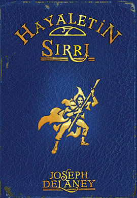
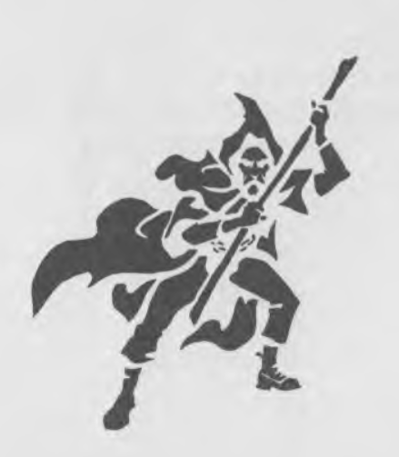
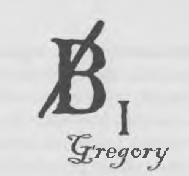
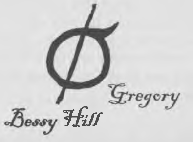
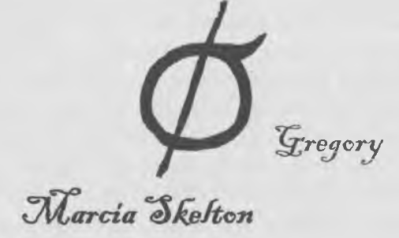

ÜLKENİN EN YÜKSEK NOKTASI ESRARENGİZLİĞİ İLE TANINIR. DERLER Kİ. ORADA BİR ADAM. KORKUNÇ BİR FIRTINA SIRASINDA DÜNYAYI TEHDİT EDEN BİR ŞEYTANI BAĞLARKEN ÖLMÜŞ. BUNDAN SONRA TEKRAR BUZLARIN HÜKMÜ BAŞLAMIŞ VE BUZLAR ÇEKİLDİĞİNDE. TEPELERİN ŞEKLİ VE KASABALARIN İSİMLERİ BİLE DEĞİŞMİŞ. ŞİMDİ BU TERK EDİLMİŞ DİYARIN EN YÜKSEK NOKTASINDA UZUN ZAMAN ÖNCE OLMUŞ OLANIN HİÇBİR İZİ KALMAMIŞ OLSA DA ADI HİÇ UNUTULMADI.
WARDSTONE

Soğuk, karanlık bir kasım akşamı, Alice’le birlikte mutfaktaki ateşin başında, ustam Hayalet’in yanında oturuyorduk. Hava son günlerde giderek soğumaya başlamıştı ve çok yakında Hayalet’in, kasvetli Anglezarke Fundalığındaki kış evine gitme vaktinin geldiğine karar vereceğini biliyordum.
Gitmek için acelem yoktu. Sadece ilkbahardan beri Hayalet’in çırağıydım ve henüz Anglezarke’daki evi görmemiştim, ama merak da etmiyordum. Burada, Chipenden’da çok rahattım, doğrusu kışı burada geçirmeyi yeğlerdim.
Ezberlemeye çalıştığım Latince kelimelerden başımı kaldırınca Alice’le göz göze geldik. Şöminenin yanındaki alçak taburede oturuyor, yüzü ateşin ışıltısında parlıyordu. Gülümsedi, ben de karşılık verdim. Chipenden’dan ayrılmayı istemememin nedenlerinden biri de Alice’ti. Şimdiye dek arkadaş diyebileceğim kadar bana yakın olan tek kişi oydu ve birkaç kez de hayatımı kurtarmıştı. Onun burada bizimle birlikte yaşamasından çok hoşnuttum.
Bir hayaletin yalnız yaşantısını daha çekilir kılıyordu. Ancak ustam, kesin bir dille, yakında yanımızdan ayrılması gerektiğini söylemişti. Ona başından beri güvenmemişti, ne de olsa cadılık geçmişi olan bir aileden geliyordu. Üstelik beni derslerimden alıkoymaya başlayacağını da düşünüyordu. Bu nedenle Hayale t’le ben Anglezarke’a giderken bizimle gelmeyecekti.
Zavallı Alice bunu bilmiyordu. Ona bunu söyleyebilecek cesaretim de yoktu. Şimdilik yalnızca Chipenden’da birlikte geçireceğimiz o çok değerli, sayılı akşamlardan birinin tadını çıkarmaya çalışıyordum.
Oysa yılın birlikte geçireceğimiz son akşamını yaşadığımızı henüz bilmiyorduk: Alice’le ben ateşin ışığında kitap okur ve Hayalet oturduğu yerde uyuklarken, aniden çalan zil tüm huzurumuzu kaçırdı. Bu beklenmedik sesi duyar duymaz moralim bozuluverdi. Çünkü bunun tek bir anlamı vardı: Hayalet işi.
Zaten Hayalet’in evine başka bir nedenle kimse gelemezdi. Yoksa bahçeyi koruyan evcil öcü, onları paramparça ederdi. Kısacası kararan hava ve soğuk rüzgâra rağmen, zilin bulunduğu söğüt ağaçlarıyla çevrili yere gidip kimin yardıma ihtiyacı olduğuna bakmak benim görevimdi.
Erken yenen akşam yemeğinin ardından iyice gevşeyip rahatlamıştım. Hayalet de isteksizliğimi fark etmiş olacak ki hayal kırıklığına uğramış gibi başını iki yana salladı, öfkeyle parlayan yemyeşil gözlerini bana çevirdi.
Hemen git bak evlat! diye kükredi. Gece yeterince kötü zaten. Gelen her kim ise, bir de bekletilmek hoşuna gitmeyecektir.
Ayağa kalkıp cübbeme uzanırken Alice duygularımı paylaştığını gösterecek şekilde gülümsedi. Benim için üzülüyordu, fakat bir yandan da ateşin karşısında ellerini ısıtırken buz gibi soğuğa kendisinin değil de benim çıkacak olmama sevindiğini görebiliyordum.
Dışarı çıkıp arkamdan kapıyı sıkıca kapattıktan sonra sol elimde fener; bahçenin batı kanadından yokuş aşağı inerken rüzgâr, cübbemi söküp almak için elinden geleni yapıyordu. Sonunda bodur söğütlerle çevrili, iki yolun kesiştiği yere vardım. Hava iyice kararmıştı ve fenerimin ışığı etrafta ürpertici gölgeler oluşturuyor, ağaç kütükleri veya dallarını insan eline, pençelere ya da goblin yüzüne dönüştürüyordu. Başımın üzerinde çıplak dallar sallanırken rüzgâr, yaklaşan ölümün habercisi dişi ruh öcüler gibi inliyordu.
Gelgeldim tüm bunlar beni fazla endişelendirmiyordu. Buraya daha önce karanlıkta pek çok kez gelmiştim, üstelik Hayalet’le yaptığımız yolculuklar sırasında insanın kanını dondurabilecek şeylerle karşılaşmıştım, birkaç gölgeden etkilenecek değildim. Benden çok daha gergin biriyle karşılaşmayı bekliyordum: Hortlakların bezdirdiği bir çiftçinin, yardım istemek için gönderdiği oğlu; Hayalet’in evine yaklaşmaya bile korkan bir çocuk.
Ancak söğütlerin arasında beni bekleyen, bir çocuk değildi. Şaşkınlıkla duraksadım. Orada, zile bağlı ipin hemen altında kara cübbeli ve kukuletalı biri duruyordu. Sol elinde de bir asa vardı. Bu, başka bir hayaletti!
Adam hiç hareket etmediğinden ona doğru biraz yürüyüp birkaç adım ötesinde durdum. Geniş omuzluydu ve ustamdan biraz daha uzundu. Kukuletasının örttüğü yüzünü tam olarak göremiyordum. Kendimi tanıtmama fırsat kalmadan konuşmaya başladı:
Sen dışarıda soğuktayken onun ateşin başında olduğuna hiç şüphem yok, dedi alaylı bir şekilde. Hiçbir şey değişmiyor!
Siz Bay Arkwright mısınız? diye sordum. Ben Tom Ward. Bay Gregory’nin çırağı.
Oldukça mantıklı bir tahminde bulunmuştum. Ustam John Gregory şimdiye dek tanıdığım tek hayaletti; fakat başkaları olduğunu da biliyordum. İçlerinde bize en yakın olanı da Caster’ın ötesinde, Eyalet’in kuzey sınırlarını içine alan bölgeden sorumlu Bili Arkwright’tı. Yani bu adam, büyük olasılıkla oydu; ancak neden gelmiş olabileceği hakkında hiçbir fikrim yoktu.
Yabancı, yüzünü örten kukuletayı çekince kırçıllı siyah sakalıyla kırlaşmaya başlamış dağınık saçları belirdi. Gülümsüyor olsa da, bakışları buz gibi ve donuktu.
Kim olduğum seni ilgilendirmez evlat. Ama ustan beni iyi tanır!
Sözlerini bitirir bitirmez cübbesinden bir zarf çıkarıp bana uzattı. Zarfı evirip çevirerek hızlıca göz attım.
Balmumuyla mühürlenip üzerine John Gregory’e diye yazılmıştı.
Sallanma evlat. Ona bu mektubu verip çok yakında tekrar görüşeceğimizi söyle. Onu Anglezarke’da bekliyor olacağım!
Mektubu arka cebime sokup oradan bir an önce uzaklaştığıma memnundum, bu yabancının yanında kendimi hiç de rahat hissetmemiştim. Fakat henüz eve doğru birkaç adım atmıştım ki merakıma yenik düşerek arkama baktım.
Şaşırtıcı ama, yabancıdan hiç iz yoktu. Daha uzaklaşamamış olmalıyken ağaçların arasında gözden kaybolmuştu bile.
Afallamış halde, soğuk ve keskin rüzgârdan kurtularak ve bir an önce kapağı eve atmak için koşar adım yürümeye başladım. Bir yandan da mektupta neler yazılı olduğunu merak ediyordum. Yabancının ses tonu oldukça tehditkârdı ve söylediklerine bakılırsa ustamla buluşmaları pek dostane olmayacaktı!
Hayalet’in, havalar bu kadar soğumadan dersler için seçtiği bankın önünden geçip bahçenin batı kanadındaki ilk ağaçlara vardığımda aklımda bu düşünceler vardı. İşte tam o sırada korkudan donakalmama neden olan bir şey duydum.
Ağaçları sarıp sarmalayan karanlığın içinden kulak tırmalayıcı, öfke dolu bir böğürtü geldi. Öyle şiddetli ve dehşet vericiydi ki olduğum yerde kalakaldım. Kilometrelerce öteden duyulabilecek bu sesi daha önce de duymuştum. Bahçeyi korumaya çalışan evcil öcünün sesiydi bu. Ama bahçeyi neden koruyordu ki? Yoksa izleniyor muydum?
Arkama dönüp feneri kaldırarak endişeli bir şekilde karanlığı kolaçan ettim. Belki de yabancı hemen arkamdaydı! Hiçbir şey göremediğimden gözlerimi iyice kısıp en küçük sesleri bile kaçırmamaya çalıştım. Oysa tek duyabildiğim ağaçların arasında esen rüzgârın ıslığıyla çok uzakta havlayan bir bekçi köpeğinin sesi oldu. İzlenmediğime kanaat getirince yoluma devam ettim.
Daha ikinci adımımı atamadan öfkeli böğürtü yeniden duyuldu; bu kez çok daha yakından. Tüylerim diken diken olmuştu ve şimdi öcünün öfkesinin bana yöneltildiğini hissettikçe korkum daha da artıyordu. Ama bana öfkelenmesi için bir neden yoktu ki? Yanlış bir şey yapmamıştım.
Bir adım daha atmaya cesaret edemediğimden öylece kalakaldım, en ufak bir hareketimin dahi saldırıya geçmesine neden olabileceğinden korkuyordum. Gece soğuktu soğuk olmasına ama terlemeye başladığımı ve gerçekten büyük bir tehlikede olduğumu hissediyordum.
En sonunda karanlığa doğru, Benim, Tom! diye seslenebildim. Korkacak bir şey yok. Sadece ustama bir mektup getiriyorum.
Buna yanıt olarak bir böğürtü daha duyuldu, ama bu kez çok daha yumuşak ve uzakta olduğundan, çekinerek attığım birkaç adımdan sonra hızlı hızlı yürümeye devam ettim. Eve vardığımda Hayalet arka kapının eşiğinde durmuş, elinde asası bekliyordu. Öcünün sesini duymuş, neler olup bittiğine bakmaya geliyordu. iyi misin evlat? diye seslendi.
Evet, diye bağırdım. Neden bilmiyorum ama öcü öfkelendi. Şimdi sakinleşti gibi.
Hayalet başını sallayıp asasını kapının arkasına bıraktıktan sonra eve girdi.
Peşi sıra mutfağa girince onu sırtını ateşe vermiş; bacaklarını ısıtırken buldum. Cebimden mektubu çıkardım.
Orada hayalet gibi giyinmiş bir yabancı vardı, diyerek mektubu uzattım. Bana adını söylemedi, size bunu vermemi istedi.
Ustam öne çıkıp mektubu elimden alıverdi. Masanın üzerindeki mum titremeye başladı, şöminedeki ateş azaldı ve mutfak aniden soğuyuverdi; tüm bunlar, öcünün durumdan hâlâ memnun olmadığının işaretleriydi. Alice paniğe kapılmış, oturduğu tabureden aşağı düşecekmiş gibi görünüyordu. Ancak Hayalet zarfı yırtarak gözlerini iyice açıp mektubu okumaya başladı.
Okuması bitince suratı asıldı, kaşları öfkeyle çatıldı. Bir şeyler mırıldanarak ateşe fırlattığı mektup daha şömineye düşmeden buruşup kararıverdi. Şaşkınlık içinde ona bakıyordum. Sinirlendiği yüzünden belliydi ve sanki tüm vücudu titriyordu.
Hava daha da kötüleşmeden yarın Anglezarke’daki eve doğru yola çıkacağız. Bakışlarını Alice’e çevirerek konuşmaya devam etti. Ama sen, yolun yalnızca belli bir yerine kadar bizimle olacaksın kızım. Seni Adlington yakınlarında bırakacağım.
Adlington mı? diye sordum. Orası erkek kardeşiniz Andrew’in yeni yerleştiği yer değil mi?
Evet evlat, ama kız orada kalmayacak. Kasabanın dışında bana iyilik borcu olan bir çiftçiyle karısı yaşıyor. Bir sürü oğulları vardı, ama ne yazık ki yalnızca biri hayatta. Yaşadıkları onca acının üstüne bir de kızları boğularak öldü. Oğulları artık uzakta çalışıyor, annesinin sağlığı bozulmaya başladığından yardıma ihtiyacı var. Yeni evin orası olacak.
Alice gözleri fal taşı gibi açılmış bir şekilde Hayalet’e baktı. Yeni evim mi? Bu haksızlık! diye bağırdı. Neden sizinle kalamıyorum? İstediğiniz her şeyi yapmadım mı?
Alice sonbahardan, yani Hayalet’in bizimle birlikte Chipenden’da yaşamasına izin verdiğinden bu yana tek bir yanlış adım atmamıştı. Hayalet’in kütüphanesindeki bazı kitapları çoğaltarak bu iyiliği karşılıksız bırakmamış ve teyzesi Kemikli Lizzie’nin ona öğrettiği çoğu şeyi kağıda döküp cadılıkla ilgili bilgimi arttırabilmem için de bildiklerini bana anlatmıştı.
Evet kızım, her dediğimi yaptın, bu konuda bir şikâyetim yok, dedi Hayalet. Ama sorun bu değil. Hayaletlik eğitimi zordur. Tom’un ihtiyacı olan en son şey, senin gibi bir kız tarafından dikkatinin dağıtılması. Hayaletlerin hayatında kadınlara yer yoktur, rahiplerle tek ortak noktamız da budur.
Ama neden böyle aniden? Üstelik ben Tom’a yardım ediyorum, onun dikkatini dağıtmıyorum! diye itiraz etti Alice. Hem bundan daha sıkı da çalışamazdım. Size bunun aksini belirten bir yazı mı aldınız? diye çıkışarak mektubun küllerinin durduğu şömineyi işaret etti.
Ne? dedi Hayalet, şaşkınlık içinde kaşlarını kaldırarak, fakat ne demek istediğini hemen kavrayıverdi. Tabiî ki hayır. Ama özel yazışmalarım seni ilgilendirmez. Zaten ben kararımı verdim, diyerek ona sert bir bakış attı. Yani daha fazla tartışmayacağız. Yeni bir başlangıç yapacaksın. Bu dünyada ait olduğun yeri bulmak için çok iyi bir fırsat. Hem bu senin son şansın olacak!
Alice hiçbir şey demeden ve yüzüme bile bakmadan hışımla odadan çıktı. Peşinden gidip onu rahatlatıcı bir şeyler söylemek için ayağa kalktıysam da Hayalet bana seslendi:
Sen burada bekle evlat! Peşi sıra üst kata gitmeden önce seninle konuşmamız gerek, otur oturduğun yerde!
Söyleneni yapıp ateşin yanındaki yerime tekrar oturdum.
Söyleyeceğin hiçbir şey fikrimi değiştirmeyecek. Bunu ne kadar çabuk kabul edersen işimiz de o kadar kolaylaşır.
Olabilir, diye yanıtladım, ama bunu ona söylemenin daha iyi yolları vardı. Gerçekten de bunu daha kibarca söyleyemez miydiniz?
Kızın hislerinden daha önemli endişe etmem gereken şeyler var, dedi Hayalet.
Bu şekilde davrandığında onunla tartışmanın faydası yoktu, boşa nefes harcamadım. Bundan hoşnut değildim, ancak yapabileceğim hiçbir şey yoktu. Bu kararı haftalar önce aldığını biliyordum ve fikrini şimdi değiştirecek değildi. Hem zaten neden Anglezarke’a gitmemiz gerektiğini de bilmiyordum. Gerçekten de neden böyle apar topar gidiyorduk ki? Bunun o yabancı ve getirdiği mektupta yazılanlarla ilgisi var mıydı? Öcü de tuhaf davranmıştı. Yoksa o mektubu taşıdığımı fark ettiği için mi böyle davranmıştı?
Gelen yabancı sizinle Anglezarke’da görüşeceğini söyledi, deyiverdim. Pek dost canlısı birine benzemiyordu. Kim o?
Hayalet öylece bana baktı ve bir an için yanıt vermeyecek sandım. Sonra tekrar başını sallayıp konuşmadan önce bir şeyler mırıldandı.
Adı Morgan ve bir zamanlar benim çırağımdı. Yanımda neredeyse üç yıla yakın eğitim almasına rağmen başarısız bir çırak olduğunu da eklemeliyim. Senin de bildiğin gibi çıraklarımın hepsi bekleneni veremeyebiliyor. Bu iş için yeterince iyi değildi, bu yüzden de bana karşı kin besliyor, hepsi bu. Muhtemelen oraya gittiğimizde karşılaşmazsın bile, ama eğer onu görürsen uzak dursan iyi edersin. Beladan başka bir şey değildir evlat. Şimdi çıkıp yatsan iyi edersin, yarın sabah erkenden yola koyulmamız lazım.
Neden kışı geçirmek için Anglezarke’a gitmemiz gerekiyor? diye sordum. Burada kalsak olmaz mı? Burada, bu evde daha rahat etmez miyiz? Bu karar bana hâlâ hiç mantıklı gelmiyordu.
Bir gün için yeterince soru sordun! dedi Hayalet, sinirlenmeye başlıyordu. Tek söyleyebileceğim şu: Yaptıklarımızı her zaman istediğimiz için yapmayız. Ve eğer konfor arıyorsan bu meslek sana göre değil demektir. İşine gelsin ya da gelmesin oradakilerin bize ihtiyacı var; özellikle de karanlık çöktüğünde. Bize ihtiyaç duyulduğu için de gitmemiz gerek. Şimdi doğru yatağa. Tek kelime daha edeyim deme!
Duymayı beklediğim yanıt bu değildi, fakat Hayalet’in yaptığı her şey için geçerli bir nedeni vardı ve ben daha öğrenmesi gereken bir sürü şey olan bir çömezdim yalnızca. Başımı sallayarak söylediklerini onayladıktan sonra yatmaya gittim.
Alice odamın önündeki basamaklara oturmuş beni bekliyordu. Hemen yanındaki mumun ışığı kapıya gölgelerimizi düşürüyordu.
Buradan ayrılmak istemiyorum Tom, dedi ayağa kalkarken. Burada mutlu oldum. Kış evi de sıradaki en iyi şeydi. Yaşlı Gregory bana haksızlık ediyor!
Üzgünüm Alice, sana katılıyorum ama kararını vermiş. Yapabileceğim hiçbir şey yok.
Ağlamış olduğunu görebiliyordum, fakat başka ne diyeceğimi bilmiyordum. Aniden sol kolumu kavrayıp iyice sıktı. Neden hep böyle olmak zorunda? diye sordu. Neden kadınlarla kızlardan bu kadar nefret ediyor?
Sanırım geçmişte çok acı çekmiş, dedim usulca. Yakın zamanda ustamla ilgili bazı şeyler öğrenmiştim, ancak şimdiye dek bunları kimseyle paylaşmamıştım. Bak, sana bir şey anlatacağım Alice, ama başka kimseye anlatmamaya ve Hayalet’in de sana bunları anlattığımı öğrenmeyeceğine dair söz vermelisin!
Söz veririm, diye fısıldadı, gözlerini iri iri açarak.
Priestown’dan döndüğümüzde seni az daha çukura kapatacak olduğunu hatırlıyor musun?
Alice başını sallayarak onayladı. Ustam, kötü niyetli cadıları canlı canlı çukurlara hapsederek etkisiz hale getiriyordu. Bir süre önce, hak etmediği halde neredeyse Alice’i de böyle bir çukura hapsetmek üzereydi.
Ona ne söylediğimi anımsıyor musun? diye sordum. Çok iyi duyamamıştım Tom. Debeleniyordum ve dehşete kapılmıştım, ama her ne dediysen işe yaramıştı, fikrini değiştirmesini sağlamıştın. Bunun için sana hep minnettar olacağım.
Ona sadece Meg’i çukura kapatmadığını anımsattım, bunu sana da yapmamalıydı!
Meg mi? diye sözümü kesti Alice. O da kim? Daha önce adını hiç duymadım. ’’ Meg bir cadı. Hayalet’in günlüklerinden birinde onunla ilgili çok şey okudum. Genç bir adamken Hayalet, ona âşık olmuş. Sanırım o da kalbini kırmış. Üstelik hâlâ Anglezarke civarında bir yerlerde yaşıyor.
Meg’in soyadı ne?
Meg Skelton.
Hayır, bu doğru olamaz! Çok uzaklardan gelmişti, şu Meg Skelton. Yıllar önce de geldiği yere geri döndü. Bunu herkes bilir. O bir Lamia cadısıydı ve tekrar kendi türünün yanma dönmek istedi.
Hayalet’in kütüphanesindeki kitaplardan biri sayesinde, Lamia cadılarıyla ilgili çok şey öğrenmiştim. Birçoğu, bir zamanlar annemin de yaşamış olduğu Yunanistan’dan geliyordu ve vahşileştiklerinde insan kanıyla besleniyorlardı.
Evet Alice, Eyalet’te doğmadığı konusunda haklısın, ama Hayalet hâlâ burada olduğunu ve bu kış onunla tanışacağımı söylüyor. Kış evinde birlikte bile yaşıyor olabilirler.
Aptal olma Tom. Bu pek olası değil. Hangi aklı başında kadın onunla yaşar ki?
O kadar da kötü değil Alice. Haftalardır onunla aynı evi paylaşıyoruz ve yeterince mutlu olduğumuzu düşünüyorum.
Eğer Meg hâlâ onun evinde yaşıyorsa. dedi Alice, şeytani bir gülümsemeyle. Onu bir çukura gömülmüş bulursan şaşırma.
Oraya varınca göreceğiz, dedim gülümseyerek.
Hayır Tom. Sen göreceksin. Ben başka bir yerde yaşıyor olacağım. Unuttun mu? Ama o kadar da kötü değil, ne de olsa Adlington, Anglezarke’a çok yakın. Yürüyerek bile beni ziyaret etmeye gelebilirsin Tom. Gelirsin değil mi? Hem böylece ben de çok yalnız kalmamış olurum.
Hayalet’in onu ziyaret etmeme izin vereceğine emin olmamama rağmen kendini daha iyi hissetmesini sağlamak istiyordum. Aniden aklıma Andrew geldi.
Peki ya Andrew? diye sordum. Hayalet’in hayatta kalan tek erkek kardeşi ve Adlington’da yaşıyor. O kadar yakınken ustam, ara sıra onu görmek isteyecektir. Herhalde beni de yanında götürür. Köye sık sık geleceğimize eminim, yani seni görebilmek için çok fırsatım olacak.
Alice gülümseyip elimi bıraktı. O halde sık sık gel Tom. Seni bekliyor olacağım. Beni hayal kırıklığına uğratma. Ve Yaşlı Gregory ile ilgili şeyleri bana anlattığın için teşekkürler. Demek bir cadıya âşık ha? Bunu kim tahmin edebilirdi ki?
Yerdeki mumu kaptığı gibi üst kata çıktı. Alice’i gerçekten çok özleyecektim, fakat onu görebilmek için bahane bulmam anlattığımdan daha güç olabilirdi. Hayalet kesinlikle bunu onaylamazdı. Kızlara ayıracak vakti yoktu ve birçok kez beni de onlardan uzak durmam konusunda uyarmıştı. Hayalet’le ilgili Alice’e şimdilik yeterince, hatta belki de gereğinden fazla şey anlatmıştım. Ancak Hayalet’in geçmişinde Meg’den fazlası da vardı. Erkek kardeşlerinden biriyle nişanlı başka bir kadınla, yani Emily Burns’le de yakınlaşmıştı.
Erkek kardeşi ölmüştü ama bu skandal aileyi ikiye bölüp bir sürü soruna neden olmuştu. Emily de Anglezarke civarında yaşıyor olmalıydı. Her olayın iki yüzü vardır. Haliyle ben de daha fazla bilgi edinmeden Hayalet hakkında kesin yargılara varacak değildim; yine de bu sayı, Eyalet’te yaşayan erkeklerin hayatları boyunca yakınlaştıkları kadın sayısının iki misliydi: Hayalet gerçekten iyi yaşamıştı!
Odama çıkıp mumu yatağımın başucundaki masaya bıraktım. Yatağın ayakucunda eski çıraklarca duvara kazınmış bir sürü isim vardı. Kimisi Hayalet’le olan eğitimlerini başarıyla tamamlamıştı: Bili Arkwright’ın ismi sol üst köşede yazılıydı. Çoğu ise başarısız olup eğitimi tamamlayamamıştı. İçlerinden ölenler bile olmuştu. Billy Bradley’nin adı da diğer köşeye kazınmıştı. O benden bir önceki çıraktı. Gelgeldim hata yapıp parmaklarını bir öcüye kaptırmış, sonra da şoka girip kan kaybından ölmüştü.
O gece duvarı dikkatlice inceledim. Bildiğim kadarıyla ben de dâhil olmak üzere bu odada kalmış olan herkesin duvarda ismi yazılıydı. Duvarda pek boş yer kalmadığından ismim diğerlerinin yanında epey küçük kalmıştı, ama işte oradaydı. Yine de görebildiğim kadarıyla eksik bir isim vardı. Emin olmak için tüm duvarı baştan aşağı inceledim. Haklıydım: Duvarda ‘Morgan’ ismi yazılı değildi. Peki ama neden? Hayalet onun da çırağı olduğunu söylemişti, o halde neden ismini diğerlerinin yanma eklememişti?
Morgan’ın farkı neydi?
Ertesi sabah hızlı bir kahvaltının ardından toparlanıp yola koyulmaya hazır hale geldik. Evden çıkmamıza az bir vakit kala Hayalet’in evcil öcüsüne veda etmek üzere mutlağa geri döndüm.
Pişirdiğin tüm yemekler için teşekkürler, dedim boşluğa.
Hayalet’in, yalnızca teşekkür etmek için mutfağa geri dönmemden memnun olup olmayacağına emin değildim. Sürekli olarak yanımızda ‘çalışan’ kimselerle fazla yakınlaşmamamız gerektiğini söylerdi.
Ne olursa olsun öcünün bu övgü dolu sözlerden hoşlandığını biliyordum, çünkü sözlerimi bitirir bitirmez mutfak masasının altından boğuk bir mırıltı duyuldu ve bu ses öylesine yükseldi ki tezgâhın üzerindeki kap kacaklar titremeye başladı. Öcü çoğunlukla görünmezdi, ama ara sıra bakır renginde, kocaman bir kedi şeklini alırdı.
Duraksayıp cesaretimi topladıktan sonra yeniden konuşmaya başladım. Öcünün söyleyeceklerime nasıl bir tepki vereceğini bilemiyordum.
Dün akşam seni kızdırdıysam özür dilerim, dedim. Yalnızca görevimi yapıyordum. Canını sıkan şey, şu mektup muydu?
Öcü konuşamadığından soruma anlaşılır bir yanıt alamayacaktım. İçgüdülerim beni bu soruyu sormaya yöneltmişti. Doğru bir şey yaptığımı hissediyordum.
Aniden baca deliğinden gelen güçlü esintiyle birlikte önce belli belirsiz bir is kokusu, ardından da bir parça kâğıt gelip şöminenin önündeki kilimin üzerine düştü. Eğilip kâğıdı aldım. Kenarları tamamen yanmıştı ve bir parçası ellerimde dağılıverdi. Buna rağmen bunun Morgan’ın mektubu olduğunu anlamıştım.
Yanık kâğıdın üzerinde yalnızca birkaç kelime belli belirsiz seçilebiliyordu ve yazılanı okuyabilmek için epey uğraşmam gerekti:
Bana ait olanı geri ver, yoksa seni doğduğuna pişman ederim. Başlangıç olarak.
Hepsi buydu, ancak bu kadarı bile Morgan’ın ustamı tehdit ettiğini anlamam için yeterliydi. Tüm bunlar ne demek oluyordu? Hayalet Morgan’dan bir şey mi almıştı? Ona ait olan bir şey? Hayalet’in herhangi bir şey çalabileceğim hayal bile edemiyordum. Öyle biri değildi. Bunun hiçbir anlamı yoktu.
Hayalet’in ön kapıdan bağırmasıyla irkildim. Hadi evlat! Ne yapıyorsun orada? Aylaklık etme! Fazla vaktimiz yok!
Kâğıdı buruşturup gerisin geri şömineye attıktan sonra asamı alıp kapıya koştum. Alice dışarıya çıkmıştı bile, ama Hayalet kapının eşiğinde durmuş, şüpheli bakışlarla beni süzüyordu. Ayaklarının dibinde iki torba vardı ve yanımıza pek fazla şey almamamıza karşın her ikisini de benim taşımam gerekiyordu.
Hayalet sonunda bana kendime ait bir çanta vermişti ama henüz yanımda taşıyacak fazla eşyam yoktu. Çantamda yalnızca annemin verdiği gümüş kolye, babamın hediyesi olan çıra kutusu, defterlerim ve birkaç da kıyafet vardı. Çoraplarımdan bazıları öyle çok yamanmıştı ki neredeyse yeni gibiydiler, cübbemin altına giydiğim koyun derisi paltoyu Hayalet bu kışı geçirmem için almıştı. Kendime ait bir asam da vardı. Ustamın kendi elleriyle üvez ağacından yaptığı, cadılara karşı çok etkili bir asaydı bu.
Hayalet her ne kadar Alice’in yanımızda oluşunu pek onaylamasa da kıyafet konusunda ona oldukça cömert davranmıştı. Onun da yeni bir kışlık paltosu vardı. Ayak bileklerine kadar uzanan siyah, yün bir palto. Üstelik kulaklarını sıcak tutsun diye kukuletası da vardı.
Hayalet soğuktan pek fazla etkilenmiyor gibiydi. Cübbesiyle kukuletasını tıpkı sonbahar ve yazları yaptığı gibi giymişti. Aslında son birkaç aydır sağlığı pek de iyi sayılmazdı, ancak şimdi iyileşmiş ve eski gücüne kavuşmuş görünüyordu.
Hayalet ön kapıyı kilitledikten sonra kış güneşine karşı gözlerini kırpıştırarak hızlı adımlarla yürümeye başladı. Her iki çantayı da sırtlanmış, ona ayak uydurmaya çalışırken Alice de hemen arkamdaydı.
Ah evlat! Bu arada, diye seslendi Hayalet omzunun üstünden, güneye inerken babanın çiftliğine de uğrayacağız. Eğitiminin son ödemesinden bana hâlâ borcu var. Chipenden’dan ayrılıyor olduğumuza üzgündüm. Bu evi ve bahçeleri çok seviyordum ve bundan böyle Alice’ten ayrı kalma düşüncesi de beni üzüyordu. Ancak en azından annemle babamı görme şansım olacaktı. Kalp atışlarım hızlanmış, adımlarıma canlılık gelmişti. Eve gidiyordum!
Güneye inerken sürekli olarak arkama dönüp tepelere bakıyordum. Orada, bulutların arasında öyle çok vakit geçirmiştim ki bu tepelerden bazıları eski dostlarım gibiydi, özellikle de Hayalet’in yaz evine en yakın olan Parlick Tepesi. Fakat yürümeye başladığımızın ikinci günü o dev tepeler ufukta mor birer çizgiye dönüşmüştü ve yeni paltomu giyiyor olmaktan çok memnundum. Dondurucu soğukta, çatısız bir ahırda rahatsız bir gece geçirmiştik bile ve rüzgârın azalıp güneşin cılız da olsa parıldamaya başlaması, havanın her geçen saat daha da soğumasını engellemiyordu.
Sonunda eve iyice yaklaşmak ve attığım her adımla birlikte ailemi yeniden görme isteğim artmaya başladı. Babamı görmek için can atıyordum. Eve en son gelişimde ciddi bir hastalıktan yeni yeni kurtulmaya başlamıştı, üstelik eski sağlığına tamamen kavuşma şansı da çok azdı. Zaten kışın başında emekli olup çiftliği en büyük abim jack’e devretmeyi düşünüyordu. Ancak hastalığı olayların akışını hızlandırmıştı. Her ne kadar Hayalet, babamın çiftliği olduğunu söylese de bunun artık doğru olmadığını biliyordum.
Bir anda, aşağıda ahırı ve bacasından duman tüten o tanıdık çiftlik evini gördüm. Civar tarlalarla çıplak ağaçlar kışa yaraşır bir kasvete bürünmüştü. Bense ellerimi mutfaktaki ateşte ısıtmak için sabırsızlanıyordum.
Ustam yolun sonunda durdu. Abinle karısının bizi gördüklerine sevineceklerinden şüpheliyim evlat. Çoğu kimse Hayaletlerin yaptığı işten hoşlanmaz, bu da gayet normal. Hadi git de paramı al. Kızla ben burada bekleyeceğiz. Aileni yeniden görmek için can attığının farkındayım, ama bir saati geçirme. Sen sıcak bir ateşin yanında otururken biz burada donuyor olacağız!
Haklıydı. Abim Jack ve karısı hayaletlerin yaptığı işten hiç hoşlanmıyorlardı ve geçmişte onları bu işlere bulaştırmamam için beni uyarmışlardı. Alice’le Hayalet’i orada bırakıp çiftliğe doğru koşmaya başladım. Bahçe kapısını açar açmaz köpekler havlayınca ahırın yanından Jack beliriverdi. Hayalet’in çırağı olduğumdan beri iyi anlaşamasak da yüzündeki gülümseyişten bir kez olsun beni gördüğüne sevinmiş olduğunu anlamıştım.
Seni görmek güzel Tom, diyerek kolunu omuzlarıma doladı.
Seni de öyle Jack. Peki ya babam nasıl? diye sordum.
Abimin yüzündeki gülümseme siliniverdi. Gerçeği söylemek gerekirse Tom, son ziyaretinden bu yana pek iyileşmiş sayılmaz. Bazı günler diğerlerinden daha iyi oluyor, ama sabah uyanır uyanmaz öyle çok öksürüp aksırıyor ki güçlükle nefes alabiliyor. Çıkardığı sesleri duymak çok acı verici. Ona yardım etmek istiyoruz, fakat elimizden bir şey gelmiyor.
Üzgün üzgün başımı salladım. Zavallı babam. Kışı geçirmek için güneye iniyorduk. Babamın Hayalet’e olan borcunun kalan kısmını almaya gelmiştim. Keşke kala bilseydim, ama gitmem gerekiyor. Ustam yolun başında bekliyor. Bir saat sonra yeniden yola çıkacağız.
Alice’ten bahsetmedim. Jack onun bir cadının yeğeni olduğunu biliyor ve adını dahi duymak istemiyordu. Daha önce tatsız bir şekilde karşılaşmışlardı, aynı şeyin tekrarlanmasını istemiyordum.
Abim dönüp yola doğru baktıktan sonra beni baştan aşağı süzdü. Onun gibi giyindiğine hiç şüphe yok, dedi gülümseyerek.
Haklıydı. Çantaları Alice’e bırakmıştım, ancak siyah cübbem ve elimde taşıdığım asamla ustamın küçültülmüş haline benziyordum.
Paltom nasıl? diye sordum, iyice görebilmesi için cübbemi açarak.
Kalın görünüyor.
Bay Gregory benim için aldı. İhtiyacım olacağını söylüyor. Anglezarke’da bir evi var, Adlington’a çok yakın. Kışı orada geçireceğiz. Çok soğuk oluyormuş.
Evet, kesinlikle çok soğuk olacak. Bundan emin olabilirsin! Yerinde olmak istemezdim. Neyse, işlere dönsem iyi olacak, dedi Jack. Annemi bekletme. Bugün çok canlı ve neşeli. Geleceğini sezmiş olmalı.
Jack bahçe boyunca yürüdükten sonra el sallamak için ahırın köşesinde durdu. Ben de ona el sallayıp mutfak kapısına yöneldim. Annem buraya geleceğimi tahmin etmiş olmalıydı. Bu tür şeyleri hisseder. Bir ebe ve sağlıkçı olarak, çoğu zaman ondan yardım istemeye birilerinin gelmekte olduğunu sezer.
Arka kapıyı açınca annemi, ateşin hemen yanındaki sallanan sandalyesinde otururken buldum. Gün ışığına karşı çok hassas olduğundan perdeler çekiliydi, içeri girerken gülümsedi.
Seni görmek ne güzel oğlum, dedi. Gel de bana sıkıca sarıl, haberleri sonra verirsin!
Gidip ona sıkıca sarıldım. Sonra hemen yanma bir sandalye çektim. Annemi sonbaharda son gördüğümden bu yana birçok şey olmuştu, fakat Priestown’daki bir işin sonlarına doğru karşılaştığım tehlikeleri anlatan uzunca bir mektup göndermiştim.
Mektubumu aldın mı anne?
Evet, aldım Tom ve sana cevap yazamadığım için çok üzgünüm ama burada işler çok yoğundu ve güneye inerken uğrayacağını da biliyordum. Alice nasıl?
Sonunda gerçekten iyi biri olduğu ortaya çıktı anne. Chipenden’da bizimle birlikte mutlu bir şekilde yaşıyordu, ama sorun şu ki Hayalet ona hâlâ güvenmiyor. Kış evine gidiyoruz Alice’i hiç tanımadığı insanların çiftliğine bırakacak.
Kulağa çok acımasız geliyor, diye yanıtladı annem. Gelgeldim Bay Gregory’nin ne yaptığını bildiğine eminim. Bu hepinizin iyiliği içindir. Anglezarke’a gelince, orada kendine iyi bak evlat. Haşin ve kasvetli bir yerdir. Alice sizinle gelmediğine sevinse yeridir.
Jack babamdan bahsetti. Düşündüğün kadar kötü mü anne? diye sordum. Onu en son görüşümde korkularını Jack’ten saklamış; ama bana, babamın yaşamının sonlarına yaklaştığını düşündüğünü ima etmişti.
Biraz daha güç kazanabileceğini ummuştum. Kışı geçirebilmek için çok iyi bir bakıma ihtiyacı olacak. Eyalet’e geldiğimden bu yana geçireceğim en sert kış olacağını düşünüyorum. Şu anda yukarıda uyuyor. Birazdan çıkıp bakarız.
Jack daha neşeli görünüyor, dedim havayı yumuşatmak için. Belki de ailede bir hayalet olması fikrine alışmıştır.
Annem gülümsedi. Alışmalı da zaten, ama bence bunun nedeni Ellie’nin yeniden hamile oluşu. Üstelik bu kez bir oğlan, buna eminim. Jack hep bir oğlu olmasını istiyordu. Günün birinde çiftliği ondan devralacak biri.
Jack için seviniyordum. Annem bu gibi şeylerde asla yanılmazdı. Sonra evin sessiz olduğunu fark ettim. Hem de çok sessiz.
Ellie nerede? diye sordum.
Üzgünüm Tom, ama ziyarete gelmek için yanlış bir gün seçtin. Çarşambaları genellikle küçük Mary’yi de alıp kendi annesiyle babasını ziyarete gidiyor. Mary’yi görmelisin!
Sekiz aylık koca bir kız oldu. Öyle hızlı emekliyor ki takip etmek imkansız! Neyse, ustanın seni beklediğini ve dışarısının soğuk olduğunu biliyorum. Hadi gidip babanı görelim.
Babam derin uykuda olmasına rağmen arkasında dört tane yastık olduğundan sanki yatakta oturuyormuş gibi görünüyordu.
Bu şekilde daha rahat nefes alabiliyor, dedi annem. Ciğerlerinde hâlâ ödem var.
Babam hırıltılı bir şekilde nefes alıp veriyordu. Yüzü grileşmişti ve kaşları terden parlıyordu. Doğruyu söylemek gerekirse gerçekten çok hasta görünüyordu. Bir zamanlar yedi oğluna harika bir şekilde babalık yaparken tek başına çiftliği idare eden o güçlü, sağlıklı adam eriyip gitmişti.
Bak Tom, onunla birkaç kelime de olsa konuşmak istediğini biliyorum ama dün gece hiç uyumadı. Şimdi uyandırmasak daha iyi bence. Ne dersin?
Tabii ki de anne, diyerek ona hak vermeme rağmen babamla konuşamayacak oluşuma üzülüyordum. Öyle hastaydı ki onu bir daha asla göremeyeceğimi biliyordum.
İstersen ona bir öpücük ver oğlum, sonra dinlenmesi için onu yalnız bırakırız.
Şaşkınlık içinde anneme baktım. Babamı en son ne zaman öptüğümü anımsamıyordum. Şimdiye dek yalnızca omzumun sıvazlandığı o kısa anlar ve hızlı tokalaşmalar olmuştu.
Hadi Tom, onu alnından öpsene, diye ısrar etti annem. Ve geçmiş olsun de. Uyuyor olabilir, ama yine de seni duyup kendini iyi hissedecektir.
Anneme bakınca, gözlerim onunkilerle buluştu. Bakışları çelik gibi sertti ve konuşmasındaki gücü hissediyordum. Dediğini yaptım, yatağa eğilip usulca babamın sıcak ve ıslak alnını öptüm. Ne olduğunu tam olarak anlayamadığım tuhaf bir koku vardı. Çiçek kokusu gibi. Adını bir türlü anımsayamadığım bir çiçek.
Çabuk iyileş baba, diye fısıldadım yavaşça. Baharda yine gelip seni göreceğim.
Ağzım kupkuru kesiliverdi, dudaklarımı yalayınca babamın tuzlu terinin tadını aldım. Annem, yüzünde kederli bir gülümsemeyle yatak odasının kapısını işaret etti.
Peşi sıra dışarı çıkarken babam aksırıp tıksırmaya başladı. Endişe içinde arkamı dönünce gözlerini açıp bana baktığını gördüm.
Tom! Tom! Sen misin? diye seslendi, yeni bir öksürük krizine tutulmadan önce.
Annem hışımla yanımdan geçip yatağa giderek, öksürüğü geçene kadar babamın alnını okşadı.
Evet, Tom burada, ama çok konuşarak kendini yormamaksın.
Çok çalışıyor musun evlat? Ustan senden memnun mu? diye sordu babam, fakat sesi, boğazına bir şey takılmış gibi zayıf ve hırıltılıydı.
Evet baba, iyi gidiyor. Hatta gelmemin nedenlerinden biri de bu, diyerek yatağa yaklaştım. Ustam benimle devam etmek istiyor ve de çıraklık eğitimimin son ödemesini.
Bu iyi haber evlat. Senin için gerçekten çok sevindim. Demek Chipenden’da çalışmak hoşuna gitti? Evet baba, dedim gülümseyerek, şimdi de kışı geçirmek üzere Anglezarke’daki evine gidiyoruz.
Babam aniden paniğe kapıldı. Ah, keşke oraya gidiyor olmasaydın evlat, diyerek anneme baktı. Orayla ilgili tuhaf hikâyeler anlatılıyor. Üstelik hiçbiri de iyi değil. Oradayken başının arkasında bile gözün olmalı. Sakın ustanın yanından ayrılma ve her dediğini yap.
iyi olacağım baba. Beni merak etme. Her gün daha çok şey öğreniyorum.
Buna eminim evlat, itiraf etmeliyim ki seni bir hayaletin yanma çırak olarak verme konusunda şüphelerim vardı, fakat annen haklıymış. Bu zor bir meslek olsa da birileri yapmak zorunda. Annen şimdiye kadar başardığın şeyleri bana anlattı Böylesine cesur bir oğlum olduğu için gurur duyuyorum. Yanlış anlama, çocuklarımı birbirlerinden ayırıyor değilim. Yedi oğlum oldu, hepsi de çok iyi evlatlar. Oğullarımın hepsini çok seviyorum ve her biriyle ayrı ayrı gurur duyuyorum, ama içimden bir his senin içlerinde en iyisi olacağını söylüyor.
Ne diyeceğimi bilemediğimden gülümsem ekle yetindim. Babam da gülümsememe karşılık verdikten sonra gözlerini kapadı ve çok geçmeden soluk alıp veriş hızı değişti; uykuya daldı. Annem kapıyı işaret edince birlikte dışarı çıktık.
Mutfağa döndüğümüzde anneme o tuhaf kokunun ne olduğunu sordum.
Sorduğuna göre, bunu senden saklayacak değilim Tom, dedi. Yedinci oğlun yedinci oğlu olmanın yanı sıra benden de bir takım özellikler almışsın. Her ikimiz de ‘ölüm alametleri’ adı verilen şeylere karşı çok hassasız. İşte, aldığın bu koku da ölümün yaklaştığının habercisi. .
Boğazımın düğümlenip gözlerimin yaşardığını hissettim. Annem yanıma gelip bana sıkıca sarıldı.
Ah Tom, üzülmemeye çalış. Bu babanın bir hafta, bir ay ya da bir yıl içinde öleceği anlamına gelmez. Ancak koku ne kadar yoğunlaşırsa ölüm de o kadar yaklaşmış demektir. Hasta olan kişi tamamen iyileştiğinde koku da kayboluverin Bu baban için de geçerli. Bazı günler koku neredeyse yokmuş gibi oluyor. Onun için elimden gelenin en iyisini yapıyorum ve hâlâ umudumuz var. Her neyse, işte sonunda anlatabildim, sen de yeni bir şey daha öğrenmiş oldun.
Teşekkürler anne, dedim üzgün bir şekilde gitmeye hazırlanırken.
Bu halde gitmek için acele etme, dedi annem, yumuşak ve sevecen bir ses tonuyla. Ateşin yanma otur da sana yol için birkaç sandviç hazırlayayım.
Söylediğini yapıp üçümüz için de jambonlu ve tavuklu sandviçler hazırlamasını bekledim.
Bir şey unutmuyor muyuz? diye sordu sandviç dolu poşeti bana uzatırken.
Bay Gregory’nin parası! diye yanıtladım. Tamamen aklımdan çıkmıştı.
Burada bekle Tom. Odama çıkıp parayı alayım. ‘Odam’ derken babamla paylaştığı yatak odasından değil, kendi eşyalarını kilitli tuttuğu çatı katındaki odadan bahsediyordu. Çocukluğumdan bu yana oraya yalnızca bir kez, bana gümüş zinciri verdiği gün girmiştim. Oraya başka kimse girmezdi. Babam bile.
Odada bir sürü kutuyla sandık vardı, ama içlerinde ne olduğuna dair en ufak bir fikrim yoktu. Annemin az önce söylediklerine bakılırsa para da olmalıydı. Zaten bu çiftliği annemin kendi memleketinden, yani Yunanistan’dan gelirken yanında getirdiği paralarla almışlardı.
Evden çıkmadan önce annem sandviç dolu poşetle birlikte gereken parayı da verdi. Göz göze geldiğimizde bakışlarındaki endişeyi görebiliyordum.
Uzun, zorlu ve acımasız bir kış olacak evlat. Tüm işaretler bu yönde. Kırlangıçlar normalden neredeyse bir ay önce güneye göç etti ve ilk don olduğunda güllerimin üzerinde hâlâ çiçekler vardı. Daha önce hiç böyle bir şey görmemiştim. Sanıyorum ki gerçekten zorlu geçecek bu kış, bizi direnemeyeceğimiz şekilde değişmeye zorlayacak. Bu kışı geçirmek için Anglezarke’dan daha kötü bir yer de olamaz. Baban senin için endişelendi, ben de öyle. Üstelik söyledikleri doğruydu.
Bu yüzden sözlerimi hafifletmeyeceğim. Karanlığın kuvvetlendiğine hiç şüphe yok ve özellikle de orada uğursuz bir şeyler var. Uzun yıllar önce Eski Tanrılara orada tapılıyordu. Kış aylarında içlerinden bazıları uykularından uyanır. İçlerinde en kötüsü de kimilerinin ‘Kışın Efendisi’ adını taktıkları Golgoth’tur. Yani ustanın yanından sakın ayrılma. Sahip olduğun tek gerçek dost o. Birbirinize destek olmalısınız.
Peki ya Alice?
Annem başını iki yana salladı. İyi olabilir de, olmayabilir de. Oradayken Eyalet’teki çoğu yere kıyasla karanlığa daha yakın sındır. Yani bir testten daha geçecek. Umarım bunu atlatabilir. Fakat neler olabileceğini kestiremiyorum. Sadece dediğimi yap. Ustanın yanından ayrılma. Önemli olan bu.
Son kez birbirimize sarılıp vedalaştık. Sonra yol boyunca yürümeye başladım.
Anglezarke’a yaklaştıkça hava daha da kötüleşti.
Yağmur yağmaya başlamış, güneydoğudan esen soğuk rüzgâr iyice sertleşip yüzümüzü döverken kurşun gibi ağırlaşan gri bulutlar sıkıntı verici bir şekilde alçalmıştı. Vakit geçtikçe rüzgâr daha da sertleşti, yağmur yerine kar ve doluyu bıraktı. Toprak iyice çamura dönüşünce giderek yavaşladık. Tüm bunlar yetmezmiş gibi bataklıklara ve balçık dolu yerlere giriyorduk. Sağ salim devam edebilmemiz için Hayalet’in tüm bilgisini kullanması gerekiyordu.
Ancak üçüncü günün sabahında, bulutlar aralanınca tam karşımızdaki amansız tepeleri gördük.
Hayalet, İşte orada diyerek asasını ufka doğru salladı Anglezarke Fundalığı. Ve beş altı kilometre güneyinde de yine asasıyla işaret ederek Blackrod var.
Kasaba göremeyeceğimiz kadar uzaktaydı. Belli belirsiz tüten dumanlar görür gibi oldum, ama bunlar bulut da olabilirdi.
Blackrod nasıl bir yer? diye sordum. Ustam daha önce birçok kez bahsetmiş olduğundan haftalık erzaklarımızı oradan alacağımızı düşünüyordum.
Chipenden kadar misafirperver bir yer değildir, yani uzak durmak en iyisi, dedi Hayalet, insanları tuhaftır ve çoğu da birbirine akrabadır. Ben orada doğduğum için iyi bilirim, Adlington çok daha güzel bir yerdir. Epey de yaklaştık. Seni bırakacağımız yer oranın birkaç kilometre kuzeyinde, dedi Alice’e dönerek. Adı Moor View Çiftliği. Oranın sahipleri Bay ve Bayan Hurst ile birlikte kalacaksın.
Bir saat kadar sonra büyük bir gölün yakınında, etrafında başka hiçbir yerleşim olmayan bir çiftlik evine vardık. Hayalet önden giderken köpekler havlıyordu. Çok geçmeden bahçeye girip onu gördüğüne pek de memnun olmayan yaşlı bir çiftçiyle konuşmaya başladı. Beş dakika kadar sonra çiftçinin eşi de onlara katıldı. Her üçünün yüzü de mahkeme duvarı gibiydi.
Burada hoş karşılanmayacağım kesin, dedi Alice dudak bükerek.
O kadar kötü olmayabilir, diyerek ortamın gerginliği için nedenler bulmaya çalıştım. Kızlarını kaybettiklerini unutma. Bazı insanlar böyle bir yıkımı asla atlatamaz. Beklerken çiftliği daha dikkatli inceledim. Pek iyi durumda değildi, binaların çoğunun bakım ve tamire ihtiyacı vardı. Ahır yana eğilmiş, bir fırtınada yerle bir olacak gibi duruyordu. Görebildiğim her şey kasvetliydi. Yakındaki gölü de düşünmeden edemedim. Karşı kıyıda bataklığa dönüşen, kıyının bu tarafındaysa yalnızca birkaç bodur söğüdün yetiştiği iç karartıcı bir su kütlesiydi. Acaba kızları orada mı boğulmuştu? Hurst ailesi ne zaman pencereden dışarı baksa olanları anımsıyor olmalıydı.
Birkaç dakika sonra Hayalet, arkasına dönüp gelmemizi işaret edince çamurlu yolda ağır adımlarla ilerleyerek yanlarına gittik.
Bu çırağım Tom, dedi Hayalet, beni yaşlı çiftçiyle karısına tanıştırarak.
Gülümseyip merhaba dedim. Her ikisi de başlarını sallasa da gülümsememe karşılık veren olmadı.
Ve bu da genç Alice, diye devam etti Hayalet. Çok çalışkandır ve size ev işlerinde yardımı dokunur. Biraz serttir ama içten davranırsanız sorun yaratmaz.
Her ikisi de Alice’i baştan ayağa süzüp hiçbir şey söylemediler; Alice ise hızlıca onlara başını sallayıp yüzündeki belli belirsiz gülümsemeyi sildi ve sivri burunlu ayakkabılarına bakmaya başladı. Mutsuz olduğunu anlayabiliyordum; Hurst ailesiyle ilk buluşması pek de iyi başlamamıştı. Haksız da sayılmazdı. Her ikisi de perişan ve yenik görünüyordu; hayat onları dümdüz etmiş gibiydi. Bay Hurst’un yüzü ve alnındaki derin çizgiler gülmekten çok somurttuğunu gösteriyordu.
Yakın zamanda Morgan’ı gördünüz mü? diye sordu Hayalet.
Morgan ismini duyar duymaz başımı kaldırınca Bay Hurst’un sol gözünün seğirip kısıldığını fark ettim. Gergin görünüyordu. Hatta belki de korkmuştu. Hayalet’e iletmem için bana o mektubu veren Morgan’dan mı bahsediyorlardı acaba?
Pek değil, diye yanıtladı Bayan Hurst suratsızca. Hayalet’le göz göze gelmiyordu. Bazı geceler burada kalıyor, ama ne zaman gelip gideceği belli olmuyor. Şu sıralar çoğunlukla dışarıda.
En son ne zaman buradaydı?
İki hafta, belki daha da önce.
Bir daha buraya gelecek olursa onunla konuşmak istediğimi iletin. Evime gelsin.
Tamam, söylerim.
Unutmayın! Şimdi gitmemiz gerekiyor.
Hayalet gitmek üzere arkasını dönünce asamla yerdeki iki çantayı alıp peşinden yürümeye başladım. Alice arkamdan koşarak gelip kolumu yakalayarak beni durdurdu.
Verdiğin sözü unutma, diye fısıldadı kulağıma. Beni ziyarete gel ve bir haftayı da geçirme. Sana güveniyorum!
Gelip seni göreceğim, merak etme, diyerek gülümsedim.
Hurstlerin yanma döndü. Üçü çiftlik evine girene kadar arkalarından baktım. Alice için gerçekten çok üzülüyordum, fakat yapabileceğim hiçbir şey yoktu.
Çiftlikten uzaklaşırken Hayalet’e endişelerimden söz ettim. Alice’i evlerine almaktan pek hoşlanmış gibi görünmüyorlardı, dedim, Hayalet’in buna itiraz etmesini bekleyerek. Söylediklerime tamamen katılması beni çok şaşırttı.
Evet, bu doğru, hiç sevinmediler. Ancak başka seçenekleri yoktu. Hurstler bana epey yüklü bir miktar borçlu. Çiftliklerini iki kez öcülerden temizledim. Ve onca uğraşıma karşın henüz tek kuruş bile alamadım. Alice’i evlerine almayı kabul ederlerse borçlarını sileceğimi söyledim.
Duyduklarıma inanamıyordum. Ama bu hiç doğru değil! Ona kötü davranabilirler.
Kız kendi başının çaresine bakabilir, bunu sen de biliyorsun, dedi gaddarca gülümseyerek. Hem ondan uzak kalamayıp ara sıra iyi olup olmadığına bakmaya gideceğine hiç şüphem yok.
İtiraz etmek için ağzımı açmak üzereydim ki Hayalet avının başını koparmaya hazırlanan aç bir kurt gibi gülümsemeye devam etti.
Haksız mıyım? diye sordu.
Başımla onayladım.
Ben de öyle düşünmüştüm evlat. Seni artık yeterince iyi tanıyorum. Kız için endişelenmekten vazgeç. Kendin için endişelen. Zorlu bir kış olacak. Dayanma gücümüzün sınırlarını test edecek bir kış. Anglezarke zayıf ve güçsüzlere göre bir yer değildir!
Aklımı kurcalayan başka bir şey daha vardı ve bunu da sormaya karar verdim: Hurstlere Morgan diye biri hakkında sorular sorduğunuzu duydum. Mektubu gönderen Morgan mı bu?
Birden fazla olmadıklarını umuyorum evlat! Biri yeterince sorun yaratıyor.
Yani o bazen Hurstlerin yanında mı kalıyor?
Evet evlat. Oğulları olduğuna göre bu gayet normal.
Alice’i Morgan’ın ailesine gönderdiniz! diye mırıldandım şaşkınlık içinde.
Evet. Ve ne yaptığımı biliyorum, o yüzden şimdilik bu kadar soru yeter. Yolumuza bakalım. Karanlık bastırmadan oraya varmamız gerekiyor.
Yaklaştığımız ilk anlardan itibaren Chipenden’ın çevresindeki tepelerden hoşlanmıştım, ama Anglezarke çok farklıydı. Bunun nedenini kestiremesem de oraya yaklaştıkça ruhum daralıyordu.
Bunun nedeni belki de yıl sonuna doğru, kasvetli bir havada ve kış yaklaşırken gelmemizdi. Ya da uyuklayan dev bir yaratık gibi önümde yükselen, üzerinde koyu bulutların dolaştığı karanlık fundalığın ta kendisiydi. Böyle hissetmemin asıl nedeni, büyük olasılıkla herkesin beni buraya karşı uyarıp kışın çok zorlu geçeceğini söylemesiydi. Nedeni her ne olursa olsun; Hayalet’in evini, önümüzdeki birkaç ayı geçireceğimiz o kasvetli yeri görünce kendimi daha da kötü hissettim.
Eve yaklaşırken bir nehrin kaynağına doğru ilerleyip Hayalet’in vadi’ dediği, her iki tarafında sarp kayalıkların yükseldiği dar, derin bir yarığın tepelerine doğru tırmanmaya başladık. İlk başta zemin yalnızca oynak taşlarla kaplıydı, fakat daha sonra bu hareketli zemin yerini öbek öbek otlar ve çıplak kayalara bırakınca vadiyi çevreleyen karanlık tepeler bizi sıkıştırıyormuş gibi hissettik.
Yirmi dakika kadar sonra vadi sola kıvrılınca bir anda tam karşımızdaki kayalığa inşa edilmiş olan Hayalet’in evini gördük. Babam hep bir şeyle ilgili ilk izlenimlerin her zaman en doğrusu olduğunu söylerdi. Evi görür görmez moralim bozuluverdi. Neredeyse akşam olmuştu bile ve havanın kararıyor olması durumu düzeltmeye hiç yardımcı olmuyordu. Ev Chipenden’dakinden daha büyük ve etkileyiciydi, ancak daha koyu renk taşlarla inşa edildiğinden fark edilir bir tekinsizliği vardı. Üstüne üstlük pencerelerin küçüklüğü, evin bir vadinin içine inşa edilmiş olduğu gerçeğiyle birleşince odaların çok karanlık olacağını kestirmek güç değildi. Şimdiye dek gördüğüm en itici evlerden biriydi.
En kötüsü de bahçesinin olmayışıydı. Daha önce de söylediğim gibi ev hemen arkasındaki sarp kayalığa yaslanmıştı. Ön kısmındansa beş altı adımdan geniş olmayan ancak oldukça derin ve soğuk görünen nehre ulaşılabiliyordu.
Kaygan taşlardan suya düşmeyip otuz adım daha atabilirseniz tam karşıdaki kayalığa ulaşabilirdiniz.
Bacadan duman tütmüyordu; bu da içeride bizi karşılayacak sıcak bir ateş olmadığı anlamına geliyordu. Oysa Chipenden’da Hayalet’in evcil öcüsü eve ne zaman döneceğimizi bilir ve evi ısıtmakla kalmayıp yemek bile hazırlardı.
Tepede, vadiyi çevreleyen kayalıkların uçları neredeyse evin üzerinde birleşiyor gibiydi ve gökyüzü ancak daracık bir açıklıktan görülebiliyordu. Titremeye başladım çünkü vadi, fundalıktaki tepelerden çok daha soğuktu. Hatta yazın bile güneşin her gün birkaç saatten fazla görülemeyeceğini fark ettim. Tüm bunlar Chipenden’da sahip olduğum şeylerin kıymetini anlamamı sağladı: ormanlar, tarlalar, yüksek tepeler ve üstümüzdeki apaçık gökyüzü. Orada dünyaya tepeden bakıyorduk. Buradaysa derin ve dar bir çukura hapsolmuştuk.
Endişeli bir şekilde başımı kaldırıp yükselen kayalıklara baktım. Orada herhangi biri yahut herhangi bir şey bizi izliyor olsa bile ruhumuz duymazdı.
Evet evlat, işte geldik. Kış evim, burası. Yapacak çok işimiz var. Yorgun olsak da çalışmamız gerek!
Hayalet ön kapıya değil de evin arka kısmındaki ufak, zemini döşemeli alana yöneldi. Arka kapıya üç adım kala karşımıza, su damlayan ve amcalarımdan birinin anlattığı uydurma hikâyelerdeki ejderlerin kuyruğunu andıran buz sarkıtlarıyla kaplı kayalık çıktı.
Elbette ki daha sıcak bir yer söz konusu olsa tüm bu ‘dişler’ anında buhar oluverirdi. Ama evin arkasındaki bu soğuk yerde neredeyse tüm yıl bu şekilde kalır, kar da yağdıktan sonra artık ilkbaharın sonlarına kadar erimek bilmezdi.
Burada hep arka kapıyı kullanırız evlat, dedi Hayalet, cebinden çilingir olan erkek kardeşi Andrew’in ona özel yaptığı anahtarı çıkararak. Kilit mekanizması çok karmaşık olmadığı sürece bu anahtar her kapıyı açabiliyordu. Bende de buna benzer bir anahtar vardı ve birçok kez işe yaramıştı.
Anahtarı soktuktan sonra kapıyı açabilmek için epey zorlamak gerekti. İçeri girince odanın karanlığı moralimi iyice bozdu. Hayalet asasını duvara dayayıp çantasından çıkardığı mumu yaktı.
Çantaları şuraya bırak, diyerek arka kapının hemen yanındaki alçak rafları işaret etti.
Bana söyleneni yaptıktan sonra asamı Hayalet’inkinin yanma koyup evin içinde onu takip etmeye başladım.
Mutfağın durumu annemi şok etmeye yeterdi. Burada çalışan bir öcü olmadığına artık emindim. Hayalet geçen kış buradan ayrıldığından beri evle kimsenin ilgilenmediği çok açıktı. Her yer tozla kaplıydı ve tavandan örümcek ağları sarkıyordu. Lavabo kirli tencerelerle ağzına kadar doluydu ve masanın üzerinde küflenip yeşermiş yarım bir ekmek duruyordu. Havada belli belirsiz, tatlımsı, kötü bir koku vardı; sanki karanlık bir köşede bir şeyler çürüyordu. Ateşin yanında annemin çiftlikte kullandığına benzer bir sallanan sandalye duruyordu. Sandalyenin arkasına asılı kahverengi şalın acilen yıkanması şarttı. Şalın kime ait olduğunu merak etmiştim.
Pekâlâ evlat, dedi Hayalet, işe koyulsak iyi olur. Önce evi ısıtacağız. Temizliğe sonra geçeriz.
Evin yanında, ağzına kadar kömür dolu ahşap bir kulübe vardı. Bu kadar kömürün buraya nasıl çıkarılmış olabileceğini düşünmek istemiyordum. Chipenden’da her hafta erzak almak benim görevimdi ve buraya çuval dolusu kömür taşımanın da görevlerimden biri olmayacağını umuyordum.
İki büyük kömür kovası vardı ve her ikisini de doldurup mutfağa taşıdık.
iyi bir kömür ateşi nasıl yakılır bilir misin? diye sordu Hayalet.
Başımla onayladım. Çiftlikteyken, kışları her sabah ilk görevim mutfaktaki ateşi yakmaktı.
Tamam o zaman, dedi Hayalet. Sen bu işi hallet, ben de misafir odasındakiyle ilgileneyim. Bu eski evde tam on üç tane şömine var, ama şimdilik altısını yakmak yeterli olacaktır.
Bir saat kadar sonra altı şömineyi de yakmayı başardık: bir tane mutfakta, bir tane misafir odasında, bir tane zemin katta, Hayalet’in ‘çalışma odam’ dediği yerde ve birinci kattaki üç yatak odasının her birinde birer tane daha. Bunlardan başka yedi yatak odası ve bir de çatı katı vardı, ama onlarla ilgilenmedik.
Pekâlâ evlat, iyi bir başlangıç yaptık, dedi Hayalet. Şimdi gidip biraz su alalım.
Elimizde birer büyük testiyle arka kapıdan çıkıp ön tarafa gittik. Hayalet nehre yöneldi. Su göründüğü kadar derin olduğundan testileri doldurmamız kolay oldu. Ayrıca öyle berraktı ki dipteki kayaları dahi görebiliyorduk. Vadi boyunca neredeyse mırıldanır gibi yavaşça akan bir nehirdi bu.
Tam testimi doldurmuşken tepelerde bir hareketlenme hissettim. Aslında hiçbir şey göremiyordum; bu daha çok izlendiğime dair bir histi ve yukarı, kayalığın gri gökyüzünü bıçak gibi kestiği yere baktığımda da hiçbir şey göremedim.
Yukarı bakma evlat! diye çıkıştı Hayalet, sesi öfkeli geliyordu. Ona bu zevki tattırma. Fark etmemiş gibi davran.
O da kim? diye sordum. Hayalet’i eve doğru takip ederken endişelenmeye başlamıştım.
Söylemesi güç. Bakmadığım için emin olamam, dedi Hayalet aniden durup testisini yere bırakarak. Sonra apar topar konuyu değiştirdi. Ev hakkında ne düşünüyorsun? diye sordu.
Babam bana eğer mümkünse daima doğruyu söylememi öğretmişti ve Hayalet’in kolay kolay incinmeyecek biri olduğunu biliyordum. Kayaların arasında derin bir çukurda karıncalar gibi yaşamaktansa yükseklerde yaşamayı tercih ederim. Şimdiye kadar gördüklerime bakarak Chipenden’daki evinizi tercih ettiğimi söyleyebilirim. Ben de öyle evlat, dedi Hayalet. Ben de öyle. Buraya yalnızca gelmemiz gerektiği için geldik. Burada tam sınırdayız, karanlığın sınırında, kışı geçirmek için de çok kötü bir yer. Buradaki bazı yaratıklar düşünmeye bile gelmez, ama onlarla bizden başka kim mücadele edebilir ki?
Ne tür yaratıklar? diye sordum, annemin söylediklerini anımsıyordum fakat Hayalet’in ne söyleyeceğini de merak ediyordum.
Of! Sürüyle öcü, cadı, hortlak, cin ve daha beterleri. Golgoth gibi mi?
Evet, Golgoth gibi. Annen sana ondan bahsetmiş olmalı. Öyle değil mi?
Anglezarke’a gittiğimizi söyleyince bahsetti, ama pek fazla bir şey söylemedi. Sadece kış aylarında bazen harekete geçiyormuş.
Bu doğru evlat. Uygun bir zamanda onunla ilgili daha fazla şey anlatırım. Şimdi şuraya bak, diyerek kalın, kahverengi bir dumanın yükseldiği, silindir şeklindeki iki bacayı işaret etti. İşaret parmağını yükselen dumana doğrulttu. Bayrak açmak için buradayız evlat.
Gözlerim bayrak aradı. Oysa dumandan başka bir şey göremiyordum.
Yani boy göstermek için. Sadece burada bulunarak bile bu toprakların karanlığa değil, bize ait olduğunu söylüyoruz, diye açıkladı Hayalet. Karanlığa karşı koymak, özellikle de Anglezarke’da, zor bir şeydir, ancak bu bizim işimiz ve her türlü zorluğa katlanmaya değer. Testisini yerden aldı. Neyse, hadi içeri girip temizliğe başlayalım.
İki saat boyunca yerleri silip süpürmek, cilalamak ve halılarda birikmiş yığınla tozu silkelemekle uğraştım. En sonunda bulaşıkları yıkayıp kuruladıktan sonra Hayalet, ilk katın yatak odalarındaki üç yatağı hazırlamamı söyledi. Üç yatak mı? Diye sordum, yanlış duyduğumu düşünerek.
Evet, üç yatak. İşin bitince de gidip kulaklarını yıkasan iyi olur! Hadi fırla! Orada öyle aval aval bakma. Fazla vaktimiz yok.
Omuz silkerek denileni yaptım. Çarşaflar nemli olduğundan ateşte kurumaları için ters yüz ettim. Sonra da epey yorulmuş halde aşağı indim. Tam kilere inen basamakların önünden geçerken duyduğum bir ses irkilmeme neden oldu.
Aşağıdan, uzun bir iç çekiş ve sonrasında belli belirsiz bir ağlama sesi geliyordu. Basamakların başında, karanlığın sınırında dikkatlice dinlediysem de ses yinelenmedi. Acaba hayal mi etmiştim?
Mutfağa girdiğimde Hayalet’i ellerini yıkarken buldum.
Kilerden gelen bir ses duydum. Hortlak mı?
Hayır evlat, bu evde artık hortlak yok. Hepsini yıllar önce temizledim. Bu Meg olsa gerek. Yeni uyanmış olmalı.
Duyduklarıma inanamıyordum. Meg’le tanışacağımı söylemişti ve onun Anglezarke’da yaşayan bir Lamia cadısı olduğunu biliyordum, içten içe onun Hayalet’in evinde kalıyor olmasını da bekliyordum. Ama evi soğuk ve terk edilmiş görünce bu düşünce aklımdan çıkmıştı. Neden buz gibi bir kilerde uyuyordu ki? Merak ediyor olsam da yanlış zamanda soru sormamam gerektiğini biliyordum.
Hayalet kimi zaman sorduğum sorulara yanıt verecek bir ruh halinde olur, oturup defterimi çıkarmamı ve kalemime mürekkep doldurmamı söylerdi. Kimi zamansa tek düşündüğü o anki işi halletmek olurdu ve şimdi yeşil gözlerindeki kararlı ifadeyi görebildiğimden, o mum yakarken ben sessizce bekledim.
Kilere inen taş basamaklarda onu takip ettim. Tam olarak korktuğumu söyleyemem çünkü ne yaptığını biliyordu. Gelgelelim kesinlikle çok gergindim. Daha önce hiç Lamia cadısıyla karşılaşmamıştım ve her ne kadar onlarla ilgili birkaç şey okumuş olsam da neyle karşılaşacağımı bilmiyordum. Peki, ilkbahar, yaz ve sonbahar boyunca bu soğuk ve karanlık kilerde nasıl hayatta kalabilmişti? Ne yemişti? Hayalet’in çukurlara bağladığı cadılar gibi sümüklüböcek, kurt ve böceklerle mi beslenmişti?
Basamaklar ilk köşeyi dönünce önümüze demir parmaklıklı bir kapı çıktı. Kapının hemen arkasında basamaklar dört kişinin yan yana rahatça geçebileceği kadar genişliyordu. Daha önce hiç bu kadar geniş kiler basamakları görmemiştim. Kapının biraz ötesinde, duvarda bir başka kapı gördüm. Acaba arkasında ne vardı? Hayalet cebinden bir anahtar çıkarıp kilide soktu. Bu, her zaman kullandığı anahtar değildi.
Karmaşık bir kilit mi bu? diye sordum.
Evet, öyle evlat. Çoğundan daha karmaşık. Eğer ihtiyacın olursa bu anahtarı genellikle kapıya en yakın çalışma odasının kitaplığında saklıyorum.
Kapıyı açarken öyle yüksek bir ses çıktı ki sanki tüm taşlar titreyerek evi kocaman bir çana çevirmişti.
Demir, çoğunun buradan geçmesine engel olur fakat işe yaramasa bile üst katlardan sesleri duyabiliriz. Bu kapı, bekçi köpeğinden bile daha iyi.
Çoğunun mu? Kimden bahsediyorsunuz? Ya basamaklar neden bu kadar geniş? diye sordum.
Her şeyin sırası gelecek, diye çıkıştı Hayalet. Soru ve yanıt kısmını daha sonraya sakla. Önce Meg’le ilgilenmeliyiz. Basamaklardan inerken belli belirsiz sesler duymaya başladım. Önce bir inleme, hemen ardındansa eşelemeye benzeyen bu sesler devam edince iyice endişelendim. Evin yer altındaki bölümünün de en az yer üstündeki kadar büyük olduğunu fark etmem uzun sürmedi. Basamaklardan indikçe döndüğümüz her köşeden sonra duvarlarda yeni kapılara rastlıyorduk ve üçüncü köşeyi döndüğümüzde üç kapılı bir sahanlığa ulaştık.
Hayalet ortadaki kapının önünde durup bana baktı. Sen burada bekle evlat. Meg uyandığında bir süre için hep biraz gergin olur. Sana alışması zaman alacak.
Mumu elime tutuşturdu. Kapıyı açıp içeri girdi. Karanlığın içinde gözden kaybolduktan sonra kapıyı kapattı.
Orada on dakika beklemem gerekti ve sanırım basamakların ne kadar ürkütücü olduğunu söylememe gerek yoktur. Bir kere aşağı inmeye başlayınca etraf giderek daha da soğumaya başlamıştı. Üstüne üstlük aşağıdan, merdivenlerin bir köşeyi daha dönerek gözden kaybolduğu yerden rahatsız edici sesler geliyordu. Bunlar çoğunlukla belli belirsiz fısıltılardı, ama uzaktan gelen bir inleme de duydum. Sanki aşağıda kötü durumda olan birileri vardı.
Sonra Hayalet’in girdiği odadan boğuk sesler geldi. Ustam alçak ama sert bir sesle konuşuyordu ve bir kadının ağladığını duydum. Bu fazla uzun sürmedi, sanki ne konuştuklarını duymamı istemiyorlarmış gibi fısıldamaya devam ettiler.
En sonunda kapı aralandı. Hayalet’in ardından sahanlığa biri daha çıktı.
Bu Meg, dedi ustam, onu daha rahat görebilmem için kenara çekilerek. Ondan hoşlanacaksın evlat. Tüm Eyalet’teki en iyi aşçıdır.
Meg beni baştan ayağa süzerken şaşkın görünüyordu. Ben de aynı şaşkınlıkla ona bakıyordum. Şimdiye dek gördüğüm en güzel kadındı ve sivri burunlu ayakkabıları vardı. Chipenden’a gittikten sonraki ilk dersimde Hayalet bana sivri burunlu ayakkabılar giyen kızlardan uzak durmamı tembihlemişti. Söylediğine göre, farkında olmasalar da, sivri burunlu ayakkabı giyen kızlardan bazıları cadı olabilirmiş.
Bu tembihlemelere kulak asmayıp Alice’le konuşarak başıma türlü türlü dertler açmıştım ve en sonunda ustam yakayı kurtarmama yardımcı olmuştu. Oysa şimdi kendi tembihlerine kendisi uymuyordu! Tek farkla: Meg bir kız değil, kadındı. Ve yüz hatları o kadar kusursuzdu ki gözlerimi ondan ayıramıyordum: gözleri, çıkık elmacık kemikleri, teninin rengi.
Onu ele veren saçlarıydı. Daha çok yaşlı kadınlarınkine benzer gri bir renkteydi. Meg benden fazla uzun değildi ve Hayalet’in ancak omzuna geliyordu. Ona daha yakından bakınca soğuk ve nemli bir kilerde aylardır uyuyor olduğunu anlayabilirdiniz. Saçlarında örümcek ağları vardı, soluk mor elbisesiyse küflenmeye yüz tutmuştu.
Birkaç farklı cadı türü olduğunu biliyordum. Defterlerimi Hayalet’in onlarla ilgili anlattıklarıyla doldurmuştum. Ancak Lamia cadılarıyla ilgili bilgilerimi Hayalet’in kütüphanesinde karıştırmamam gereken kitapları karıştırırken öğrenmiştim.
Deniz aşırı ülkelerden gelen Lamia cadıları kendi topraklarında erkeklerin kanıyla beslenirler. Doğal halleri ‘vahşi’ olarak bilinir ve bu haldeyken insana hiç benzemezler, tüm vücutlarını kaplayan pullar, uzun, kalın pençeleri vardır. Ancak yavaş da olsa beden değiştirme özelliğine sahiptirler ve insanlarla yakın ilişki kurdukça dış görünüşleri de insana benzemeye başlar. Bir süre sonra ‘evcil Lamia’ olarak bilinen bir hal alırlar. Sırtlarında, omurgaları boyunca uzanan yeşil ve sarı renkteki pulları saymazsak kadınlardan farksızdırlar. Bazıları kötücüllükten vazgeçip iyi huylu dahi olabilir. Peki ama Meg artık iyi mi olmuştu?
Hayalet’in, Kemikli Lizzie’ye yaptığı gibi onu, çukura kapatmamasının bir nedeni de bu muydu?
Evet Meg, dedi Hayalet, bu Tom, benim çırağım. İyi bir çocuktur, anlaşacağınıza eminim.
Meg elini uzattı. Elimi sıkmak istediğini düşündüm, fakat parmaklarımız birbirine değmek üzereyken sanki yanmış gibi kolunu aniden çekti ve yüzünde endişeli bir ifade belirdi.
Billy nerede? diye sordu. İpeksi sesi temkinliydi. Billy’i seviyordum.
Hayalet’in benden önceki çırağından, ölmüş Billy Bradley’den bahsettiğini anlamıştım.
Billy gitti Meg, diye usulca açıkladı Hayalet. Sana bunu daha önce söylemiştim. Endişelenme, hayat devam ediyor. Tom’a da alışacaksın.
Ama bu hatırlamam gereken başka bir isim daha demek, diye yakındı. Hiçbiri fazla uzun yaşamazken bu çabaya değer mi gerçekten?
Meg akşam yemeğini hazırlamaya hemen başlamadı.
Biraz daha su getirmek için nehre yollandım ve Meg’i tatmin etmek için en az bir düzine git gel yapmam gerekti. Sonra şöminelerden ikisini kullanarak suyu ısıtmaya başladı, ama bunun yemek yapmak için olmadığını görünce hayal kırıklığına uğradım.
Oldukça büyük, demir bir küveti mutfağa taşıyıp sıcak suyla doldurması için Hayalet’e yardım ettim. Su, Meg içindi.
Misafir odasına geçelim de Meg biraz yalnız kalabilsin, dedi Hayalet. Aylardır kilerde ve haliyle temizlenmek istiyor.
Kendi kendime ustamın, onu kilere kapatmasa, kışları buraya döndüğünde evi temiz ve düzenli bulabileceğini söyledim. Ve bu da beraberinde bir başka soru daha getirdi: Hayalet neden Meg’i de Chipenden’daki yaz evine götürmüyordu?
Burası misafir odası, diyerek kapıyı açıp beni içeri buyur etti ustam. Burası sohbet ettiğimiz yerdir. Yardımımıza ihtiyacı olan insanlarla burada buluşuruz.
Misafir odaları eski bir Eyalet geleneğidir. Olabildiğince şık döşenen, evin en güzel odasıdır. Misafirlerin ağırlanması için temiz ve düzenli tutulması gerektiğinden nadiren kullanılır. Hayalet’in Chipenden’daki evinde misafir odası yoktu, çünkü insanları o evden uzak tutmaktan hoşlanıyordu. İşte bu yüzden dört yol ağzındaki bodur söğüt ağaçlarının altına gidip zili çalarak beklemeleri gerekiyordu insanların. Buradaysa kurallar farklı olacağa benziyordu.
Çiftlikteyken bizim de misafir odamız yoktu; çünkü yedi çocuklu bir aile olarak çok kalabalıktık ve hepimiz çiftlik evinde yaşarken tüm odalara ihtiyacımız oluyordu. Zaten Eyalet’te doğup büyümemiş olan annem, misafir odalarının aptalca bir fikir olduğunu düşünür.
Evin en güzel odası, hiç kullanılmayacaksa ne işe yarar ki? derdi hep. İnsanlar bizi olduğumuz gibi kabul etmeli.
Hayalet’in misafir odası o kadar da şık değildi, ancak hurdası çıkmış şezlong da diğer iki koltuk kadar rahat görünüyordu ve oda öyle güzel ısınmıştı ki oturur oturmaz gözlerimin kapanmaya başladığını hissettim. Kilometrelerce yol yürüdüğümüz, uzun bir gün olmuştu.
Esnememi zar zor bastırdıysam da Hayalet’in gözünden kaçmadı. Seninle bir Latince dersi daha yapacaktım ama bunun için uyanık bir zihne ihtiyacım var, dedi. Akşam yemeği biter bitmez yatsan iyi olur; sabah erken kalkıp fiil çekimlerine çalışmalısın.
Başımı sallayarak onayladım.
Bir şey daha, dedi ustam şöminenin yanındaki büfeyi açarak. Çıkarttığı büyükçe, kahverengi cam şişeyi görebilmem için yukarı kaldırdı. Bunun ne olduğunu biliyor musun? diye sordu kaşlarını kaldırarak.
Omuz silktim, ama sonra şişenin etiketini görüp yüksek sesle okudum: Bitki çayı.
Şişelerin üzerindeki etiketlere asla güvenme, dedi Hayalet. Her sabah bu sıvıdan bir bardağa yarım santim kadar koymanı istiyorum. Sonra bardağı sıcak suyla doldurup sıvıyı iyice karıştır ve Meg’e ver. Son damlasını içene kadar da yanından ayrılma. Biraz uzun sürebilir, çünkü yavaş yavaş içmeyi sever. Gün içindeki en önemli görevin bu olacak. Bunun ne olduğunu sorarsa, ona mutlaka, eklemlerinin esnek, kemiklerininse kuvvetli kalmasını sağlayan bitki çayı olduğunu söyle. Bu onu mutlu edecektir.
Peki ya ne bu? diye sordum.
Hayalet bir süre yanıt vermedi.
Bildiğin gibi Meg, bir Lamia cadısı, dedi sonunda, ama bu içecek ona kimliğini unutturuyor. Gerçekten kim olduğunu anımsamak herkes için tehlikeli ve üzücü bir şeydir evlat ve umarım böyle bir şey asla başına gelmez. Meg’in kim olduğunu ve neler yapabileceğini anımsaması hepimiz için çok tehlikeli olur.
Bu yüzden mi onu Chipenden’dan uzakta bir kilerde tutuyorsunuz?
Evet, tedbirli olmak en iyisidir. Hem insanların onun burada olduğunu öğrenmemesi lazım. Bunu kimse anlamayacaktır. Kendisi anımsayamasa da bu civarda onun neler yapabileceğini anımsayan birkaç kişi var.
Ama yaz boyunca yemek yemeden nasıl yaşayabiliyor? Vahşi Lamia cadıları böcek, solucan ya da birkaç fareyi saymazsak yıllarca yemek yemeden yaşayabilir. Meg gibi evcilleşenler bile aylarca aç kalabilir. Üstelik iksir onu uyutmanın yanı sıra birçok besin de içeriyor. Yani bu durum Meg için hiçbir tehlike oluşturmuyor.
Her neyse evlat, onu seveceğine eminim. Çok yakında senin de göreceğin gibi mükemmel bir aşçı olmasının yanı sıra son derece düzenli ve temiz biridir. Tencere ve tavaları daima yeni gibi parlatıp dolaba alışkın olduğu düzende yerleştirir. Çatal bıçaklar için de aynısı geçerli. Çekmeceler hep düzenlidir; bıçaklar solda, çatallar sağda.
Meg’in, evin bu darmadağın hali hakkında ne düşündüğünü merak ettim. Belki de Hayalet onun için her şeyin temiz ve düzenli olmasını istiyordu.
Pekâlâ evlat, yeterince konuştuk. Şimdi gidip nasıl olduğuna bir bakalım.
Banyodan sonra Meg’in yüzüne capcanlı bir pembelik gelmişti. Çok daha genç ve güzel görünüyordu ve gümüş rengi saçlarına rağmen Hayalet’in yarı yaşında olduğu düşünülebilirdi. Üzerinde tertemiz, sırt kısmında beyaz düğmeleri olan, gözleriyle aynı renkte, kahverengi bir elbise vardı. İnanmak güç olsa da düğmeler sanki kemikten yapılmışa benziyordu! Bu düşünceden hoşlanmamıştım. Eğer gerçekten kemikten yapılmışlarsa bu kemikler nereden geliyordu?
Akşam yemeğini hazırlamamış olması beni hayal kırıklığına uğratmıştı. Evde küflü bir ekmek parçasından başka yiyecek bir şey yokken nasıl yemek hazırlayabilirdi ki!
Bu yüzden Hayalet’in yolculuk için yanma aldığı peynirlerden artakalanlarla idare etmek zorunda kaldık. Bu soluk, sarı renkte lezzetli Eyalet peyniriydi, fakat üç kişinin dişinin kovuğuna bile gitmeyecek kadar azdı.
Üçümüz de fakir akşam yemeğimizi bir an önce bitirmemek için mutfak masasının etrafına dizilmiş yavaş yavaş çiğniyorduk. Pek fazla konuşmuyorduk; düşünebildiğim tek şey kahvaltıydı.
Gün ağarır ağarmaz gidip haftalık erzakları alabilirim, diye önerdim Hayalet’e. Adlington’a mı yoksa Blackrod’a mı gitmeliyim?
Her iki kasabadan da uzak dur evlat, diye yanıtladı Hayalet. Özellikle de Blackrod’dan. Burada kaldığımız süre boyunca erzak almak gibi bir görevin olmayacak. Endişelenme. Tek ihtiyacın olan şey erkenden yatmak, o yüzden artık odana çıksan iyi olur. Senin odan evin ön tarafında. Git de güzel bir uyku çek. Meg’le benim konuşmamız gereken bazı şeyler var.
Bana söyleneni yapıp doğruca yatağa gittim.
Yeni odam Chipenden’dakinden çok daha büyük olmasına rağmen yine de yalnızca bir yatak, bir sandalye ve birkaç çekmeceli ufak bir şifoniyerden başka eşya yoktu. Evin arka cephesine bakıyor olsaydı, sarp kayalıktan başka bir şey göremezdim. Neyse ki ön cephedeydi ve sürme pencereyi açar açmaz aşağılarda yavaşça akmakta olan nehrin mırıltısıyla rüzgârın uğultusunu duyabiliyordum. Seyrekleşen Bulutların arasından, vadiyi aydınlatan dolunayın gümüşi ışığı nehrin üzerine yansıyordu. Soğuk, dondurucu bir gece olacaktı.
Çevreyi daha iyi görebilmek için pencereden başımı uzattım. Ay, tam karşıdaki tepenin üzerinde, koskocaman bir bilyeden farksızdı. Karşı kayalığın üzerinde, ay ışığında bir siluetin eğilip aşağıya baktığını gördüm. Aniden gözden kayboldu, ama kukuletası olduğunu görmüştüm!
Bir süre kayalığa bakmaya devam ettiysem de siluet tekrar görünmedi. Soğuk hava odaya dolmaya başlamıştı, pencereyi kapattım. Bu gördüğüm Morgan mıydı? Eğer öyleyse neden bizi gözetliyordu? Nehirden su alırken bizi izleyen de o muydu?
Üzerimi değişip yatağa girdim. Yorgun olmama rağmen bir türlü uyuyamıyordum. Eski ev gıcırdayıp duruyordu ve bir an yatağın ayakucundan bazı tıkırtılar gelir gibi oldu. Bu ses döşemelerin altında koşuşan farelerden geliyor olmalıydı, fakat yedinci oğlun yedinci oğlu olarak çok farklı şeyler de duyuyor olabilirdim.
Buna rağmen en sonunda uykuya dalabildim; ta ki gecenin bir yarısı aniden uyanana kadar. Öylece yatıp huzursuzca neden bu şekilde uyanıverdiğimi düşünüyordum. Etraf zifiri karanlıktı ve hiçbir şey göremesem de yolunda olmayan bir şeyler olduğunu hissedebiliyordum. Bir ses çıkmıştı. Buna emindim.
Sesi yeniden duymak için fazla beklemem gerekmedi. İki farklı ses alçaktan başlayıp saniyeler geçtikçe yavaş yavaş yükseliyordu. Seslerden biri boğuk bir hırıltıya benziyordu, diğeriyse çok daha alçak bir gümbürtüydü. Sanki birileri dağdan aşağıya koca koca kayalar yuvarlıyordu.
Ses, evin altından geliyor gibiydi ve öyle kuvvetlenmişti ki pencereler sallanıyor, duvarlar bile titriyordu. Korkmaya başlamıştım. Daha da kötüleşirse evin yıkılacağından endişe ediyordum. Neler olduğunu bilmiyordum, ama aklıma aniden bir şey geldi: Yoksa bir deprem, vadiyi evin tepesine mi yıkıyordu?
Eyalet’te nadiren deprem olurdu. Ve çok uzun yıllardır şiddetli bir deprem olmamıştı. Yine de ev öyle çok sallanıyordu ki endişelenmeye başlamıştım. Apar topar kıyafetlerimi giydim; çizmeleri ayağıma geçirdiğim gibi aşağıya indim.
İlk fark ettiğim şey kilerin kapısının açık olduğuydu. Alt kattan belli belirsiz sesler geliyordu. Birkaç basamak indim. Gümbürtü burada çok daha fazlaydı ve insandan çok hayvanı andıran tiz bir çığlık duydum.
Hemen ardındansa demir kapının kapanıp anahtar deliğinde kilidin döndüğünü duydum. Basamakların sonunda titrek bir mum ışığı görebiliyordum ve ayak sesleri yaklaşmaya başladı. Yaklaşanın kim olduğunu düşünürken bir an için korktuysam da çok geçmeden Hayalet’i gördüm.
Yüzünde şaşkın bir ifadeyle bana baktı. Bu saatte neden hâlâ uyanıksın? diye çıkıştı. Hemen yatağına dön!
Bir çığlık duyduğumu sandım. Bu gürültü nedir? Deprem mi oluyor?
Hayır evlat, deprem değil. Endişelenmeni gerektirecek bir şey de yok! Şu anda senin sorularını yanıtlamaktan çok daha önemli şeyler var. Birkaç dakikaya kalmaz ses kesilir. Şimdi odana dönsen iyi olur, sabah her şeyi anlatırım, diyerek beni basamaklardan yukarı doğru ittirip kapıyı arkamdan kilitledi.
Ses tonundan konuyu uzatmanın anlamsız olduğunu anlamıştım. Bu yüzden odama çıktım, ama hâlâ evin neden sallandığını merak ediyordum.
Neyse ki ev yerle bir olmadı ve tıpkı Hayalet’in söylediği gibi her şey normale döndü. Yeniden uykuya dalabildiysem de şafaktan bir saat önce uyanıp mutfağa indim. Meg sallanır sandalyesinde uykudaydı. Onun bütün geceyi orada mı geçirdiğini yoksa sesler başlayınca mı odasından çıkıp geldiğini bilmiyordum. Tam olarak horlama denmese de nefes verirken ıslığa benzer bir ses çıkarıyordu.
Fazla gürültü yapmayıp onu uyandırmamaya gayret ederek ateşe biraz daha kömür attım. Çok geçmeden ateş harlandı. Ben de şöminenin yanındaki taburelerden birine oturup Latince fiillere çalışmaya başladım. Yanımda iki defter vardı. Biri Hayalet’in öcüler ve diğer hayaletlik işleriyle ilgili anlattığı her şeyi içeriyordu; diğeriyse Latince derslerim içindi.
Annem bana Yunanca öğrettiğinden vaktimi o dil için harcamama gerek yoktu. Fakat Latince başıma belaydı ve özellikle de fiiller çok sorun oluyordu. Hayalet’in kitaplarının çoğu Latince olduğundan bir an önce öğrenebilmem için çok çalışmalıydım.
Öncelikle Hayalet’in kafama kazıdığı ilk fiille başladım. Latince kelimeleri belirli bir düzen içinde öğrenmem gerektiğini söyledi. Bu önemli, çünkü söylemek istediğin şeye göre her kelimenin sonu farklı. Hayalet’in de söylediği gibi kelimeleri yüksek sesle tekrar etmek de işe yarıyordu. Meg’i uyandırmak istemediğimden fısıltıyla mırıldanıyordum.
Amo, amas, amat dedim defterime bakmadan. Bunları seviyorum, seviyorsun, seviyor (kişi ya da hayvan), anlamına geliyordu.
Bir zamanlar ben de birini sevmiştim, diye bir ses geldi sallanır sandalyeden, oysa şimdi kim olduğunu bile anımsamıyorum.
Öyle şaşırmıştım ki neredeyse defterimle birlikte yere yuvarlanacaktım. Meg bana değil, ateşe bakıyordu; yüzündeyse şaşkınlıkla karışık bir keder vardı.
Günaydın Meg! dedim zorla da olsa gülümseyerek. Umarım iyi uyumuşsundur.
Çok düşüncelisin Billy, diye yanıtladı Meg, ama hiç iyi uyuyamadım. Çok gürültü vardı ve gece boyunca bir şey anımsamaya çalıştıysam da kafamın içinde kaçıp durdu. Çok hızlı ve kaygan bir düşünce, bir türlü yakalayamıyorum. Kolay pes etmem ama. Hatırlayana kadar burada, ateşin karşısında oturacağım.
Bunları duyunca paniğe kapıldım. Ya Meg kim olduğunu anımsarsa? Ya bir Lamia cadısı olduğunun farkına varırsa?.. Çok geç olmadan bir şeyler yapmalıydım.
Endişelenme Meg, dedim, defterimi bırakıp ayağa kalkarak. Sana içecek sıcak bir şeyler hazırlayayım.
Aceleyle bakır çaydanlığı suyla doldurup babamın deyişiyle ‘ateş altını ısıtsın’ diye şöminedeki kancaya astım. Sonra temiz bir bardak alıp misafir odasına geçtim. Büfeden kahverengi şişeyi alıp içindeki karışımdan bardağın dibine biraz boşalttım. O da bitince tekrar mutfağa geçip suyun kaynamasını bekledim, bardağı ağzına kadar doldurup Hayalet’in tembih ettiği gibi iyice karıştırdım.
Bitki çayın hazır Meg. Eklemlerinin esnek, kemiklerinin kuvvetli olmasını sağlar.
Teşekkürler Billy, dedi gülümseyerek. Bardağı alıp içine üfledikten sonra bakışlarını alevlerden ayırmadan yavaşça yudumlamaya başladı.
Çok lezzetli, dedi bir süre sonra. Sen gerçekten nazik bir çocuksun. Bu tam da sabah sabah yaşlı kemiklerimi hareketlendirmek için gereken şeydi.
Böyle söylemesi beni üzmüştü. Bir tarafım yaptığım şeyden hoşnut değildi. Neredeyse bütün gece uyumayıp bir şeyler anımsamaya çalışmıştı ve şimdi bu içecek hafızasını daha da kötüleştirecekti. Öne eğilmiş çayını yudumlarken dün geceden beri aklımı kurcalayan bir şeye daha yakından bakmak için arkasına geçtim.
Elbisesinin boyun kısmından eteğine kadar uzanan on üç beyaz düğmeye dikkatlice baktım. Tamamen olmasa da yeterince emindim.
Düğmelerin her biri kemikten yapılmıştı. Meg, kemik büyüsü yapan bir cadı değil, Eyalet’e özgü olmayan bir Lamia cadısıydı. Gelgeldim bu düğmeleri aklımdan çıkaramıyordum. Acaba geçmişte öldürdüğü kurbanlanna mı aittiler?
Üstelik tüm bu düğmelerin altında, elbisesinin içinde, sırtı boyunca uzanan yeşil pullar olduğunu biliyordum.
Çok geçmeden arka kapı çalındı. Rahatsız gecenin ardından ustam hâlâ uyuyor olduğu için kapıyı ben açtım.
Kafasında oldukça tuhaf, kulaklıktı, deri kasket olan bir adam duruyordu karşımda. Sağ elinde bir fener vardı; sol eliyle yön verdiği midillinin sırtına öyle fazla sayıda çuval yüklenmişti ki nasıl olup da bacaklarının iki büklüm olmadığına şaşıp kalmıştım.
Merhaba genç adam. Bay Gregory’nin siparişlerini gelirdim, diyerek gülümsedi. Sen yeni çırak olmalısın. İyi çocuktu şu Billy. Başına gelenleri duyduğuma üzüldüm.
Adım Tom, diyerek kendimi tanıttım.
Pekâlâ Tom, nasılsın bakalım? Benim adım Shanks. Rica etsem ustana bir miktar ilave erzak getirdiğimi ve hava iyice kötüleşene kadar her hafta bunu ikiye katlayacağımı iletir misin? Kış zorlu olacağa benziyor ve kar yağmaya başladıktan sonra uzun bir süre buraya gelemeyebilirim.
Başımı sallayarak gülümsedikten sonra yukarı baktım. Hava hâlâ karanlıktı, ama yavaş yavaş aydınlanan gökyüzünün batıdan gelen gri bulutlarla kaplı olduğunu görebiliyordum. Tam o sırada Meg, yanıma, kapı eşiğine geldi. Arkamda öylece duruyordu. Shanks’in onu gördüğüne şüphe yoktu, çünkü gözleri az daha yuvalarından fırlayacakmış gibi irileşti ve hızlıca geriye doğru iki adım atarken az daha midilliye çarpacaktı.
Korkmuş olduğu çok açıktı, ancak Meg arkasını dönüp içeri gittikten sonra biraz sakinleşti. Ben de çuvalları indirmesine yardımcı oldum. Biz çuvalları indirirken Hayalet gelip ona parasını ödedi.
Shanks gitmek üzere arkasına dönünce Hayalet peşinden gitti. Konuşmaya başladılar, ama söylediklerini tam olarak duyamayacak kadar uzaktaydım. Yine de Meg hakkında konuştuklarını biliyordum. İki kez adının telaffuz edildiğini duymuştum.
Shanks’in, Bize bu konunun kapandığını söylemiştin! dediğini açık seçik duydum. Hayalet’in buna yanıtıysa şöyle oldu: Onu yeterince zararsız hale getirdim, endişelenecek bir şey yok. İşimi iyi bilirim, sen de kendi işine bak. Eğer başına bela açmak istemiyorsan bundan kimseye söz etmezsin!
Ustam bana doğru yürürken pek mutlu görünmüyordu. Meg’e bitki çayını verdin mi? diye sordu şüpheli bir şekilde.
Uyanır uyanmaz söylediğinizi harfiyen yaptım, diye yanıtladım.
Dışarı çıktı mı?
Hayır, ama kapıya gelip arkamda durdu. Shanks onu görünce epey korkmuş gibiydi.
Onu görmesi kötü olmuş, dedi Hayalet. Genellikle başkalarına bu şekilde görünmez. En azından son yıllarda böyleydi. Belki de dozunu arttırmamız gerekiyor. Evlat, sana dün gece de bahsettiğim gibi Meg, Eyalet’te epey sorun yarattı. Halk ondan korkuyordu; hâlâ da korkuyor. Şimdiye kadar onun bir evde özgürce yaşadığından haberleri yoktu. Eğer bu duyulursa asla sonu gelmez. Buranın halkı çok inatçıdır. Bir kez bir şey duymaya görsünler, kolay kolay vazgeçmezler. Ama Shanks ağzını sıkı tutacaktır. Ona epey para veriyorum.
Shanks bakkal mı? diye sordum.
Hayır evlat, o buranın marangozu ve cenaze levazımatçısı.
Adlington’da yaşayıp buralara kadar gelmeye cesaret edebilen tek kişi o. Ben de ona getir götür yapması için para veriyorum.
Çuvalları içeri taşıdıktan sonra Hayalet, içlerinde en büyük olanını açıp Meg’e kahvaltı için gerekenleri verdi.
Dana jambon, Hayalet’in evcil öcüsünün en özel kahvaltılarda hazırladığından bile daha güzeldi ve Meg yanında haşlanmış patates ve taze yumurtadan, peynirli omlet de yapmıştı. Yani Hayalet, Meg’in iyi bir aşçı olduğunu söylerken hiç de abartmamıştı. Aç kurtlar gibi kahvaltı ederken dün geceki tuhaf seslerin ne olduğunu sordum.
Şimdilik endişe edecek bir şey değil, diye yanıtladı Hayalet, patatesinden bir lokma daha alırken. Bu ev ley hatları (Dünyayı çepeçevre saran manyetik alan çizgilerine verilen ad) üzerine inşa edildiğinden ara sıra bazı sorunlar olması normaldir. Kimi zaman binlerce kilometre ötedeki depremler, bir dizi ley hattında bozulmalara yol açabilir. Ve öcüler yıllardır mutlu bir şekilde yaşadıkları yerlerden ayrılmak zorunda kalabilir. Dün gece de altımızdan bir öcü geçti. Kilere inip her şeyin yolunda ve sağlam olup olmadığına bakmam gerekti.
Chipenden’dayken Hayalet bana ley hatlarından bahsetmişti. Bunlar yerin altındaki güç hatlarıydı ve öcüler tarafından bir yerden bir yere hızlıca gidebilmek için bir tür yol gibi kullanılabiliyordu.
Bu arada ileride sorunlar yaşayabileceğimiz anlamına da gelebilir, diye konuşmasına devam etti. Öcüler yeni bir yerde yaşamaya başladıklarında çoğu zaman bazı oyunlar oynarlar; bunlar bazen tehlikeli olabilir. Bu da bizim çalışmamız gerekeceği anlamına gelir. Bu sözlerimi unutma evlat, bu hafta bitmeden bir öcüyle uğraşmak zorunda kalabiliriz.
Kahvaltıdan sonra Latince dersim için Hayalet’in çalışma odasına geçtik. Odada düz arkalıklı birkaç ahşap sandalye, büyükçe bir masa, üç ayaklı ahşap bir tabure ve bir sürü koyu renkli, yüksek kitaplık vardı. Tahta zemini çıplaktı. İçerisi serindi. Bir gece önceki ateşten geriye yalnızca şöminedeki küller kalmıştı.
Otursana evlat. Sandalyeler serttir, ama çalışacak adamı rahat ettirmeye gelmez. Uyuyup kalmanı istemem, dedi Hayalet sert sert bakarak.
Etraftaki kitaplıkları inceledim. Pencereden sızan gri ışık ve birkaç mumla aydınlatılan oda oldukça loştu, bu nedenle o ana dek rafların boş olduğunu fark edememiştim.
Kitaplar nerede? diye sordum.
Chipenden’da tabii ki de. Başka nerede olacaktı ki evlat? Bu soğuk ve nemli yerde kitap saklamak pek mantıklı değil. Kitaplar böyle ortamlardan hoşlanmaz, hayır. Yanımızda getirdiklerimizle idare etmemiz gerekiyor. Hem kim bilir, belki buradayken biz de birkaç tane yazabiliriz. Kitapları sadece okuyup, yazma işini sürekli başkalarına bırakamazsın.
Hayalet’in yanında epey kitap getirdiğini biliyordum, hatta bu yüzden çantası çok ağırlaşmıştı. Oysa ben defterlerimden başka bir şey getirmemiştim. Sonraki bir saat boyunca Latince fiil çekimleriyle cebelleştim. Oldukça zorlu bir çalışmaydı ve Hayalet ara verip dinlenmeyi önerdiğinde çok sevinmiştim. Ancak, dinlenmekten kastının ne olduğunu henüz bilmiyordum.
Ahşap tabureyi kapıya en yakın kitaplığın yanına sürükledi. Sonra tabureye çıkıp parmaklarıyla kitaplığın en üst rafını yoklamaya başladı.
Ciddi bir yüz ifadesiyle, Pekâlâ evlat, dedi elindeki anahtarı havaya kaldırarak. Daha fazla erteleyenleyiz. Aşağı inip kilere bakalım. Ama önce gidip Meg’in nasıl olduğunu bir görelim. Onun aşağı indiğimizi bilmesini istemiyorum. Bu onu endişelendirebilir. O basamaklardan hiç mi hiç hoşlanmıyor!
Bu sözler beni hem heyecanlandırmış hem de endişelendirmişti. Kiler basamaklarının ucunda ne olduğunu çok merak ediyordum, diğer taraftan aşağı inmenin pek hoş bir deneyim olmayacağını da biliyordum.
Meg hâlâ mutfaktaydı. Bulaşıkları yıkamış, ateşin önünde uyukluyordu.
Şimdilik mutlu, dedi Hayalet. İksir hafızasını etkilediği kadar uykusunu da getiriyor.
Taş basamaklardan aşağıya inmeden önce her ikimiz de birer mum yakmıştık. Hayalet önden gidiyordu. Bu kez çevreme daha çok dikkat ederek evin alt kısmını da hafızama yerleştirmeye çalıştım. Şimdiye dek birçok kilere inmiştim ama bunun, içlerinde en korkunç ve tuhafı olacağını hissediyordum.
Hayalet demir kapıyı açtıktan sonra dönüp yavaşça omzuma vurdu. Meg çalışma odama nadiren girer, ama her ne olursa olsun anahtarı ele geçirmesine asla izin verme.
Hayalet’in kapıyı arkamızdan kilitlemesini izlerken başımı salladım. Sonra aşağıya baktım.
Basamaklar neden bu kadar geniş? diye sordum yeniden.
Öyle olmalılar evlat. Bu basamaklardan birçok şey indirilip çıkarılıyor. Çalışanların geniş bir alana ihtiyaçları var.
Çalışanlar mı?
Demircilerle taş ustaları tabii ki de: işimizi yaparken ihtiyaç duyduğumuz insanlar!
Hemen önünde, merdivenleri inen Hayalet’in mum ışığında duvara yansıyan titrek gölgesini görebiliyordum ve çizmelerimizin taş basamaklarda çıkardığı gürültüye rağmen çok aşağılardan gelen belli belirsiz sesler duymaya başladım: Önce bir uğultu, sonra uzaktan gelen belli belirsiz bir öksürük sesi. Aşağıda kesinlikle biri ya da bir şey vardı!
Yerin altı, dört katlıydı. İlk iki katta kayaya gömülü bir kapıdan başka bir şey yoktu, ancak üçüncü kata geldiğimizde bir gün önce gördüğüm üç kapıyla karşılaştım.
Ortadaki, senin de bildiğin gibi ben yokken Meg’in yaşadığı yer, dedi Hayalet.
Şimdiyse ona üst katta, Hayalet’inkine yakın bir oda verilmişti, herhalde Hayalet onu gözünün önünden ayırmak istemiyordu. Tabii dün geceye bakılacak olursa, Meg ateşin yanındaki sallanan sandalyede uyumayı yeğliyordu.
Diğerlerini pek fazla kullanmıyorum, diye devam etti Hayalet, fakat hazırlıklar yapılırken cadıları kilitli tutmak için çok işe yarayabilirler.
Yani çukur hazırlanırken mi?
Evet evlat, sen de fark etmişsindir ki burası Chipenden gibi değil. Bahçe gibi bir lüksüm olmadığından kilerle idare etmem gerekiyor.
Dördüncü ve en alt katlar kilerdi. Henüz son köşeyi dönüp kileri görmeden duyduğum seslerden ötürü ellerim titreyince Hayalet’in taşıdığım mumun duvara yansıttığı gölgesi de dört dönmeye başlamıştı.
Fısıltılar, iniltiler ve en kötüsü de belli belirsiz eşelenme sesleri duyuyordum. Yedinci oğlun yedinci oğlu olduğumdan çoğu insanın duyamayacağı şeyler duyabiliyordum, ancak buna bir türlü alışamamıştım. Yalnızca bazı günler başkalarına göre daha cesur olduğumu söyleyebilirim. Hayalet oldukça sakin görünüyordu, ama tabii o tüm hayatı boyunca bu işi yapmıştı.
Kiler düşündüğümden çok daha büyüktü, hatta öyle büyüktü ki alanı, evin zemin katından daha büyük. Duvarların birinden su sızdığını ve hemen üstündeki alçak tavanın nemlenmiş olduğunu görünce nehrin kenarında mı yoksa hemen altında mı olduğumuzu merak ettim.
Tavanın kuru kalan kısmını kaplamış olan örümcek ağları öyle kalın ve karmaşıktı ki bir örümcek ordusu tarafından yapılmış olmalıydı. Ve eğer tüm bu ağları yalnızca birkaç örümcek ördüyse de onlarla karşılaşmak istemiyordum.
Yere bakmak zorunda kalacağım anı geciktirmek için sürekli olarak tavan ve duvarları inceliyordum. Fakat birkaç saniye sonra Hayalet’in bakışlarını üzerimde hissedince başka çarem kalmadığını anlayıp kendimi aşağıya bakmaya zorladım.
Hayalet’in Chipenden’daki bahçelerinden ikisinde neler olduğunu biliyordum. Bunun da farksız olacağını sanıyordum, ama oradaki mezar ve çukurlar ara sıra güneşin ışıyarak toprağı gölgelendirdiği ağaçların arasına dağılmışken burada, dört duvar ve alçak, örümcek ağlarıyla çevrili tavanın arasında kendimi kapana kıstırılmış gibi hissediyordum.
Her biri mezar taşlarıyla işaretlenmiş toplam dokuz cadı mezarı vardı, hemen önlerindeyse daha ufak taşlarla çevrili iki metre yüksekliğinde bir toprak yığını. Bu taşlara, toprağı çevreleyen on üç kalın demir çubuk cıvatalarla tutturulmuştu. Bu çubukların amacı ölü cadıların toprağı eşeleyerek dışarı çıkmalarına engel olmaktı.
Kilerin duvarlarından birine boylu boyunca çok daha ağır, büyük taşlar yerleştirilmişti. Bunlardan üç tane vardı ve her biri taş ustası tarafından aynı şekilde işaretlenmişti:

Yunan alfabesindeki beta harfi, bu işaretlerden anlayanlara burada öcülerin tutulduğunu ifade ediyordu. Sağ alt köşedeki Latin rakamlarıyla yazılmış I ise bu öcülerin birinci derece, yani göz açıp kapayıncaya kadar insan öldürebilecek kadar tehlikeli olduklarını belirtiyordu. Bunlar daha önce görmediğim şeyler değildi ve Hayalet işinde iyi olduğundan buradaki öcülerden korkmamızı gerektirecek bir durum yoktu.
Aşağıda iki canlı cadı da var, dedi Hayalet, işte ilki, tüyerek yüzeye çıkmasını engellemek için on üç demir çubukla çevrelenmiş karanlık, kare şeklinde bir çukuru işaret etti. Köşedeki taşa baksana.
İşte o an gözüme daha önce Chipenden’da dahi fark etmediğim bir şey takıldı. Hayalet daha iyi görebilmem için elindeki mumu yaklaştırdı. Öcü taşlarındakilerden çok daha ufak bir işaretin altında cadının ismi yazılıydı:

Bu işaret, Yunan alfabesindeki sigma, çünkü cadıları, sihirbaz anlamında kullanılan ‘S’ harfi altında sınıflandırırız. O kadar çok sayıda farklı türleri vardır ki tam olarak sınıflandırabilmek çok güçtür, dedi Hayalet. Cadıların karakter yapıları zaman içinde öcülerinkinden bile daha fazla değişebilir. Bu nedenle geçmişlerine atıfta bulunulması gerekir. Bağlı ya da serbest olan her birinin geçmişi Chipenden’daki kütüphanede kayıtlıdır.
Bunun Meg için geçerli olmadığını biliyordum. Hayalet’ in kütüphanesinde onunla ilgili çok az şey kayıtlıydı, fakat yine de sesimi çıkarmadım. Bir anda çukurun karanlığından belli belirsiz bir hareketlenme duyup geriledim.
Bessy birinci derece bir cadı mı? diye endişeli bir şekilde sordum, çünkü onların insanları öldürebilecek kadar tehlikeli olduklarını biliyordum. Kayanın üzerinde bu işaretlenmemiş.
Kilerdeki cadılarla öcülerin hepsi birinci derecedir, diye yanıtladı Hayalet. Hepsini ben bağladığımdan taş ustasının her biri için aynı işareti kazımakla uğraşmasına gerek yoktu. Korkacak bir şey yok evlat. Yaşlı Bessy uzun süredir burada yatıyor. Onu rahatsız ettik ve uykusunda hareket etmiş olmalı, hepsi bu. Şimdi gelip şuraya baksana.
Bu da ilkinden farksız bir cadı çukuruydu, fakat aniden soğuktan titremeye başladım. Bu çukurda her ne varsa, nemli ve soğuk toprakta uyurken biraz rahat edebilmek için sağa sola dönen Bessy’den çok daha tehlikeli olduğunu hissediyordum.
Daha yakından bakabilirsin evlat. Böylece neyle karşı karşıya olduğumuzu iyice görmüş olursun. Mumu yaklaştırıp bak, ama dikkat et de ayakların fazla yaklaşmasın!
Her ne kadar bunu yapmak istemesem de Hayalet’in sesi oldukça sertti. Yani bu bir emirdi. Çukura bakmak eğitimimin bir parçası olduğundan başka seçeneğim yoktu.
Ayaklarımı demir çubuklara yaklaştırmamaya özen göstererek yavaşça öne eğildim, mumu havaya kaldırıp titrek sarı ışığının yardımıyla çukurun karanlığına baktım. Tam o anda aşağıdan bir ses geldi ve ne olduğunu anlayamadığım bir şey hızla hareket ederek karanlık köşelerden birine saklanıverdi. Sesi, sanki bir anda çukurun duvarından tırmanıp dışarı çıkıverecekmiş gibi canlı geliyordu!
Mumu çubukların üzerinden tutup iyice bak! diye emretti Hayalet.
Söylediğini yapıp kolumu öne doğru uzattım. Başlangıçta yalnızca vahşice bana bakan iki iri göz görebildim. Daha dikkatli bakınca karman çorman olmuş kalın telli, kirli saçların çevrelediği kara kuru bir yüzle üzeri pullarla kaplı kısa bir vücut seçebildim. Koldan çok bacağa benzeyen dört tane uzvu vardı ve her birinin ucunda uzun, keskin pençelerle sonlanan iri eller olduğunu gördüm.
İrkildim ve ellerim öyle şiddetli titremeye başladı ki neredeyse mumu demir çubukların arasından aşağıya düşürecektim. Hızlıca gerilerken sendeleyince Hayalet omzumdan yakalayıverdi.
Pek hoş bir görüntü değil ha evlat, diyerek başını iki yana salladı. Bu bir Lamia cadısı. Yirmi yıl kadar önce onu buraya kapattığımda insana benziyordu. Şimdi yine vahşileşti. Bir Lamia cadısını çukura kapatırsan işte böyle olur. İnsanlardan uzaklaştıkça değişime uğrar. Ve bunca yıl sonra bile hâlâ çok güçlü. İşte basamaklardaki demir kapı bu yüzden var. Çukurdan kaçmayı başarabilse bile kapı onu bir süre yavaşlatacaktır.
Hepsi bu kadar da değil evlat. Sıradan bir cadı çukuru onun için yeterli olmaz. Bu çukurun kenarlarında ve tabanında da toprağa gömülü demir çubuklar var. Yani tam anlamıyla bir kafesin içinde. Kafesin dışında da tuz ve demir katmanı var. Şu gördüğün pençeli dört eliyle toprağı çok hızlı eşebilir. Onu durdurmanın tek yolu bu! Her neyse, onun kim olduğunu biliyor musun?
Bu tuhaf bir soruydu. Aşağı bakıp kayanın üstünde yazılı ismi okudum:

Hayalet, jetonum düşerken yüzümün aldığı ifadeyi görmüş olmalıydı; çünkü başımı kaldırdığımda gülümsüyordu. Evet evlat. Bu Meg’in kız kardeşi.
Meg onun burada olduğunu biliyor mu? diye sordum.
Bir zamanlar biliyordu evlat, fakat şimdi anımsamıyor. Ve bizim de böyle kalmasını sağlamamız gerekiyor. Şimdi buraya gel, sana başka bir şey daha göstereceğim.
Kayaların arasından geçerek kilerdeki en kuru yer olan karşı köşeye yürüdü; burada tavanda hemen hiç örümcek ağı yoktu. Kullanıma hazır, açık bir çukurdu ve kapağı da hemen yanında kapatılmayı bekliyordu.
İşte o an bir cadı çukurunun kapağının nasıl yapılması gerektiğini gördüm. Dıştaki kayalar bir kare oluşturacak şekilde birbirine çimentolanmıştı ve sağlamlaştırmak için de uçtan uca uzun cıvatalar takılıydı. On üç demir çubuk da aynı zamanda birer cıvataydı ve vidalar kullanılarak kayaya tutturulmuşlardı. Yapı gayet zekice tasarlanmıştı ve bunu yapmak için, taş ustasıyla demircinin çok becerikli olmaları gerekliydi.
Bir anda gördüklerim karşısında ağzım açılıp uzun bir süre de öyle kaldığından Hayalet bunu fark etti. Bu kez işaret yoktu, gelgeldim bize en yakın köşe taşının üzerine bir isim kazılıydı:
MEG SKELTON
Sence hangisi daha iyi bir yol evlat? diye sordu Hayalet. Bitki çayı mı, yoksa bu mu? Çünkü birinden biri olmak zorunda.
Bitki çayı, dedim neredeyse fısıltıyla.
Doğru. İşte şimdi neden her sabah ona çayını vermeyi unutmaman gerektiğini biliyorsun. Eğer unutursan her şeyi anımsamaya başlar ve onu buraya kapatmayı hiç istemiyorum.
O an aklıma takılan bir soru vardı ancak Hayalet’in buna sinirleneceğini bildiğimden sormadım. Neden cadılardan biri için iyi olan bir şeyin diğerleri için de iyi olmadığını merak ediyordum. Yine de söylenmeye pek hakkım yoktu. Alice’in bir keresinde karanlığa ne kadar yaklaştığını asla unutamayacaktım. O kadar çok yaklaşmıştı ki Hayalet en iyi çözümün onu bir çukura kapatmak olduğunu düşünmüştü. Bundan vazgeçmesinin tek nedeniyse ona Meg’i anımsatmamdı.
O gece uyumakta güçlük çektim. Gördüklerim ve nasıl bir yerde yaşadığımın farkına varmış olmak sürekli aklımı kurcalıyordu. Oldukça korkutucu şeylerle karşılaşmıştım; ama kilerinde cadı mezarları, tutsak öcüler ve canlı cadılar olan bir evde yaşamak uyumamı zorlaştırıyordu. En sonunda sessizce aşağı inmeye karar verdim. Defterlerimi mutfakta bırakmıştım ve Latince notlarıma göz atmak istiyordum. Yarım saat boyunca sıkıcı fiil çekimlerine bakmanın kolayca uyumamı sağlayacağına emindim.
Basamaklardan henüz inmemiştim ki şaşırtıcı bazı sesler duydum. Mutfakta sessizce ağlayan biri vardı ve Hayalet’in fısıltıyla konuştuğunu duyabiliyordum. Mutfak kapısına gelince içeri girmedim; kapı aralıktı ve gördüklerim donup kalmama yetmişti.
Meg ateşin yanındaki sallanan sandalyesinde oturuyordu. Başını ellerinin arasına almış, omuzlarını titrete titrete ağlıyordu. Hayalet ise üzerine doğru eğilmiş, saçlarını okşayarak usulca konuşuyordu. Mum ışığının aydınlattığı, hafifçe bana dönük olan yüzünde daha önce hiç görmediğim bir ifade vardı. Yüzünde, abim Jack’in karısı Ellie’ye baktığında o kocaman, pürüzlü yüzünde oluşan yumuşak ifadeye benzer bir ifade vardı.
Ben şaşkınlık içinde onları izlerken ustamın sol gözünden bir damla yaş süzülüverdi.
Daha fazla gözetlemiş olmamak için yatağıma geri döndüm.
Günler giderek bir düzene oturmaya başladı.
Sabahları alt kattaki şömineleri yakıp nehirden su getirmek benim görevimdi. İki günde bir evin nemlenmesini engellemek için tüm şömineleri yakmam gerekiyordu. Yatak odalarındaki şömineleri hazırlarken pencereleri on dakika kadar açık tutup odaları havalandırmam söylenmişti. Önce tüm şömineleri temizlemem gerekiyordu ve bunu yaparken merdivenlerden öyle çok inip çıkıyordum ki işi tamamladığımda rahatlıyordum. En kötüsü de, elbette ki çatı katındakiydi ve bacaklarım çok yorulmasın diye önce oradan başlardım.
Çatı katındaki oda gerçekten de çok büyüktü, hatta genişliğiyle evin en büyük odasıydı. Yalnızca tek penceresi vardı ve o da çatıya açılmış kocaman bir tepe penceresiydi.
Odada, kilitli tutulan büyükçe bir maun yazı masası dışında hiçbir eşya yoktu. Kilidini çevreleyen pirinç levhanın üzerine, iç içe geçmiş dairelerin arasında duran bir pentagram(‘beş köşeli yıldız’ Cadılar tarafından oldukça kutsal olan bu sembol 5 elementin bileşimini ve uyumunu göstermektedir.) işlenmişti.
Pentagramların kötü ruh çağıran büyücüler tarafından koruma amaçlı kullanıldığını bildiğimden, levhanın üzerinde neden böyle bir şekil olduğunu merak ettim.
Masa çok pahalı görünüyordu. İçinde ne olduğunu ve Hayalet’in onu neden daha çok işe yarayacağı, üstelik yakışacağı bir yer olan çalışma odasına götürmediğini merak ediyordum. Ona bu çalışma masasıyla ilgili soru sorma fırsatım olmadı hiç. Nihayet bunun hakkında konuştuğumuzda ise artık çok geçti.
Çatı katındaki odayı havalandırdıktan sonra kat kat inmeye başlardım. Çatı katının hemen altındaki üç yatak odasından hiçbiri döşeli değildi. Evin ön kısmında iki, arka kısmındaysa bir oda daha vardı. İçlerinde en kötü ve karanlık olanı arka odaydı, çünkü kayalığa bakan tek bir penceresi vardı. Pencereyi açıp dışarı bakarken kayalığın neredeyse elimi uzatıp dokunabileceğim kadar yakında olduğunu fark ettim. Kayalığın üzerinde, yukarı doğru uzanan bir patikanın olduğu düz bir çıkıntı vardı. Pencereden bu çıkıntının üzerine çıkabilirdim. Tabii bunu deneyecek kadar aptal değildim! Ayağım kaydı mı aşağı düşüp beynimi patlatabilirdim.
Şömineleri yaktıktan sonra Meg’e bitki çayını veriyor, sonra Chipenden’dakinden çok daha geç bir saatte ettiğimiz kahvaltıya kadar Latince çalışıyordum. Kahvaltının ardından günün büyük kısmını derslerle geçirsek de akşamüzerleri genellikle Hayalet’le birlikte kısa bir yürüyüş yapar, yirmi dakika kadar süren bu yürüyüş boyunca bayır aşağı inip vadinin daha alçaktaki tepelere doğru genişlediği yere giderdik. Her ne kadar şöminelerle uğraşmak gayet yorucu olsa da Chipenden’da çok daha fazla egzersiz yaptığımdan kendimi giderek rahatsız hissetmeye başladım. Hava her sabah daha da soğumuş gibi geliyordu ve Hayalet yılın ilk karının çok yakında yağacağını söyledi.
Bir sabah ustam, çilingir olan erkek kardeşi Andrew’u ziyaret etmek üzere Adlington’a gitti. Onunla birlikte gitmek istediğimi söylediğimde bunu kabul etmedi.
Hayır evlat, birilerinin Meg’e göz kulak olması gerekiyor. Hem Andrew’le konuşmam gereken şeyler var. Özel, ailevi şeyler. Ona olup bitenleri anlatmam gerek.
Hayalet’in Priestown’da Sorgulayıcı tarafından yakılmak üzere oluşu dâhil başımızdan geçen her şeyi kastettiğini tahmin etmiştim. Chipenden’a döndükten sonra Hayalet, güvende olduğumuzu bildirmek üzere Adlington’a bir mektup göndermişti ve muhtemelen şimdi de detayları anlatmak istiyordu.
Böyle arkada bırakılmış olmak beni çok büyük hayal kırıklığına uğratmıştı Alice’in nasıl olduğunu öğrenmek için can atıyordum fakat başka çarem yoktu. Bitki çayına rağmen Meg’in göz önünden ayrılmaması gerekiyordu. Hayalet, özellikle onun evden çıkıp öylece yürüyüp gitmesinden endişelendiği için sürekli olarak bütün kapıların kilitli olduğundan emin olmam gerekiyordu. Yine de Meg’in yaptığı, tamamen beklenmeyen bir şeydi.
Akşam iyice yaklaşırken Hayalet’in çalışma odasında ders çalışıyordum. Her on beş dakikada bir gidip Meg’in durumunu kontrol ediyordum. Çoğunlukla onu ateşin önünde uyuklarken ya da akşam yemeği için sebze ayıklarken buluyordum. Ancak bu kez gittiğimde onu yerinde göremedim.
Hemen kapıları kontrol ettim, her ikisi de kilitliydi. Misafir odasına da baktıktan sonra üst kata çıktım. Onu odasında bulmayı bekliyordum. Gelgeldim ne kadar çaldıysam da bir yanıt alamayıp kapıyı açtım. Oda boştu.
Üst katlara çıktıkça kendimi daha kötü hissetmeye başladım. Çatı katının da boş olduğunu görünce paniğe kapıldım. Fakat sonra derin bir nefes aldım. ‘Düşün’ dedim kendi kendime. ‘Meg başka nerede olabilir?’ Olabileceği başka tek bir yer vardı: kilere inen merdivenler. Bu, bana pek mümkün gözükmüyordu. Ne de olsa Hayalet oraya inme düşüncesinin bile Meg’i endişelendirmeye yettiğini söylemişti. Önce Hayalet’in çalışma odasına gidip taburenin üzerine çıkarak kitaplığın üst rafını kontrol ettim. Ben farkına varmadan anahtarı almış olması mümkün değildi, ama yine de emin olmak istedim. Anahtar hâlâ oradaydı. Rahat bir nefes aldım, sonra bir mum yakıp merdivenlerden aşağıya indim.
Demir kapının sesini, daha merdivenleri inerken duyabiliyordum. Gürültülü bir şekilde çarpıp durdukça tüm ev titriyordu. Meg’i orada bulacağımı düşünmesem kilerden gelen bir yaratığın yukarı çıkmaya çalıştığını zannedebilirdim.
Ama bu sesleri çıkaran Meg’di. Demir çubuklara sıkıca tutunmuş, ağlıyordu. Mum ışığında kapıyı sarsmaya çalıştığını görebiliyordum. Ve kapıya uyguladığı kuvvetten ne kadar güçlü olduğunu kestirebiliyordum.
Hadi Meg, dedim usulca, yukarı çıkalım. Burası soğuk ve esintili. Dikkatli olmazsan hastalanabilirsin.
Ama burada biri var Billy. Aşağıda yardıma ihtiyacı olan biri var.
Aşağıda kimse yok, diye yalan söyledim. Vahşi bir Lamia cadısı olan kız kardeşi Marcia aşağıda bir çukura kapatılmıştı. Yoksa Meg anımsamaya mı başlıyordu?
Ama ben olduğuna eminim Billy. Adını anımsayamasam da aşağıda olduğunu ve bana ihtiyacı olduğunu biliyorum. Lütfen kapıyı açıp bana yardım et. Gidip bir bakmama izin ver. Hatta neden sen de mumunu alıp benimle gelmiyorsun?
Yapamam Meg. Ben de bu kapının anahtarı yok ki. Hadi gel lütfen. Mutfağa geri dönelim.
John anahtarın yerini bilir mi? diye sordu Meg.
Herhalde biliyordur. Neden eve döndüğünde ona sormuyoruz?
Evet Billy, bu iyi bir fikir. Öyle yapalım!
Meg gözyaşları içinde gülümseyerek merdivenlerden yukarı çıktı. Onu mutfağa götürüp ateşin yanındaki sallanan sandalyesine oturttum.
Sen burada oturup biraz ısın Meg. Ben de gidip sana bir fincan daha bitki çayı hazırlayayım. O soğuk, nemli yerden sonra iyi gelecektir.
Meg günlük dozunu içtiğinden onu hasta etmemek için fincana iksirden çok az bir miktar koyup üzerini sıcak suyla tamamladım. Teşekkür edip bir çırpıda içiverdi. Hayalet eve döndüğünde çoktan uykuya dalmıştı bile.
Olanları anlattığımda Hayalet başını iki yana salladı. Bu hiç hoşuma gitmedi evlat! Bugünden itibaren sabah dozunu şimdiki dozun yarısı kadar arttırmanı istiyorum. Aslında bunu yapmak istemiyorum, fakat başka seçeneğim yok. Gerçekten de yüzünden düşen bin parçaydı. Onu hiç bu kadar asık suratlı görmemiştim. Ama çok geçmeden bunun nedeninin yalnızca Meg olmadığını anladım.
Kötü haberlerim var evlat, dedi yorgun bir şekilde mutfak şöminesinin yanındaki koltuğa gömülürken. Emily Burns vefat etmiş. Hem de bir aydan fazla olmuş. Ne söyleyeceğimi bilemiyordum. Emily ile beraberliğinden bu yana çok uzun yıllar geçmişti. Daha sonrasındaysa bayatına Meg girmişti. Neden bu kadar üzülüyordu ki? Çok üzüldüm, dedim, pek inandırıcı olmayan bir ses tonuyla.
Benim kadar değil evlat, dedi Hayalet sertçe. Emily iyi bir kadındı. Zorlu bir yaşamı olduysa da hep elinden gelenin en iyisini yapmaya çabaladı. Dünya onsuz çok daha kötü bir yer olacak! Kimi zaman, iyiler öldüğünde o amana dek bastırılan kötülükler bir anda zincirlerinden boşanıverir!
Bu anlaşılmaz cümlelerle ne demek istediğini soracaktım ki Meg kıpırdanmaya başlayıp gözlerini açınca sustuk ve o da Emily’den bir daha bahsetmedi.
Geldiğimizin sekizinci günü sabah kahvaltısında Hayalet tabağındakileri bitirip Meg’e aşçılığı için iltifat ettikten sonra bana döndü.
Pekâlâ evlat, sanırım gidip kızın nasıl olduğunu görme vaktin geldi. Yolu bulabilir misin?
Otuz iki dişimi göstermeden, hafifçe gülümsemeye çalışarak başımı evet dercesine salladım. On dakika sonra masmavi gökyüzünün altında vadiden aşağıya inmeye başlamıştım bile. Adlington’ın kuzeyine, Alice’in yaşadığı Moor View Çiftliği’ne doğru yola koyuldum.
Hayalet, kış evine gitmeye karar verdiğinde havaların birdenbire kötüleşeceğini sanmıştım ve gerçekten de o günden bu yana giderek daha da soğumuştu. Gelgelelim bugün her şey çok daha iyi görünüyordu. Soğuk, ayazlı bir sabah olmasına rağmen hava açık olduğundan kilometrelerce öteyi bile rahatlıkla görebiliyordum.
Alice, tepeden aşağıya indiğimi görmüş olmalıydı; çünkü çiftliğin bahçesinden çıkıp beni karşılamaya gelmişti. Çiftliğin sınırında ufak bir orman vardı ve beni orada, ağaçların gölgesinde bekliyordu. Çok sıkıntılı göründüğünden daha konuşmaya başlamadan yeni evinde pek de mutlu olmadığım anlamıştım.
Bu haksızlık Tom. Yaşlı Gregory kalmam için bana daha kötü bir yer bulamazdı! Hurstlerin yanında kalmak hiç eğlenceli değil!
Sahiden o kadar kötü mü Alice?
Pendle’da kalmayı bile yeğlerim, gerisini sen düşün artık.
Pendle, Alice’in ailesindeki cadıların çoğunun yaşadığı yerdi. Oradan nefret ediyordu, çünkü ona hep çok kötü davranmışlardı.
Sana kötü mü davranıyorlar Alice? diye sordum endişelenerek.
Alice başını iki yana salladı. Daha bir fiske bile vurmadılar. Ama benimle neredeyse hiç konuşmuyorlar. Ve neden bu kadar sessiz ve mutsuz olduklarını anlamam fazla uzun sürmedi. Bunun nedeni şu oğulları; hani adı Morgan olan. Yaşlı Gregory’nin hakkında sorular sorduğu. Çok gaddar ve acımasız biri. Beş para etmezin teki. Hangi çocuk kendi öz babasına el kaldırıp annesini ağlatana kadar bağırır? Onlara anne baba bile demiyor. Oğullarından duydukları en güzel kelimeler ‘Yaşlı Adam’ ve ‘Yaşlı Kadın’. Üstelik ondan korkuyorlar da ve Yaşlı Gregory’ye yalan söylediler; çünkü Morgan sık sık ziyarete geliyor. O geleceği zaman çok korkuyorlar. Benimle hiç ilgisi yok, ama buna daha fazla dayanamayacağım. Gerekirse, öyle ya da böyle onu yola getireceğim.
Henüz bir şey yapma. Önce Hayalet’le bir konuşayım.
Koşa koşa yardıma geleceğini sanma. Bahse girerim Yaşlı Gregory bunu bilerek yapmıştır. Şu oğulları var ya, cinsin teki. Cübbe giyip kukuleta takıyor, üstüne üstlük bir de asa taşıyor! Herhalde ondan, bana göz kulak olmasını istemiştir.
O bir Hayalet değil Alice.
Başka ne olabilir ki?
Hayalet’in başarısız olmuş çıraklarından biri ve araları da hiç iyi değil. Chipenden’daki son gece getirdiğim mektubu ve Hayalet’in nasıl sinirlendiğini anımsıyor musun? Sana anlatmaya fırsatım olmadı ama o mektup Morgan’dan geliyordu. Hayalet’i tehdit ediyor. Ustamda ona ait bir şey olduğunu söyledi.
Neyse ne, sahiden de kötü biri, diye devam etti Alice. Yalnızca evi ziyaret etmekle kalmıyor. Bazı geceler aşağı, göle gidiyor. Dün gece onu izledim. Tam kıyıda durup suya bakıyor. Ara sıra biriyle konuşurmuşçasına dudakları hareket ediyor. Kız kardeşi gölde boğulmamış mıydı? Bahse girerim onun ruhuyla konuşuyordur. Kız kardeşini o boğmuşsa hiç şaşırmam!
Babasına da vuruyor öyle mi? diye sordum. Beni en çok şaşırtan bu olmuştu. Kendi babamı anımsadım ve boğazım düğümleniverdi. İnsan öz babasına nasıl el kaldırabilirdi ki?
Alice başıyla onayladı. Buraya geldim geleli iki kez kavga ettiler. Hem de ne kavgalar. İlkinde yaşlı Bay Hurst onu evden atmaya kalkınca birbirlerine girdiler. Morgan çok daha genç ve kuvvetli, kimin üstün geldiğini tahmin edebilirsin. İkincisindeyse babasını üst kata sürükleyip odasına kilitledi. Yaşlı adam ağlamaya başladı. Bu hiç hoşuma gitmedi. Pendle’da kendi ailemle yaşadığım günleri anımsadım. Belki Yaşlı Gregory’ye burada ortamın ne kadar kötü olduğunu anlatırsan gelip sizinle kalmama izin verir.
Anglezarke’ın da pek hoşuna gideceğini sanmam. Kiler çukur dolu, iki de canlı cadı var ve bunlardan biri Meg’in kız kardeşi olan vahşi bir Lamia. Çukurunda debelenip durmasını izlemek çok korkutucu. Ama en çok Meg’e üzülüyorum. Onun hakkında yanılmamışsın. Evde Hayalet’le birlikte yaşıyor, fakat Hayalet kim olduğunu anımsamasın diye onu bir iksirle uyutuyor. Yılın yarısından çoğunu alt katta, kilere yakın bir odada geçiriyor. Ama Hayalet’in başka seçeneği yok. Ya böyle olacak ya da onu bir çukura kapatacak.
Cadıları çukurda tutmak doğru değil. Bundan hiçbir aman hoşlanmadım. Ancak yine de Morgan’ı görmektense orada sizinle olmayı tercih ederim. Kendimi çok yalnız hissediyorum Tom. Seni özlüyorum!
Ben de seni özlüyorum Alice, ama şu an için elimden hiçbir şey gelmiyor. Tabii söylediklerini Hayalet’e anlatıp bizimle kalıp kalamayacağını tekrar soracağım. Elimden geleni yapacağıma söz veriyorum. Neyse, Morgan orada mı simdi? diye sordum başımla çiftliği işaret ederek.
Alice başını iki yana salladı. Dünden beri görmedim. Yakında gelir ama.
Daha fazla konuşamadık; çünkü çiftçinin karısı Bayan Hurst, arka kapıya kadar gelip çağırınca Alice’in gitmesi gerekti.
Suratını asıp gökyüzüne baktı.
Çok yakında tekrar seni görmeye geleceğim! dedim gitmek üzere arkamı dönerken.
Lütfen gel Tom. Ama yaşlı Gregory’ye sormayı da unutma lütfen!
Hayalet’in evine hemen dönmedim. Fundalığa, rüzgârın zihnimdeki örümcek ağlarını önüne katıp uzaklaştırabileceği yere kadar tırmandım. İlk izlenimim fundalığın zirvesinin oldukça düz olduğuydu ve manzarası da Chipenden’daki tepe kadar güzel değildi. Tam aşağıda kalan kırsal bölge de Chipenden’daki kadar etkileyici değildi.
Yine de güneyde, doğuda ve Anglezarke’ın ötesinde daha yüksek tepelerle fundalıklar bile vardı. Tam güneyde Kış Tepesi ve Rivington, daha ötede Smithhills, doğudaysa Turton ve Darwen fundalıkları. Tüm bunları biliyordum; çünkü yola çıkmadan önce Hayalet’in haritalarını incelemiştim, tabii sonrasında bulduğum gibi katlamaya özen göstererek. Bu nedenle bölgenin yerleşimi hakkında bilgi sahibiydim. Keşfedilecek çok şey vardı. Kış iyice bastırmadan böyle bir keşif turuna çıkabilmek için Hayalet’ten izin istemeye karar verdim. Bunu kabul edeceğini düşünüyordum, çünkü hayaletlerin işlerinin bir parçası da hızlı hareket edip yardım isteyenlere kolayca ulaşabilmek için Eyalet’i coğrafi olarak çok iyi tanımaktır.
Biraz daha ilerleyince uzakta, fundalığın tam tepesinde kubbeyi andıran bir yükselti gördüm. Oldukça yapay bir görünümü olduğundan bunun bir höyük, yani eski bir kabile reisi için hazırlanmış bir gömü yeri olduğunu düşündüm. Tam arkamı dönüp uzaklaşmak üzereydim ki tepenin üzerinde bir siluet belirdi. Sol elinde asası, üzerindeyse kukuletasını öne çektiği bir cübbe vardı. Bu Morgan olmalıydı!
Höyüğün üzerinde ortaya çıkışı öylesine ani olmuştu ki sanki yoktan var olmuş gibiydi. Ancak mantığım, tepenin öte tarafından tırmanmış olması gerektiğini söylüyordu.
Peki ama ne yapıyordu? Bunu kestiremiyordum. Bir tür dansa benziyordu. Sağa sola atlayarak kollarını savuruyordu.
Sonra, aniden öfkeli bir kükremeyle asasım yere sapladı.
Hiddetlenmişti. Ama neden?
Çok geçmeden doğu yönünden gelen bir sis onu çevreledi, ben de yürümeye devam ettim. Onunla karşılaşmayı kesinlikle istemiyordum. Özellikle de şu anki ruh halindeyken!
Bu olayın ardından orada çok kalmadım. Hem zaten uygun bir saatte dönersem Hayalet çok yakında Alice’i tekrar ziyaret etmeme izin verebilirdi. Üstelik geri dönüp ona öğrendiklerimi anlatmak da istiyordum.
Öğle yemeğinin ardından ustama Morgan’ı gördüğümü ve Alice’in onunla ilgili söylediklerini anlattım.
Hayalet sakalını kaşıyıp göğüs geçirdi. Kız haklı. Morgan gerçekten beş para etmezin teki, bu kesin. Hayalet gibi giyiniyor ve bazı ahmaklar ona inanıyor. Fakat mesleğimizde ustalaşabilmek için yeterli disipline sahip değildi. Üstüne üstlük tembeldi ve işlerin kolayına kaçmayı severdi. Yanımdan ayrılalı neredeyse on sekiz yıl oldu, bunca zamandır da hiç iyi bir iş yaptığını duymadım. Kendisini bir büyücü gibi gösterip zavallı dürüst insanlardan en muhtaç zamanlarında para alıyor. Bu şekilde kötülükler yapmasını engellemeye çalıştım, ancak görünen o ki bazı insanlar her tür yardımı reddediyor.
Büyücü mü? diye sordum, bu kelimeyi daha önce duymamıştım.
Hokkabaz ya da efsuncu için kullanılan bir diğer kelime evlat. Şu sözde büyü denen şeyle uğraşan kimse. Biraz şifacılık da yapıyor, ama asıl uzmanlığı nekromansi.
Nekromansi mi? O da ne? diye sordum. Hayalet’in daha önce bu terimi kullandığım hiç duymamıştım. Sohbetimizin ardından not almam gereken birçok şey olacaktı.
Düşün evlat. Yunanca kökenli bir kelime olduğu için anlamını çıkarabilmen lazım!
Şey, nekros ‘ölü’ demek, diye yanıtladım biraz düşündükten sonra. Yani ölülerle ilgili bir şey olmalı.
Aferin evlat! O, güç kazanmak için ölüleri kullanan bir büyücü.
Nasıl?
Bildiğin gibi hortlaklar ve cinler bu işin birer parçasıdır. Ama biz onlara iyi bir ders verip hadlerini bildirirken o tam tersini yapar. Ölüleri casus gibi kullanır. Dünyada kapana kısılmış durumda kalmaları için onları ikna eder. Böylece ölüler ona hizmet ederek cebini doldurmasına yardım ederler. Bazen de savunmasız, yas tutan insanları kandırarak yapar bunu.
O halde tam bir üçkâğıtçı, değil mi? diye sordum. Hayır, ölülerle konuştuğu doğru. O yüzden şunu asla aklından çıkarma: Morgan tehlikeli bir adam ve karanlıkla olan ilişkisi sayesinde ondan gerçekten çekinmemizi gerektirecek çok tehlikeli bazı güçler edinmiş. Çok da acımasızdır ve yoluna çıkan kimseye acımaz. Ondan uzak dursan iyi edersin evlat.
Onu neden daha önce durdurmadınız? Onun hakkından yıllar önce gelmeniz gerekmez miydi?
Bu uzun bir hikâye, diye yanıtladı ustam. Belki de haklısın, ama o günlerde doğru zaman henüz gelmemişti.
Onunla çok yakında ilgileneceğiz. Hazır olana dek ondan uzak dur ve işimi nasıl yapacağımı söylemekten de vazgeç!
Başımı öne eğince ustam yavaşça koluma vurdu. Hadi evlat, sorun değil. İyi bir noktaya değindin. Böyle düşündüğünü görmek beni memnun ediyor. Ve kızın, Morgan’ı, kız kardeşinin hortlağıyla konuşurken görmesi iyi olmuş. Onu oraya yerleştirmemin nedeni de işte bu: böyle şeyleri gözden kaçırmamak!
Ama bu doğru değil! diye itiraz ettim. Alice’in orada zorluk çekeceğini biliyordunuz.
Çok rahat bir yer olmadığını biliyordum. Gelgelelim kız, geçmişte yaptıklarını telafi etmeli. Üstelik başının çaresine bakabilecek kadar da yetenekli. Hem Morgan’ın hakkından geldikten sonra orası çok daha huzurlu bir ev olacaktır. Ama önce onu bulmamız lazım.
Alice, Hurstlerin yalan söylediğini, Morgan’ın çiftliğe sık sık geldiğini söylüyor.
Öyle mi?
Şu an orada değilmiş, ama her an geri gelebilirmiş. Belki de arayışımıza yarın oradan başlamalıyız, dedi Hayalet düşünceli bir şekilde.
Sessizlik uzayınca vakit kaybı olduğunu bilmeme rağmen Alice’e verdiğim sözü tuttum:
Alice yine bizimle birlikte yaşayamaz mı? Çok kötü günler geçiriyor. Burada yeterince yer varken onu orada bırakmak çok zalimce.
Neden yanıtını bildiğin bir soru soruyorsun? dedi Hayalet, sinirli sinirli bana bakarak. Sakın yumuşama. Eğer kalbinin aklım idare etmesine izin verirsen karanlık seni her seferinde yenecektir. Bunu unutma evlat. Günün birinde hayatını kurtarabilir. Hem burada yeterince cadımız var zaten.
Konuşmamız da böylece sona erdi. Fakat ertesi gün Hurstlerin çiftliğine gidemedik. Çünkü her şeyi değiştiren bir olay oldu.
Kahvaltıdan hemen sonra civar çiftliklerin birinden gelen çam yarması gibi bir oğlan, sanki hayatı buna bağlıymışçasına arka kapıyı yumruklamaya başladı.
Ne yaptığını sanıyorsun seni koca ahmak! diye bağırdı Hayalet kapıyı açarken. Niyetin kapıyı kırmak mı?
Çocuk ellerini indirdi ve yüzü kıpkırmızı kesildi. Köyde sizi sordum, diyerek Adlington’ı işaret etti. Marangozun biri bahçesinden çıkıp burayı gösterdi, kapıyı da sıkıca çalmamı tembih etti.
Tamam da kapıyı çal demiş, yumruklayıp yerle bir et dememiş, dedi Hayalet sinirli bir şekilde. Neyse, benimle ne işin var?
Beni babam gönderdi. Hemen gelmenizi istedi. Kötü bir şey oldu. Bir adam öldü.
Baban kim? diye sordu Hayalet.
Henry Luddock. Owshaw Vadisi yakınlarındaki Kaya Çiftliği’nde yaşıyoruz.
Babanla tanışmıştım ve sanırım daha önce onun için çalıştım da. Yoksa sen William mısın?
Evet.
Kaya Çiftligi’ne son gelişimde sen daha bebektin. Üzgün görünüyorsun, içeri gel de biraz toparlan. Derin bir nefes alıp sakinleş. Sonra her şeyi en başından anlatırsın. Her türlü detayı duymak istiyorum, sakın bir şey atlama. Mutfaktan misafir odasına doğru geçerken Meg’i göremedim. Çalışmadığı zamanlar genellikle sallanan sandalyesinde oturup ateşte ellerini ısıtırdı. Acaba artık misafirler gelince ortalıkta görünmemeye mi çalışıyordu; Shanks erzakları getirdiğinde yapması gerektiği gibi.
Misafir odasına girince William kötü başlayıp giderek daha da kötüleşen hikâyesini anlatmaya başladı. Anlattıklarına bakılırsa bir öcü muhtemelen birkaç gece önce ustamla benim ley hattından geçerken duyduğumuz Kaya Çiftliği’ne yerleşip gecenin bir yarısı tuhaf sesler çıkararak şeytanlıklarına başlamıştı. Mutfaktaki tencere tavayı yerlere atmış, ön kapıyı birkaç kez üst üste çarpmış ve duvarlara vurmuştu. Verdiği bilgiler, notlarıma dayanarak bu öcüyü sınıflandırmam için yeterliydi.
Bu bir köşk gümbürtücüsüydü, yani William’ın hikâyesinin geri kalanını tahmin etmiştim bile. Öcü ertesi sabah taş fırlatmaya başlamıştı. Başlangıçta bunlar pencerelere attığı, çatıdan aşağı yuvarladığı ya da bacadan içeri yolladığı minik çakıllardı. Ama giderek daha büyük taşlar kullanmaya başlamıştı. Hem de çok daha büyük.
Hayalet bana köşk gümbürtücülerinin kimi zaman gelişerek taş fırlatıcılara dönüşebildiğini öğretmişti. Bunlar başa çıkması çok güç olan öfkeli öcülerdendi. Ölen adam, Henry Luddock için çalışan bir çobandı. Cesedi fundalığın aşağılarında bulunmuştu.
Başı ezilmiş, diye devam etti William. Kafasından daha büyük bir kayayla yapmışlar.
Bunun bir kaza olmadığına emin misin? diye sordu Hayalet. Ayağı takılıp düşerek başını çarpmış olabilir. Kesinlikle eminiz. Sırt üstü yatıyordu ve kaya da tam tepesindeydi. Sonra cesedi aşağıya indirirken etraftan başka kayalar yuvarlanmaya başladı. Korkunçtu. Öleceğimi sandım. Gelip yardım edecek misiniz? Lütfen! Babam endişe etmekten aklını kaçıracak. Yapılacak bir sürü iş var, ama dışarısı güvenli değil.
Tamam, geri dön ve babana yola çıktığımı söyle. İşlere gelince, inekleri sağın ve yalnızca en acil şeyleri yapın. Koyunlar kendi başlarının çaresine bakabilir, en azından kar yağana dek. Tepeden uzak durun.
William gittikten sonra Hayalet bana dönüp sıkıntılı bir şekilde başını iki yana salladı. Bu çok kötü evlat, dedi. Taş fırlatıcılar da şeytanlık peşindedir, ama çok nadiren adam öldürürler. Demek bu da vahşilerden ve her an yeniden öldürebilir. Daha önce buna benzer bir ikisiyle uğraşmıştım ve beni çok uğraştırmışlardı. Bir deşiciyle uğraşmaktan farklıdır, ancak bazen en az onun kadar tehlikeli olabilir. Hayaletlerin, taş fırlatıcılar tarafından öldürüldüğü olmuştur.
Ben de sonbaharda bir deşicinin hakkından gelmiştim. Hayalet hastaydı ve her şeyi bir bağlayıcı ve ekip arkadaşının yardımıyla benim halletmem gerekmişti. Oldukça korkutucuydu, çünkü deşiciler avlarını öldürürler. Bu sefer ki de korkutucuydu, ama farklı bir açıdan. Gökten düşen kayalara karşı kendinizi korumak için yapabileceğiniz pek bir şey yoktur!
Bu işi birileri yapmalı! dedim cesurca gülümseyerek. Hayalet üzgün bir şekilde başını salladı. Kesinlikle öyle evlat, o yüzden bir an önce başlayalım.
Yola çıkmadan önce yapılması gereken bir şey vardı. Hayalet beni misafir odasına geri götürüp üzerinde ‘BİTKİ ÇAYI’ etiketi olan kahverengi şişeyi indirmemi söyledi.
Meg’e bir çay daha hazırla evlat. Ama bu kez daha kuvvetli olsun, iksirden bolca dök. Bu işe yarayacaktır, ne de olsa bir haftaya kalmaz geri döneriz.
Bana söyleneni yapıp koyu sıvıdan bolca döktüm. Sonra su kaynatıp fincanı ağzına kadar doldurdum.
Şunu iç Meg, dedi Hayalet, ben Meg’e fincanı uzatırken. Hava giderek soğuyor, kemiklerin ağrıyabilir.
Meg gülümseyerek fincanı aldı ve on dakika sonra çayı bitirdiğinde gözleri kapanmaya başlamıştı bile. Hayalet, kilere inen basamaklardaki demir kapının anahtarını bana verdikten sonra önden gitmemi istedi. Sonra Meg’i bebekmişçesine kucaklayıp beni izledi.
Kapının kilidini açıp basamaklardan indim ve üç kapıdan ortadakinin önünde ustamın Meg’i içeri taşımasını bekledim. Kapıyı açık bıraktığı için söylediği her şeyi duyabiliyordum.
İyi geceler aşkım. Rüyanda bahçemizi gör.
Bunu duymamam gerektiğine emindim, ama duymuştum işte ve özellikle ustamın bu şekilde konuştuğunu duymak beni utandırmıştı.
Peki ama Hayalet hangi bahçeden bahsediyordu? Yoksa Chipenden’daki bahçeleri mi kast ediyordu? Eğer öyleyse sözünü ettiği yer, tepe manzaralı batı bahçesiydi umarım. Öcü çukurlarıyla cadı mezarları dolu olan diğer iki bahçe çekilir gibi değildi.
Meg yanıt vermedi; fakat Hayalet dışarı çıkıp kapıyı ardından kilitlemeden önce onu uyandırmış olmalıydı. Çünkü Meg aniden karanlıktan korkan bir çocuk gibi ağlamaya başladı. Hayalet hıçkırıkları duyunca duraksadı, hıçkırıklar kesilip yerini belli belirsiz başka bir sese bırakana kadar uzunca bir süre öylece bekledik. Meg nefes alıp verirken çıkan ıslığa benzer sesi duyabiliyordum.
Şimdi iyi, dedim usulca. Uyuyor. Horladığını duyabiliyorum.
Hayır evlat! dedi Hayalet o meşhur bakışlarından birini atarak. Horlamaktan çok şarkı söylüyor gibi!
Bana göre bu kesinlikle horlama sesiydi ve tek düşündüğüm Hayalet’in Meg’le ilgili en ufak bir eleştiriye bile tahammül edemediğiydi. Sonuçta yukarı çıkıp demir kapıyı kilitledikten sonra yolculuk için eşyalarımızı hazırlamaya başladık.
Doğuya, vadinin içlerine doğru ilerledik. Vadi öyle daralmıştı ki neredeyse nehrin içinden yürüyorduk ve gri gökyüzünün yalnızca çok az bir parçasını görebiliyorduk. Sonra kayalara oyulmuş basamaklara vardık.
Bunlar yer yer buz tuttuğundan kayganlaşmış, çok dar ve dik basamaklardı. Hayalet’in ağır çantasını ben taşıyordum, yani eğer ayağım kayarsa kendimi kurtarabilmek için yalnızca tek elim vardı.
Ustamı takip ederek zirveye tek parça halinde çıkmayı başardım. Bu tırmanış tüm güçlüklere değmişti, ne de olsa dört tarafımız açık alandı, soluduğumuz havaysa tertemizdi. Rüzgâr bizi fundalığın üzerinden uçurabilecek kadar sert esiyordu, hızla ilerleyen kara bulutlarsa öyle yakındı ki neredeyse uzanıp dokunabilirdik.
Daha önce de belirttiğim gibi bir fundalık olduğu için Anglezarke, Chipenden’da bıraktığımız tepeden çok daha yüksek ve düzdü. Ara ara tuhaf görünüşlü bazı tepe ve vadilere rastlıyorduk. İçlerinde özellikle bir tanesi öne çıkıyordu, çünkü doğal olamayacak kadar düz ve yuvarlak olan ufak bir höyüğe benziyordu. Yakınından geçerken bunun Hurstlerin oğlunu gördüğüm höyük olduğunu fark ettim.
Morgan’ı burada gördüm, dedim Hayalet’e. Tam şunun tepesinde duruyordu.
Buna şüphem yok evlat. Bu höyük onu her zaman büyülemiştir ve buradan bir türlü uzak kalamaz. Şeklinden dolayı Yuvarlak Dilim derler, dedi Hayalet asasına dayanarak. Çok eski zamanlarda Eyalet’e batıdan gelen ilk insanlar tarafından inşa edilmiş. Senin de bildiğin gibi önce Heysham’a inmişler.
Ne işe yarıyor?
Bunu bilen çok az kişi olsa da çoğu kimse çeşitli tahminler yürütebilecek kadar ahmak. Burada eski bir kralın zırhları ve altınlarıyla birlikte gömüldüğü düşünülüyor. Açgözlü insanlar buraları kazıp dursa da dişe dokunur bir şey bulamamışlar. Anglezarke’ın kelime anlamını biliyor musun evlat?
Başımı iki yana sallarken bir yandan da soğuktan titriyordum.
Pagan tapmağı anlamına geliyor. Fundalığın tümü, eski insanların ‘Eski Tanrılar’a tapındığı devasa bir açık hava kilisesiydi. Annenin de anlattığı gibi bu tanrıların arasında en kuvvetli olanı, ismi Kışın Efendisi anlamına gelen Golgoth’tu. Kimileri bu höyüğün ona özel bir sunak olduğunu söyler. Başlangıçta çok kudretli ilkel bir güçtü, soğuğu seven doğal bir ruh.
Ancak o kadar uzun bir süre öyle tutkulu bir şekilde tapınıldı ki gücünün farkına vardı, hatta kimi zaman kış mevsimini aşıp insanları yıl boyu buz ve karın egemenliğiyle tehdit etmeye başladı. Yaşanan son Buzul Çağı’na Golgoth’un kudretinin neden olduğunu düşünenler bile var. Gerçeği kim bilebilir ki? Ne olursa olsun kışın ortasında, gündönümünde, soğuğun asla dinmeyeceğinden korkan insanlar onu tatmin etmek için kurbanlar adamaya başladı. Bunlar kanlı adaklardı, çünkü insanlar asla ders almaz.
Hayvanlar mı? diye sordum.
İnsanlar evlat. Kurban edilen insanların kanıyla tatmin olan Golgoth’un derin bir uykuya dalıp baharın gelmesine izin vereceğini düşünüyorlardı. Bu kurbanların kemikleri hâlâ duruyor. Bulunduğumuz yerin çevresini kazarsan birçok kemikle karşılaşırsın.
Morgan’la ilgili canımı sıkan şeylerden biri de işte bu höyük. Buradan uzak kakmıyordu ve Golgoth’a karşı hiç hoşuma gitmediği halde hep özel bir ilgisi vardı, muhtemelen hâlâ öyledir. Gördüğün gibi Golgoth’un büyüsel egemenliğin anahtarı olabileceğini düşünüyor ve eğer Morgan gibi bir büyücü Golgoth’un gücüne erişebilirse karanlığın kudreti Eyalet’i ezip geçebilir.
Ve siz Golgoth’un hâlâ buralarda bir yerde olduğunu düşünüyorsunuz.
Evet. Söylencelere göre fundalığın derinliklerinde bir yerde uyuyor olmalı. İşte Morgan’ın Golgoth’a karşı ilgisi bu yüzden çok tehlikeli. Sorun şu ki evlat, aptallar onlara ibadet ettiğinde Eski Tanrılar giderek güçlenir. İnsanlar ona tapınmaya son verdiğinde Golgoth’un gücü de azaldı ve derin bir uykuya daldı. Kesinlikle uyanmasını istemediğimiz bir uykuya.
Peki, insanlar neden ona tapınmaktan vazgeçti? Kışın asla bitmeyeceğinden korktuklarını sanıyordum.
Evet evlat, bu doğru. Ancak kimi zaman önemli olan başka şeyler de vardır. Belki de başka bir tanrıya tapan daha güçlü bir kabile gelip buraya yerleşmiştir. Ya da ekinler zayıflamış ve insanların daha verimli topraklara göç etmeleri gerekmiştir. Nedeni zaman içinde unutulmuş olsa da Golgoth uyuyor. Ve biz de böyle kalmasını istiyoruz. İşte bu yüzden sana tavsiyem, buradan uzak durman evlat. Morgan’ı da buradan uzak tutmaya çalışalım. Şimdi gel bakalım, yakında karanlık çöker, acele etsek iyi olur.
Hayalet sözlerini tamamlar tamamlamaz yürümeye başladı. Yaklaşık bir saat sonra hava kararmadan önce fundalıktan aşağıya inip kuzeye ilerleyerek Kaya Çiftliği’ne vardık. Çiftçinin oğlu William bizi bekliyordu, karanlık çökmek üzereyken çiftliğe doğru, tepeyi birlikte tırmandık.
Ancak çiftlik evine uğramadan önce Hayalet, cesedin bulunduğu yeri görmek istedi.
Arka bahçede, giderek karanlığa gömülürken, gri gökyüzünün altında tehditkâr bir hal alan fundalığın yüksek kesimlerine uzanan bir patika vardı. Rüzgâr azalmış olduğundan, kar yüklü bulutlar ağır ağır ilerliyordu.
Yaklaşık iki yüz adım sonra Hayalet’in evinin inşa edilmiş olduğu vadiden çok daha ufak başka bir vadiye vardık. Ufak olmasına ufaktı, ama kasvet ve korkutuculuk anlamında aşağı kalır bir yanı yoktu. Hızla akan sığ bir nehrin ikiye böldüğü, çamur ve kaya dolu, dar bir vadiydi bu.
Görünürde pek bir şey olmamasına rağmen ben de, William da huzursuzduk. William’ın gözleri yuvalarında bir türlü rahat durmuyor, sanki her an saldırıya uğrayabilirmiş gibi çevreye bakıp duruyordu. Çok komik bir görüntü olmasına rağmen gülümsemeyi düşünemeyecek kadar korkuyordum.
William aniden duru verince Hayalet, Burası mı? diye sordu.
William başıyla onaylayıp otların dümdüz olduğu bir yeri işaret etti.
Şu da kafasının üstünden kaldırdığımız kaya, diyerek kocaman, gri bir kayayı gösterdi. İki kişi anca kaldırabildik!
Kaya gerçekten de çok büyüktü ve dehşete kapılmış bir şekilde ona bakarken böyle bir şeyin nasıl olup da gökten düşebileceğini hayal etmeye çalışıyordum. Taş fırlatıcıların ne kadar tehlikeli olabileceklerini anlamıştım.
Sonra aniden kayalar düşmeye başladı. İlki ufaktı ve nehrin gürültüsü yüzünden, otların üstüne düşünce çıkarttığı sesi hayal meyal duydum. Yukarı bakınca hemen yanıma düşen çok daha büyük bir kaya gördüm. Çok geçmeden, bazıları bize ciddi zararlar verebilecek çeşit çeşit kaya üzerimize yuvarlanmaya başladı.
Hayalet, asasıyla çiftliği işaret edip vadiden aşağıya koşmaya başlayınca şaşırdım. Hızla hareket ettik. Her adımda ağırlaşan çanta ve ayağımın altından kayan çamur yüzünden oldukça güçlük çektim. Ancak nefes nefese çiftlik bahçesine vardığımızda durduk.
Kayaların düşmesi kesilmişti, ama içlerinden biri hasara yol açmıştı bile. Hayalet’in alnında kanayan bir kesik vardı. Ciddi bir şey değildi ve herhangi hayati bir tehlikesi yoktu, fakat onu bu şekilde yaralı görmek beni endişelendirmişti.
Kaya fırlatıcı bir adam öldürmüştü ve onunla formunun pek de zirvesinde olmayan ustamın baş etmesi gerekiyordu. Ertesi gün çırağına gerçekten ihtiyaç duyacağını biliyordum. Korkunç bir gün olacağının farkındaydım.
Çiftliğe dönünce Henry Luddock bizi çok iyi karşıladı. Çok geçmeden mutfağında, gürül gürül yanan bir ateşin karşısında oturuyorduk. İri yarı, neşeli, kırmızı yüzlü bir adamdı ve öcünün aniden ortaya çıkmasının moralini bozmasına izin vermemişti. Yanında çalışan çobanın ölümüne üzülmüştü, fakat bize karşı son derece nazik ve ilgili davranıyor, akşam yemeği hazırlayarak ev sahipliği yapmak istiyordu.
Çok teşekkürler Henry, dedi Hayalet, nazik bir şekilde öneriyi geri çevirerek. Çok incesin, ama biz asla tokken çalışmayız. Sorundan başka bir şey getirmez. Tabii siz sofranızı hazırlayıp ne isterseniz yiyebilirsiniz.
Korktuğum gibi Luddock ailesi de aynen böyle yaptı. Onlar oturup porsiyon porsiyon dana yahnisi yerken Hayalet yalnızca bir avuç peynirle birer bardak su içmemize izin verdi.
işte orada öylece oturmuş peynirimi gevelerken Alice’i ve yeni evindeki mutsuzluğunu düşünmeye başlamıştım.
Eğer bu öcü işi çıkmasaydı Hayalet, Morgan’la ilgilenerek işleri yoluna koyabilirdi. Fakat şimdi bir taş fırlatıcı ile çarpışmak gerekiyorken buna ne zaman sıra geleceğini kim bilebilirdi ki?
Luddockların evinde fazla yatak yoktu ve Hayalet’le ben battaniyeye sarınıp mutfak zeminine, közlenen ateşin yanına uzanarak rahatsız bir gece geçirdik. Ertesi sabah, şafak sökmeden uyandığımızda üşümüş ve kaskatı kesilmiştik. Vakit kaybetmeden çiftliğe en yakın köy olan Belmont’a doğru yola koyulduk. Yokuş aşağı indiğimizden oldukça hızlı ilerliyorduk ve ben geri dönüş yolunda aynı yokuşu tırmanmak zorunda kalacağımızı düşünmeden edemiyordum.
Belmont pek büyük bir köy değildi. Yarım düzine ev ve simdi gitmekte olduğumuz demirci dükkânından ibaret bir dört yol ağzı. Demirci bizi gördüğüne pek memnun olmamıştı, ama bunun nedeni herhalde onu uyandırana kadar kapıyı çalmış olmamızdı. Diğer tüm demirciler gibi iri yarı, kaslı bir adamdı, kesinlikle tartışmaya girilecek biri değildi, gelgeldim şimdi Hayalet’e oldukça yorgun ve endişeli bir şekilde bakıyordu. Ustamın mesleğini biliyor olmalıydı.
Yeni bir baltaya ihtiyacım var, dedi Hayalet.
Demirci ocağın hemen arkasındaki duvarda asılı duran, şekillendirmeye hazır birkaç balta sapını gösterdi.
Hayalet hiç tereddüt etmeden en büyüğünü işaret etti. Kocaman, çift taraflı bir balta sapıydı bu ve demirci, ustamın bunu kullanabilecek kadar güçlü kuvvetli olup olmadığını anlamak istercesine onu hızlıca süzdü.
Sonrasındaysa başıyla onaylayıp homurdanarak işe koyuldu. Bense ocağın yanma geçip demircinin, balta başını ısıtıp örsün üzerinde vura vura şekillendirmesini, ara sıra soğutmak için suyun içine sokarak cızırtılar çıkartmasını izledim.
Baltayı uzun, ahşap bir sapa çaktıktan sonra bileği taşında kıvılcımlar çıkartarak keskinleştirdi. Tüm bu işlem bir saat kadar sürdü ve en sonunda demirci yaptığı işten tatmin olunca baltayı ustama uzattı.
Büyük bir kalkana da ihtiyacım var, dedi Hayalet. Her ikimizi de koruyabilecek kadar büyük, ama şu ufaklığın başının üzerine kaldırıp tutabileceği kadar da hafif olmalı.
Demirci şaşırmış görünüyordu, fakat depoya gittikten sonra büyük, daire şeklinde bir kalkanla çıkageldi. Metal kenarlıklı ahşap bir kalkandı bu. Tam ortasında da demir bir topuzu vardı ve demirci kalkanı daha da hafifletmek için bu topuzu söküp yerine ahşap eklemeye koyuldu. Ardından kalkanın çevresini kalayla kapladı.
Artık kalkanı kenarından tutup her iki kolumu da havaya kaldırarak başımın üzerinde tutabiliyordum. Hayalet, bunun işe yaramayacağını, parmaklarımı acıtıp kalkanı düşürebileceğimi söyledi. Bunun üzerine demirci deri askıyı söküp dış kenarın hemen iç kısmına iki tane ahşap sap yerleştirdi.
Tamam, hadi şimdi neler yapabileceğini bir görelim, dedi Hayalet.
Kalkanı farklı konum ve açılarda tutturduktan sonra tatmin olmuş olacak ki demirciye parasını ödedi ve gerisin geri, Kaya Çiftliği’ne doğru yola koyulduk.
Vakit kaybetmeden tepeye çıktık. Hayalet, baltayı ve çantasını taşıyor olduğundan asasını geride bırakmak zorunda kalmıştı. Ağır kalkanla cebelleşirken çantasını da bana taşıttırmadığına memnundum. Adamın öldüğü yere kadar tırmandık. Hayalet durup sertçe gözlerimin içine baktı.
Şimdi cesur olman lazım evlat. Hem de çok cesur. Ve de hızlı çalışmalıyız, dedi. Öcü az ilerdeki alıç ağacının köklerinin altında yaşıyor. Onu uzaklaştırmak için ağacı kesip yakmalıyız.
Bunu nasıl biliyorsunuz? diye sordum. Taş fırlatıcılar genelde ağaç köklerinin altında mı yaşar?
Hoşlarına giden her yerde yaşayabilirler. Fakat öcüler genellikle vadilerde yaşamayı sever, özellikle de alıç ağaçlarının köklerinde. Çoban da işte tam bu vadinin dibinde öldürülmüş. Ve buranın biraz yukarısında bir alıç ağacı olduğunu biliyorum, çünkü tam on dokuz yıl önce, daha John ufacık bir bebek ve Morgan çırağımken sonuncuyu orada haklamıştım. Ancak şimdi daha büyük bir sorunumuz var, çünkü o öcü dostane bir ikna çalışmasından sonra çekip gitmişti; bu ise vahşi bir taş fırlatıcı, hem de birini öldürmüş; yani sözler yeterli olmayacaktır.
Kuzeye doğru devam edip batı ucundan vadiye girdiğimizde Hayalet, hızlı bir tempoyla önden ilerliyordu. Çok geçmeden ikimiz de nefes nefese kaldık. Çamur yerini gevşek taşlara bırakınca yürümek daha da güçleşti.
Başlangıçta vadinin tepesine yakın bir yol izliyorduk, fakat sonra Hayalet taş ve kayalarla kaplı yamaçtan aşağıya, nehrin kenarına kadar indi. Burada nehir oldukça sığ ve dardı, ama yine de kayaların üzerinden köpürerek öyle bir çağlıyordu ki karşı kıyıya geçmek güç olurdu. Akıntıya ters yönde ilerledik, ta ki her iki kıyıdaki kayalar yükselip gökyüzünü neredeyse tamamen kaplayana dek. Sonra, nehrin gürültüsüne rağmen az ötede suya düşen ilk taşın sesini duydum.
Bu beklediğim bir şeydi ve çok geçmeden bunu daha başka taşlar da takip edince kalkanı sırtımdan çıkarıp başımızın üzerinde tutmam gerekti. Hayalet benden daha uzun olduğundan kollarımı iyice uzatmam gerekiyordu ve çok geçmeden omuz ve kollarım ağrımaya başladı. Kollarımı uzatmama rağmen Hayalet’in öne eğilerek yürümesi gerekiyor, bu da bizi hem yavaşlatıyor hem de rahat hareket etmemizi engelliyordu.
Kısa bir süre sonra alıç ağacını gördük. Çok büyük değildi, ama pençeyi andıran iç içe geçmiş kapkara, budaklı köklerinden oldukça yaşlı bir ağaç olduğu anlaşılıyordu. Yüz yıl, belki de daha uzun bir süredir, her tür hava koşuluna dayanmış olan bu ağaç her şeye meydan okurcasına dimdik ayaktaydı. Bir öcü, özellikle de insanlardan uzak durmak isteyen ve yalnızlığı seven bu taş fırlatıcı için uygun bir yerdi.
Düşen taşlar giderek irileşmeye başlıyordu ve ağaca varmak üzereyken yumruğum kadar bir taş kalkanın üzerine gürültüyle düşünce sağır oluyorum sandım.
Sıkı tut evlat! diye bağırdı Hayalet.
Taşlar aniden kesiliverdi.
Şurada. Ustamın işaret ettiği yerde, ağaç dallarının altında öcünün biçimlenmeye başladığını gördüm. Hayalet bu tür öcülerin aslında birer ruh olduğunu ve hiçbir şekilde et, kan ya da kemiğe sahip olmadıklarını söylemişti; ancak bazen, insanları korkutmaya çalışırken bir şeylerle örtünerek insanların kendilerini görmesini sağlayabilirmiş.
Bu kez ağacın altındaki kayalarla çamurlu toprağı kullanıyordu. Taşlar ve toprak, çamurlu bir bulut gibi döne döne üzerinde toplandıkça şekli belirginleşiyordu.
Bu hiç de hoş bir görüntü değildi. Kayaları fırlatmasına yaradığını düşündüğüm altı tane kocaman kolu vardı. Aynı anda o kadar kayayı fırlatabilmesine şaşmamalı. Başı da çok büyüktü. Yüzü ise bize sertçe baktıkça hareket eden çamurlu taşlarla çevriliydi; ayaklı bir depremden farksızdı. Ağız yerine incecik siyah bir çizgi, gözlerinin olması gereken yerdeyse kapkara iki büyük delik vardı.
Gökten kayalar yağmaya başlayınca Hayalet hiç vakit kaybetmeden ağaca yönelmiş çoktan baltasını savurmaya başlamıştı. Ağacın budaklı gövdesi sertti ve dallarını kesebilmek için Hayalet’in epeyce uğraşması gerekti. Kalkanı havada tutup üzerimize yağan kayalardan kaçınmaya çalışmakla öylesine meşguldüm ki öcüyü gözden kaçırmıştım. Kalkan sanki her geçen saniye ağırlaşıyor, indirmemeye çalıştığım kollarımsa yorgunluktan titriyordu.
Hayalet, ağacın gövdesine dönüp öfkeli bir şekilde baltayı savurmaya devam etti. İşte o an neden iki uçlu bir balta tercih ettiğini anladım. Havada dev daireler çizdirerek baltayı bir sağa bir sola savurup duruyordu; öyle ki bir an bu savuruşların benim için de tehlike oluşturduğunu hissettim.
İlk bakışta bu kadar kuvvetli olduğunu kestirmenize imkân yoktu. Artık genç değildi fakat o an, balta ağaç kütüğüne saplandıkça anladım ki yaşma ve son zamanlardaki kötü sağlık durumuna rağmen hâlâ en az demirci kadar kuvvetliydi ve kesinlikle babamı iki kez cebinden çıkarırdı.
Hayalet, ağacı hemen devirmedi; gövdeyi ikiye ayırdıktan sonra siyah deri çantasına uzandı. Ne yaptığını tam olarak göremiyordum, çünkü kayalar iyice hızlanmıştı. Yana bakınca öcünün genişlemeye başladığını gördüm; vücudunun her tarafından kaslar fışkırıyordu. Ve yerden söküp aldığı çamurla taşlar çoğaldıkça boyutu da neredeyse iki katma çıktı. Sonra çok kısa aralıklarla iki şey oldu.
Bunlardan ilki gökyüzünden dev bir kayanın hemen sağımıza düşüp yere gömülmesiydi. Eğer üzerimize düşmüş olsa kalkan fayda etmezdi. İkimizin de pestili çıkardı. İkinci olan şeyse ağacın bir anda tutuşup yanmaya başlamasıydı.
Daha önce de söylediğim gibi Hayalet’in bunu nasıl yaptığını görememiştim ancak her ne yaptıysa sonucu muhteşem olmuştu. Ağaç vooof diye yanıverince gökyüzüne yükselen alevlerle birlikte her yöne kıvılcımlar saçıldı.
Soluma baktığımda öcüyü göremedim. Kollarım titreyerek indirdiğim kalkanı toprağa bıraktım. Hayalet de çantasını aldı, baltayı omzuna astı ve tek kelime etmeden aşağıya inmeye başladı.
Hadi evlat! diye seslendi. Aylaklık etme!
Ben de kalkanı alıp peşine düştüm, korkudan arkama bile bakamıyordum.
Bir süre sonra Hayalet yavaşlayınca ona yetiştim. Bu kadar mı? diye sordum. Bitti mi?
Aptal olma! dedi başını iki yana sallayarak. Daha yeni başladı. Bu yalnızca ilk adımdı. Henry Luddock’un çiftliği şimdilik güvende, ama bu öcü çok yakında başka bir yere de saldıracaktır. En kötüsü henüz başlamadı bile!
Tehlikenin geçtiğini ve görevimizi tamamladığımızı umduğumdan bunları duymak beni hayal kırıklığına uğratmıştı. Gerçekten de sıcak, lezzetli bir yemek gözümde tütüyordu. Gelgeldim Hayalet tüm umutlanmı suya düşürmüştü. Bu durumda oruca devam etmemiz gerekiyordu.
Geri döner dönmez Henry Luddock’a öcüyü kovaladığını söyledi. Çiftçi ona teşekkür edip borcunu önümüzdeki sonbahar hasadın hemen ardından ödeme sözü verdi; beş dakika sonra Hayalet’in kış evine doğru yola çıkmıştık bile.
Şu öcünün geri geleceğinden emin misiniz? Ben gerçekten de işin bittiğini sanmıştım, diye sordum Hayalet’e, sırtımızda rüzgâr, fundalığı geçerken.
Doğruyu söylemek gerekirse işin yarısı bitti denebilir evlat, ama en kötüsü henüz başlamadı. Nasıl ki sincaplar daha sonra yemek için palamutları toprağa gömer, işte öcüler de yaşadığı yerin çevresinde güç depolar. Neyse ki şimdilik ağaçla birlikte kül olup gitti. İlk büyük savaşı kazandık, ancak birkaç gün sonra gücünü toplayınca bu kez başkasını rahatsız etmeye başlayacaktır.
Yani onu bir çukura mı kapatacağız?
Hayır evlat. Taş fırlatıcılar bu kadar kolay adam öldürmeye başladığında haklanmalıdır!
Peki nasıl güç toplayacak? diye sordum.
Korku evlat. Korku sayesinde. Taş fırlatıcılar rahatsız ettikleri kişilerin korkusuyla beslenir. Bu yakınlardaki zavallı ailelerden biri dehşet dolu bir gece geçirecek. Ve nereye gideceğini, kimleri seçeceğini bilmediğime göre elimden bir şey gelmez, kimseyi uyaramam. Bu kabullenmemiz gereken şeylerden biri.
Tıpkı o zavallı, yaşlı ağacı yakmak zorunda kalmam gibi. Bunu yapmak istemiyordum, fakat başka çarem yoktu. Öcü sürekli hareket edip güç toplayacaktır, birkaç gün içinde de kendine yeni ve daha kalıcı bir ev bulur, işte o zaman birileri gelip bizden yardım ister. Bu öcü neden vahşi oldu ki? diye sordum. Neden adam öldürdü?
İnsanlar birbirlerini neden öldürür? Bunu kimileri yapar, kimileriyse yapmaz. Eskiden iyi olan kimseler sonradan kötüleşebilir. Bahse girerim bu taş fırlatıcı da köşk gümbürtücü olup eski püskü binalarda insanları korkutmaktan bıkmıştır. Daha fazlasını, tüm bu tepelerin kendisine ait olmasını istediğinden zavallı Henry Luddock’la ailesini çiftliklerinden çıkarmaya çalışmıştı. Ama şimdi evini yok ettiğimize göre yenisine ihtiyaç duyacaktır. Bu yüzden de ley hattı boyunca ilerleyecek.
Başımı salladım.
Belki bu seni neşelendirir, diyerek cebinden bir parça peynir çıkardı. Ucundan ufak bir parça kesip bana uzattı. Şunu çiğne, ama hemen yutma.
Hayalet’in evine döndükten sonra Meg’i kilerden çıkardık ve ben de her zamanki işlerime ve derslerime döndüm. Fakat eskisine kıyasla büyük bir fark vardı. Öcünün yeniden sorun çıkarmasını beklediğimizden oruç devam ediyordu. Biz açlıktan kıvranırken Meg’in kendine yemek pişirmesini izlemek tam bir işkenceydi. Üç gün daha süren orucun ardından, midem boğazımın kesildiğini düşünmeye başlamışken en sonunda, dördüncü gün öğle vakti arka kapı şiddetli bir şekilde çalınmaya başladı.
Gidip bak şuna evlat! diye emretti Hayalet. Kesin beklediğimiz haberdir.
Bana söyleneni yapıp kapıyı açınca şaşkınlıktan küçük dilimi yutacak gibi oldum. Kapıdaki Alice’ti.
Beni yaşlı Bayan Hurst gönderdi, dedi Alice. Moor View Çiftliği’ne bir öcü dadandı. Eee? Beni içeri davet etmeyecek misin?
Hayalet’in tahmini doğru çıkmıştı, fakat ziyaretçimizi mutfağa aldığımda o da en az benim kadar şaşırdı. Öcü Hurstlerin çiftliğine dadanmış, dedim. Bay Hurst yardım istiyormuş.
Hadi oturma odasına geçelim. Orada daha rahat konuşuruz, diyerek mutfaktan çıktı.
Alice, sırtını bize dönmüş ateşte ellerini ısıtan Meg’e baktıktan sonra bana gülümsedi.
Hayalet Alice’e, Otursana, deyip oturma odasının kapısını kapattı. Şimdi anlat bakalım. En başından başla ve hiçbir ayrıntıyı atlama.
Anlatacak çok bir şey yok, diye başladı Alice. Tom bana öcüler hakkında çok şey anlattığından bunun bir taş fırlatıcı olduğunu anlamam zor olmadı. Günlerdir çiftliğe taş yağdırıp duruyor. Dışarı çıkmak artık hiç güvenli değil. Sizi çağırmak için hayatımı tehlikeye attım. Bahçe kaya dolu. Hiç sağlam pencere camı kalmadı; bacanın da bir kısmını yıkmış. Kimsenin yaralanmamış olmasına şaşıyorum.
Morgan bununla ilgili bir şey yapmaya çalışmadı mı? diye sordu Hayalet. Ona öcülerle ilgili temel şeyleri öğretmiştim.
Onu günlerdir görmedim. Şükürler olsun ki o pislikten kurtulduk!
Beklediğimiz an gelmiş gibi görünüyor, dedim.
Evet, bence de. Bitki çayını hazırlaşan iyi olur. Yine bir önceki kadar sert olsun.
Ayağa kalkıp şöminenin yanındaki dolabı açtım ve o büyük, kahverengi cam şişeyi çıkardım. Arkamı döndüğümde Alice’in hiç de hoşnut olmadığı yüzünden anlaşılabiliyordu. Bunu Hayalet de fark etti.
Sana, her zamanki gibi, özel meselelerimi anlatmış olmalı. Yani ne yapacağımız ve bunun neden gerekli olduğunu biliyor olmalısın. Bu yüzden şu yüz ifadeni değiştirsen iyi edersin!
Alice yanıt vermedi, ama bitki çayı hazırlarken beni izlemek üzere arkamdan mutfağa geldi. Bu esnada Hayalet, günlüğünü güncellemek üzere çalışma odasına çıkmıştı. Çayı götürdüğümde Meg zaten koltuğunda uyukluyordu, öyle ki onu omzundan hafifçe sarsarak uyandırmam gerekti. İşte Meg, dedim yavaşça gözlerini açarken. Bitki çayını getirdim. Dikkatli iç de ağzın yanmasın.
Fincanı aldıysa da bakışlarında bir tuhaflık vardı. Bugünkü çayımı içmedim mi Billy? Bir fincan daha içmen gerek Meg. Hava giderek soğuyor. Aa! Arkadaşın kim Billy? Çok tatlı bir kız! Ne kadar tatlı, kahverengi gözler bunlar! Alice, Meg’in bana ‘Billy’ diye seslendiğini duyunca gülümseyip kendini tanıttı. Benim adım Alice. Ben de bir zamanlar Chipenden’da yaşıyordum. Artık yakınlardaki bir çiftlikteyim.
O halde ne zaman istersen bizi ziyarete gelebilirsin, dedi Meg. Bu aralar pek bayan arkadaşım yok. Seni görmek hoşuma gider. Çayını iç Meg, diye araya girdim. Soğumadan iç. Böylesi daha iyi. Böylece Meg iksiri yudumlamaya başladı ve hepsini bitirip tekrar uykuya dalması fazla uzun sürmedi. Siz en iyisi onu aşağıya, o soğuk ve nemli yere götürün! dedi Alice, sesinde bir hoşnutsuzluk vardı.
Hayalet, bir anda çalışma odasından çıkıp Meg’i kucaklayıverince Alice’e yanıt verme fırsatım olmadı. Mumu aldım ve Hayalet onu kilere taşırken önden gidip kilidi açtım. Alice mutfakta kaldı. Döndükten beş dakika sonra da yola koyulduk.
Moor View Çiftliği gerçekten çok kötü durumdaydı. Tıpkı Alice’in anlattığı gibi bahçe kaya doluydu ve neredeyse tüm camlar tuzla buz olmuştu. Yalnızca mutfak penceresinin camı hâlâ sağlamdı. Ön kapı kilitliydi, ama Hayalet anahtarını kullanarak kapıyı açıverdi. Hurstleri kilerde korkudan bir köşeye büzüşmüş vaziyette bulduk; öcüdense iz yoktu.
Hayalet hiç vakit kaybetmedi.
Burayı hemen terk etmelisiniz, dedi yaşlı çiftçiyle karısına. Korkarım başka yolu yok. En gerekli eşyalarınızı toplayıp burayı terk edin. Bırakın ben de işimi yapayım.
Ama nereye gideriz? diye sordu Bayan Hurst, ağlamaklı bir sesle.
Eğer kalırsanız hayatınız tehlikeye girebilir, dedi Hayalet açık açık. Adlington’da akrabalarınız var. Oraya gidebilirsiniz.
Peki, ne zaman geri dönebileceğiz? diye sordu Bay Hurst.
Ekmek teknesinin derdine düşmüştü.
En fazla üç gün sonra, diye yanıtladı Hayalet. Ve çiftliğin için endişelenme. Çırağım gerekenleri yapacaktır.
Onlar toplanırken ustam çiftliğin gündelik işlerini olabildiğince devam ettirmemi istedi. Her yer sessizdi, tek bir taş bile yuvarlanmıyordu; öcü dinleniyor olmalıydı. Ben de hu durumdan faydalanarak işe inekleri sağarak başladım. İşler hava kararmak üzereyken bitti. Mutfağa girdiğimde Hayalet’i masada tek başına otururken buldum.
Alice nerede? diye sordum. Hurstlerin yanında, başka nerede olacak? Baş edilmesi gereken bir öcü varken ayakaltında bir kızla uğraşamayız.
Gerçekten çok yorgun olduğumdan onunla tartışmaya girmedim. Sadece Alice’in de bizimle kalmasına izin vereceğini ummuştum.
Otur evlat, şu yüzündeki memnuniyetsiz ifadeyi de sil. Şu suratın, sütü bile ekşitir. Hazırlanmamız lazım.
Öcü nerede? diye sordum. Hayalet omuz silkti. Bir ağacın ya da kayanın altında dinleniyor olmalı. Hava karardığına göre yakında ortaya çıkar. Öcüler gündüz vakti de aktif olabilir ve tepede zor yoldan öğrendiğimiz gibi kışkırtıldıklarında kesinlikle kendilerini savunurlar. Ancak en çok geceyi severler; en güçlü oldukları zaman gecedir.
Eğer bu Kaya Çiftliği’nde karşılaştığımız öcüyse işimiz daha zor olacaktır. Bir kere yanma yaklaşır yaklaşmaz bizi hatırlayıp intikam almak isteyecektir. Pencere camlarını kırmak ve bacaları devirmek yetmez. Bizimle birlikte çiftlik evini yerle bir etmek isteyecektir. Yani bu ölümüne bir mücadele olacak. Her neyse evlat, neşelen biraz, dedi endişeli yüz ifademi görünce. Bu eski bir ev, ama Eyalet’in en kaliteli taşları kullanılarak sağlam bir zemine inşa edilmiş. Hem öcülerin çoğu göründüklerinden daha aptaldır, yani henüz ölmüş sayılmayız. Yapmamız gereken onu daha da zayıflatmak. Ben hedef olacağım. Ben gücünü iyice tüketince sen de tuz ve demirle onu haklarsın. Bu yüzden ceplerini doldurup hazırlansan iyi olur evlat!
Şu eski tuz ve demir numarasını yaşlı cadı Malkin Ana’yla karşılaştığımda da kullanmıştım. Bu iki madde karıştırıldığında karanlığa karşı çok etkili oluyor. Tuz öcüyü yakarken demir gücünü emecektir.
Ustamın sözünü dinleyip çantanın içindeki keselerden ceplerime tuzla demir doldurdum.
Öcü, gece yansından hemen önce saldırıya geçti. Büyük bir fırtına yaklaşmaktaydı ve uzaklardan gelen ilk gürlemeler yerini gök gürültüleri ve şimşeklere bırakmıştı. O esnada ikimiz de mutfak masasının başındaydık. İşte geliyor, diye mırıldandı Hayalet. Bunu öyle alçak bir sesle söylemişti ki daha çok kendi kendine konuşuyor gibiydi.
Haklıydı. Birkaç saniye sonra öcü haykırarak tepeden aşağıya inip çiftlik evine saldırdı. Sanki bir nehir yatağından taşmış azgın sular eve doğru geliyor gibiydi.
Mutfak penceresi patlayınca her yanı cam parçaları kapladı. Aynı anda arka kapı sanki üzerine muazzam bir yük abanıyormuş gibi içeri doğru esnedi. Hemen ardından evin tamamı fırtınanın ortasındaki bir ağaç gibi sallanmaya başladı; ev bir o yana bir bu yana gidip geliyordu. Bunun kulağa imkânsızmış gibi geldiğinin farkındayım, fakat size yemin ederim ki gerçekten böyle oldu Hemen ardından, üst katlarda bir şey parçalanıyormuş gibi sesler gelmeye ve çatıdan sökülen kiremitler bahçeye düşmeye başladı. Sonra, birkaç saniye boyunca ortalık duruldu, sanki öcü dinleniyor ya da bir sonraki adımının ne olacağını düşünüyordu.
Bu işi bitirmenin vakti geldi evlat, dedi Hayalet. Sen burada kal ve pencereden izle. Dışarıda pek hoş şeyler olmayacak.
Dışarının şimdiden pek hoş olmadığını düşünsem de bir şey söylemedim.
Her ne olursa olsun, sakın dışarı çıkma, diye devam etti ustam. Tuz ve demiri yalnızca öcü mutfağa girince kullan. Eğer bu havada dışarıda kullanacak olursan tam etkisini gösteremez. Ben öcüyü içeri çekeceğim. Hazır ol.
Hayalet kapıyı açtı; asası elinde bahçeye çıktı. Hayatımda tanıdığım en cesur adamdı. O öcüyle kesinlikle karanlıkta karşılaşmak istemezdim.
Dışarısı zifiri karanlıktı, mutfaktaki tüm mumlar da sönmüştü. Tamamen karanlığın içinde kalmak en son istediğim şeydi; neyse ki bir fenerimiz vardı. Feneri pencereye yaklaştırdıysam da dışarıyı pek seçemedim. Hayalet biraz uzaktaydı ve neler olup bittiğini görebilmek için şimşeklerin ortalığı aydınlatmasını beklemem gerekiyordu.
Hayalet’in asasını üç kez yere vurduğunu duydum. Sonra öcü uğuldayarak öne atılıp bahçenin sol başından sağa doğru uçmaya başladı. Ardından acı bir çığlık ve dal kırılmasına benzeyen bir ses duydum. Şimşek yeniden çaktığında Hayalet’i dizlerinin üzerine çökmüş, ellerini havaya kaldırmış vaziyette başını korumaya çalışırken gördüm. Asası az ötede üç parçaya ayrılmıştı.
Karanlıkta, Hayalet’in yakınlarına birkaç kaya daha düştüğünü ve çatıdaki kiremitlerin uçuştuğunu duydum. Acı içinde iki ya da üç kez bağırdığında ise, pencereden dışarı bakıp öcünün içeri girmesini beklemem gerektiği söylenmiş olmasına rağmen, yardım etmek için dışarı çıkıp çıkmamak arasında kararsız kaldım. Ustam zor durumdaydı ve durum gittikçe kötüleşebilirdi.
Dışarıdaki karanlığa bakıp neler olup bittiğini görmeye çalışırken yeniden şimşek çakmasını umuyordum. Hayalet’i göremiyordum. Sonra arka kapı yavaşça açıldı. Dehşete kapılmış halde sırtım duvara değene dek geriledim. Öcü şimdi de benim peşimde miydi? Feneri masanın üzerine koyup cebimdeki tuzla demire uzanmaya hazırlandım. Kapkara bir siluet yavaşça mutfak kapısından girince önce donakaldı ama bunun elleriyle dizlerinin üzerinde emekleyerek ilerleyen Hayalet olduğunu gördüğümde rahat bir nefes aldım. Demek duvarın gölgesinde kapıya doğru sürünmüştü. Onu bu yüzden görememiştim.
Hemen koşup kapıyı kapattıktan sonra masaya geçebilmesi için ona yardım ettim. Bu epey bir uğraş gerektirdi, çünkü tüm vücudu titriyordu ve bacaklarında derman kalmamıştı. Çok kötü durumdaydı. Öcü onu fena yaralamıştı. Yüzü kan içindeydi ve alnında yumurta büyüklüğünde bir şişlik vardı. Her iki eliyle masanın kenarından destek alarak ayağa kalkmaya çalıştı. Bir şeyler söylemek için ağzını aralayınca ön dişlerinden birinin eksik olduğunu gördüm. Hiç iyi görünmüyordu.
Endişelenme evlat, diye hırıldadı. Onu yerinden çıkardık. Gücü iyice azaldı ve şimdi işini bitirmenin tam sırası. Demirle tuzu kullanmaya hazır ol ve ne olursa olsun ıskalama!
Hayalet, onu ‘yerinden çıkardık’ derken kendisini bir yem gibi kullandığını ve öcünün onu yok etmek için gücünün büyük bir kısmını harcayıp iyice güçsüz düştüğünü anlatmaya çalışıyordu. Peki, gücünün ne kadarını kaybetmişti? Hâlâ tehlikeli olabilirdi.
İşte tam o esnada kapı yeniden açıldı ve bu kez içeri öcü girdi. Şimşek çakınca yuvarlak başıyla çamur kaplı altı kolunu gördüm. Gelgeldim bir tuhaflık vardı; şimdi çok daha ufak görünüyordu. Gerçekten gücünün bir kısmını yitirmişti. Demek Hayalet boşuna çabalamamıştı.
Kalbim gümbürdemeye ve dizlerim titremeye başlasa da öcüyle yüzleşmek için öne çıktım. Sonra ellerimi ceplerime sokup avuç dolusu tuz ve demiri öcüye fırlatıverdim. Sağ elimden tuz; sol elimden demir.
Ödemesi gereken bedele rağmen Hayalet, her şeyi kitabına uygun bir şekilde yapmıştı. İlk iş olarak öcünün ağacını yakarak enerji kaynağını yok etmişti. Sonra kendisini bir yem gibi ortaya atarak öcünün geri kalan gücünü de iyice azaltmıştı. Fakat son darbeyi benim vurmam gerekiyordu. Ve ıskalama gibi bir lüksüm yoktu.
Yalnızca pencere ve aralık kapı arasında hafif bir esinti vardı ve oldukça iyi nişan almıştım. Tuz ve demir bulutu öcünün tam üzerine isabet etti. Öyle yüksek ve tiz bir çığlık attı ki neredeyse kulaklarımın zarı patlayacaktı. Tuz yaratığı yakarken, demir son kalan kuvvetini emiyordu. Hemen sonraysa öcü yok oluverdi.
Gitmişti. Sonsuza dek. Onu haklamıştım!
Ancak bu rahatlamam fazla uzun sürmedi. Hayalet’in sendelediğini görünce düşeceğini anlamıştım. Onu tutmaya çalıştım, bunu gerçekten denedim, ama geç kalmıştım. Dizlerinin bağı çözülüp masaya tutunduğu elleri de kayıverince sertçe mutfak zeminine düştü. Onu kaldırmaya çabaladıysam da ölü gibi ağırdı ve yanma eğilince burnunun kanamaya başladığını fark ettim.
Paniğe kapılmıştım. Soluk alıp verdiğini duyamadım. Neden sonra boğazını hafifçe titreterek bir vızıltı gibi çıkan soluğu duyulur oldu. Hayalet ciddi şekilde yaralanmıştı ve hemen bir doktora ihtiyacı vardı.
Sağanak yağmur altında köye varana dek bayır aşağı koşarken gökyüzü şimşeklerle aydınlanıyordu.
Nerede bir doktor bulabileceğime dair hiçbir fikrim olmadığından önüme çıkan ilk kapıyı çaldım, içeriden yanıt gelmeyince bu kez bir sonraki kapıyı yumrukladım. Bu da işe yaramayınca Hayalet’in erkek kardeşi Andrew’in bu köyde bir dükkânı olduğu geldi aklıma. Köy meydanına doğru kaldırım taşlarında tökezleyerek ve çamurlu su birikintilerine bata çıka koştum.
Andrew’in dükkânını bulmam epey zaman aldı. Priestown’dakinden daha ufaktı, ancak oldukça iyi bir yerdeydi: Köyün ana caddesi olan Babylon Caddesi’nin hemen köşesinde. Çakan bir şimşek kapının üzerindeki tabelayı aydınlattı:
ANDREW GREGORY USTA ÇİLİNGİR Dükkânın kapısına yumruklarım kızarana kadar vurmama rağmen bir yanıt alamayınca kapı tokmağını alıp sertçe birkaç kez vurdum, ama nafile. Belki de Andrew dışarıda bir işe gitmişti. Ya da o geceyi başka bir köyde geçirecekti. Ben bunları düşünürken yan dükkânın ikinci katındaki pencere kanatlarından biri açıldı ve sinirli bir adam sesi gecenin karanlığını çınlattı.
Defol git! Hadi defol! Gecenin bu saatinde insanlar uyumaya çalışırken bu gürültü de neyin nesi?
Doktora ihtiyacım var! diye bağırdım karanlık pencereye. Çok acil. Bir adam ölebilir!
O zaman burada vaktini boşa harcıyorsun! Kapısını çaldığın bir çilingir dükkânı.
Ben Andrew Gregory’nin abisinin yanında çalışıyorum. Fundalığın ucunda, vadideki evde yaşıyor. Ben onun çırağıyım!
Yeniden şimşek çakınca penceredeki bağırıp çağıran adamın yüzüne yayılan korkuyu gördüm.
Bolton Caddesi’nin yüz metre kadar güneyinde bir doktor var!
Bolton Caddesi nerede?
Tepeden in, dört yol ağzından sola dön. İşte orası Bolton Caddesi. Dümdüz devam et. O sıradaki son ev!
Sözünü bitirir bitirmez pencereyi çarpıp kapadı, ama artık bunun bir önemi yoktu; ihtiyacım olan bilgiyi almıştım. Tepeden aşağı koşarak inip sola döndükten sonra nefes nefese koşmaya devam ettim. Sıra sıra evlerin sonuncusunun kapısını çaldım.
Doktorlar acil durumlar için gecenin bir yarısı uyandırılmaya alışkın olduklarından kapının açılması fazla uzun sürmedi. İnce, siyah bıyıklı, saçları şakaklarından ağarmaya başlamış ufak tefek bir adamdı doktor. Elinde bir mum vardı ve ben konuştukça sakin bir işadamı gibi başını aşağı yukarı sallıyordu. Ona yaralı adamın Moor View Çiftliği’nde olduğunu anlattım. Yardımına ihtiyacı olanın kim olduğunu duyunca davranışları değişip elleri titremeye başladı.
Sen geri dön, ben olabildiğince çabuk gelirim, diyerek kapıyı suratıma kapattı.
Fundalığa doğru yürürken bir yandan endişeleniyordum. Doktorun bir hayaleti tedavi etmekten korktuğunu anlamıştım. Acaba sözünü tutar mıydı? Beni gerçekten çiftliğe kadar takip eder miydi? Eğer bunu yapmazsa Hayalet ölebilirdi. Hatta ölmüş bile olabilirdi. İstemeye istemeye yokuşu hızla çıktım. Fırtına çoktan uzaklaşmış, geriye yalnızca belli belirsiz duyulan gök gürültüleri ve uzakta çakan şimşekler kalmıştı.
Doktor hakkında boşuna endişelenmişim. Sözünü tuttu ve benden yalnızca on beş dakika sonra çiftliğe geldi.
Ama fazla uzun kalmadı. Hayaleti muayene ederken elleri öyle şiddetli titriyordu ki dehşete kapılmış olduğunu anlamak için fal taşı gibi açık gözlerine bakmama gerek kalmamıştı. Kimse hayaletlerin yakınında olmaktan hoşlanmaz. Üstelik ona bahçede ve mutfakta olanları anlatmış olmam durumu daha da kötüleştirmişti. Öcü her an üzerine çullanabilirmiş gibi sürekli olarak arkasına bakıyordu.
Bu kadar üzgün ve endişeli olmasam doktorun bu hali beni neşelendirebilirdi bile.
Hayalet’i üst kata taşıyıp yatağa yatırmama yardım etti. Sonra kulağını Hayalet’in göğsüne dayayıp dikkatlice dinledi. Ayağa kalktığında başını iki yana sallıyordu. İltihap yavaş yavaş ciğerlerine doluyor, dedi en sonunda. Yapabileceğim hiçbir şey yok.
O güçlüdür! diye itiraz ettim, iyileşecektir. Yüzünde, doktorların yüzlerinde daha önce gördüğüm bir ifade vardı. Şefkat ve sakinliğin birleştiği profesyonel bir yüz ifadesiydi bu; gerçekten çok hasta olanların yakınlarına kötü haberi verirken taktıkları bir maske.
Korkarım ki sonuç iyi olmayacak evlat, diyerek yavaşça omzumu sıvazladı. Ustan ölüyor. Bu geceyi bile atlatabilmesi şüpheli. Ama ölüm eninde sonunda gelip hepimizi bulur, korkarım bize de bunu kabullenmekten başka yapacak bir şey kalmaz. Burada yalnız mısın?
Başımla onayladım.
Yalnız kalabilecek misin?
Tekrar başımı salladım. İyi, o zaman sabah buraya birini yollarım, diyerek çantasını alıp gitmeye hazırlandı. Yıkanması gerekecektir, diye de ekledi.
Ne demek istediğini biliyordum. Gömmeden önce ölülerin yıkanması eski bir Eyalet geleneğiydi. Bu bana hep çok aptalca gelirdi. Toprağın altında bir tabuta girecek olan birini yıkamanın ne anlamı vardı ki? Öfkelenmiştim ve neredeyse bu düşüncelerimi ona da söyleyecektim, ama kendimi kontrol ettim. Sonra yatağın başına giderek güçlükle nefes almaya çalışan Hayalet’i izlemeye koyuldum.
Ölüyor olamazdı! Buna inanmayi reddediyordum. Yaşadığımız bunca şeyden sonra nasıl ölebilirdi ki? Bunu kabullenmeye hazır değildim. Doktor yanılıyor olmalıydı.
Fakat her ne kadar kendi kendimi doktorun yanıldığına inandırmaya çabalasam da umutsuzluğa kapılmaya başlamıştım. Annemin yaklaşmakta olan ölümle ilgili sözlerini anımsadım. Sonra babamın odasındaki kokuyu, çiçeklerin yaydığı kötü kokuyu ve annemin bu kokunun yaklaşan ölümün kokusu olduğunu söylediğini anımsadım. Annemin bu yeteneği bende de vardı ve Hayaletken gelen kokunun her geçen dakika yoğunlaştığını duyabiliyordum.
Gün ağardığında ustam hâlâ hayattaydı ve doktorun cesedi yıkaması için gönderdiği kadının hayal kırıklığına uğradığı yüzünden anlaşılabiliyordu.
Ancak öğleye kadar kalabilirim. Öğleden sonra bir başkası var! dedi. Sonra temiz bir çarşaf getirip yedi parçaya ayırdı, bir tas da soğuk su getirmemi istedi.
İstediklerini yaptım. Çarşaftan bir parça alıp avuç içi büyüklüğüne getirinceye kadar katladı ve parçayı suya daldırdı. Sonra ıslak kumaşla Hayalet’in alnını ve çenesini sildi. Bunu Hayalet’i rahatlatmak için mi yoksa daha sonraki yıkama işini kolaylaştırmak için mi yaptığını kestirmek güçtü.
Ardından yatağın kenarına oturup bebek kıyafetine benzer bir şey örmeye koyuldu. Bir taraftan da hiç susmadan konuşuyordu. Bana hayat hikâyesini anlattı, çalıştığı iki işle böbürlenip durdu. Ölüleri yıkayıp gömülmeye hazırlamanın yanı sıra ebelik de yapıyormuş. Grip olmuştu ve sürekli olarak Hayalet’in orasına burasına hapşırıp kıpkırmızı burnunu büyük, alacalı bir mendile siliyordu.
Öğleden hemen önce eşyalarını toplayıp gitmeye hazırlandı. Yarın tekrar gelirim. Bir geceyi daha atlatamaz.
Hiç umut yok mu? diye sorarken Hayalet’in başını vurduğundan beri gözlerini bir kez olsun açmadığının farkındaydım.
Nefesini dinlesene, dedi.
Dikkatle dinledim. Soluk alıp verdikçe çıngırak sesi gibi kötü bir ses çıkartıyordu. Sanki nefes borusu tıkalı gibiydi.
Bu ölüm çıngırağı, dedi. Bu dünyadaki hayatı sona eriyor.
O sırada ön kapı çalınınca kimin geldiğini görmek için aşağıya indim. Kapıyı açınca karşımda Alice’i gördüm. Yün ceketini boynuna kadar iliklemiş, kapüşonunu da başına geçirmişti.
Alice! Onu gördüğüme çok sevinmiştim. Hayalet öcüyü haklamaya çalışırken yaralandı. Başını yere çarptı ve doktor onun öleceğini düşünüyor!
Bir bakayım, diyerek yanımdan geçiverdi. Belki de o kadar kötü değildir. Doktorlar yanılabilir. Nerede, üst katta mı?
Başımla onayladıktan sonra Alice’i üst kattaki yatak odasına kadar takip ettim. Doğru Hayalet’in yanma gidip elini alnına koydu. Sonra sol göz kapağını başparmağıyla kaldırıp iyice inceledi.
Umutsuz değil, dedi Alice. Yardım edebilirim herhalde. ..
Kadın çantasını alıp gitmeye hazırlanırken öfkeden kaşları çatılmıştı. Eh, ben göreceğimi gördüm! diye bağırırken Alice’in sivri burunlu ayakkabılarına bakıyordu. Küçük cadı hayalete yardım ediyor!
Alice öfkeden alev alev yanan gözlerini kadına çevirip ağzını iyice açarak dişlerini gösterdi. Sonra öyle bir tısladı ki kadın iki adım geriledi.
Bunun için sana teşekkür edeceğini sanma! diye Alice’i uyardıktan sonra odadan çıkıp koşarak merdivenlerden indi.
Yanımda pek fazla şey yok, dedi Alice kadın odadan çıkınca. Ceketinin düğmelerini açıp iç cebinden ufak, deri bir kese çıkardı. İple bağlı olan keseyi açıp ters çevirince avuç içine birkaç kuru yaprak dökülüverdi. Ona hemen bir iksir hazırlayacağım.
Alice mutfağa gidince Hayalet’in yanma oturup ona nasıl yardım edebileceğimi düşünmeye başladım. Tüm vücudu alev alev yanıyordu. Ben de ıslak bezle sürekli alnını silerek ateşini düşürmeye çabalıyordum. Burnundan durmaksızın akan kan ve sümük bıyıklarına karıştığından sürekli olarak bıyıklarını da temizlemem gerekiyordu. Tüm bunlar olurken göğsü hırıldayarak sarsılıyor ve çiçek kokusu giderek artıyordu. Alice ne derse desin hemşirenin haklı olduğunu, Hayalet’in fazla zamanı kalmadığını düşünüyordum.
Bir süre sonra Alice, elinde yarısı solgun sarı renkli bir sıvıyla dolu bir bardakla geldi. İksiri içirebilmesi için Hayalet’in başını kaldırmam gerekti. Keşke annem o an yanımda olsaydı. Ancak Alice de en az onun kadar iyiydi. Hatta annem bir keresinde onun iksirler konusunda çok bilgili olduğunu söylemişti.
Hayalet aksırıp tıksırmaya başlasa da eninde sonunda onu sakinleştirmeyi başardık. Yılın en kötü mevsimindeyiz ama belki bir şeyler bulabilirim, dedi Alice. Dışarıya bir göz atmaya değer. Gerçi bana karşı davranışları düşünülecek olursa bunu hiç hak etmiyor!
Alice’e teşekkür edip ön kapıya kadar ona eşlik ettim. Yağmur durmuştu ama nemli, keskin bir soğuk vardı. Ağaçlar çırılçıplaktı ve her yer çok kasvetli görünüyordu. Kış geldi Alice. Bu soğukta hiçbir şey yetişmez. Dışarıda ne bulabilirsin ki?
Kışın bile, kullanılabilecek kökler ya da kabuklar bulabilirsin, diye yanıtladı Alice, ceketinin düğmelerini ilikleyerek. Tabii nereye bakacağını bilirsen. Hemen dönmeye çalışırım.
Odaya çıkıp üzgün ve kendimi kaybetmiş bir şekilde Hayalet’in yanına oturdum. Bunun kulağa ne kadar bencilce geldiğini biliyorum, ancak kendim için endişe etmeden duramıyordum. Hayalet olmadan çıraklık dönemimi tamamlayamazdım. Caster’ın kuzeyine, Arkwright’ın yanına gidip beni çırağı olarak kabul etmesini istemekten başka çarem yoktu. Bir zamanlar tıpkı benim gibi Hayalet’in çırağı olarak Chipenden’da yaşadığından belki beni kabul ederdi. Gelgeldim bunun hiçbir garantisi de yoktu. Bunları düşünmek kendimi iyice kötü hissetmeme neden oldu.
Kendimi suçlu hissetmeye başlamıştım. Ustamı değil de kendimi düşünüyordum.
Bir saat kadar sonra Hayalet aniden gözlerini açıverdi. Yüksek ateşten dolayı gözler alev alev yanıyordu ve beni tanıdığını da hiç sanmıyorum. Yine de emirler yağdırma yeteneğini kaybetmemişti ve sanki sağırmışım gibi avazı çıktığı kadar bağırmaya başladı.
Kalkmama yardım et! Kaldır beni! Kaldır! Kaldır! Hemen şimdi! diye bağıran Hayaleti, sırtına yastıklar yerleştirerek yatakta oturur konuma getirmeye çalışıyordum. Gürültülü bir şekilde inledi, gözleri öyle bir kayıyordu ki yalnızca beyazları görünüyordu.
İçecek bir şey getir! diye bağırdı. İçecek bir şey!
Yatağın hemen başucundaki masanın üzerinde soğuk su dolu bir sürahi vardı. Vakit kaybetmeden bir bardağı suyla doldurup yavaşça dudaklarına tuttum.
Yavaş için, dediysem de Hayalet ağız dolusu bir yudum alıp hepsini çarşafların üzerine çıkarıverdi.
Bu pislik de ne? Bunu mu hak ediyorum? diye kükrerken gözbebekleri eski yerlerine oturunca öfkeli bakışlarını üzerime dikti. Şarap getir bana. Kırmızı olsun. İhtiyacım olan şey bu.
Bunun hiç de iyi bir fikir olduğunu sanmıyordum, ne de olsa çok hastaydı; ama durmadan ısrar ediyordu. Şarap istiyordu ve mutlaka kırmızı olmalıydı.
Üzgünüm ama hiç şarap yok, diye sakin bir ses tonuyla açıklamaya çalıştım.
Burada tabii ki de şarap olmaz! Burası yatak odası! diye bağırdı. Mutfağa in, orada bulursun. Orada da yoksa kilere bak. Git ve ara. Elini çabuk tut. Beni bekletme.
Mutfakta yarım düzine kadar şarap şişesi vardı, üstelik hepsi de kırmızıydı. Sorun şu ki tirbuşon yoktu; çok fazla da aramamıştım zaten. Yeterli olacağını düşünerek şişeyi yatak odasına çıkardım. Yanılmıştım. Yatağa yanaşır yanaşmaz ustam şişeyi elimden kaptığı gibi ağzına dayayıp kalan dişleriyle kıstırdığı mantar tıpayı çekip çıkarıverdi. Bir an için tıpayı da yuttuğunu sandım, sonra öyle bir hırsla tükürdü ki tıpa odanın karşı duvarına fırladı.
Ardından içmeye başladı, içerken de konuşmaya. Hayalet’i daha önce alkol alırken görmemiştim, oysa şimdi ne kadar içse de yetmiyor gibiydi. Giderek daha da heyecanlanıyor, konuşurken saçmalamaya başlıyordu. Hem ateşi olduğundan hem de içki içtiğinden söyledikleri pek bir anlam ifade etmiyordu. Üstelik çoğu da Latinceydi, yani hâlâ öğrenmeye uğraştığım bir dilde. Bir ara sağ eliyle, tıpkı rahipler gibi istavroz çıkarmaya başladı.
Ailemin çiftliğinde şarap nadiren içilirdi. Annemin yaptığı mürver şarabı çok lezzetli olurdu, ama yalnızca özel günlerde içilirdi. Evde yaşadığım süre içinde yılda iki kez yalnızca yarım bardak içebilmiştim. Hayalet koca şişeyi on beş dakikadan az bir sürede bitirip kusmaya başladı; öyle şiddetli kusuyordu ki oracıkta boğularak öleceğini sandım. Çarşaftan geri kalanları kullanarak tüm bu pisliği temizlemek zorunda kaldığımı söylememe sanırım gerek yok.
Bir süre sonra Alice geri gelip bulduğu köklerle yeni bir iksir hazırladı. İkimiz birlikte bu iksiri Hayalet’e içirmeyi başardık. Hayalet kısa bir süre sonra uykuya dalıverdi.
Hayalet uyuyunca Alice burnunu oynata oynata havayı koklamaya başladı. Tüm çarşafları değiştirmeme rağmen oda hâlâ leş gibi koktuğundan artık çiçek kokusu falan almıyordum. En azından ben böyle düşünüyordum.
O an Hayalet’in iyileşmekte olduğunun farkında değildim. Sonuçta doktor da, hemşire de yanılmış oldu: Birkaç saat içinde ustamın ateşi düştü ve ciğerlerini dolduran yoğun balgamları öksüre öksüre çıkarttı. Bulabildiğim tüm mendilleri kullanınca bir başka çarşafı daha parçalamam gerekti. Yavaş yavaş iyileşiyordu. Ve bunu bir kez daha Alice’e borçluyduk.
Hurstler ertesi gün eve döndüklerinde akılları başlarından gitmiş, şaşkına dönmüş haldeydiler. Sanki tüm bu pisliği temizlemeye nereden başlayacaklarını kestiremiyorlardı. Hayalet günün çoğunu uyuyarak geçiriyordu, fakat onu kırık camlardan sızan rüzgârın tüm gün uğuldadığı bir odada bırakamayacağımızdan tamiratları karşılaması için çantasından biraz para alıp Bay Hurst’e verdim.
Köyden işçiler getirildi. Bir camcı yatak odasıyla mutfak pencerelerine yeni camlar takarken Shanks de geri kalan pencereleri geçici olarak tahta çakarak kapattı. Ben de oldukça yoğun bir gün geçirdim: Yatak odaları ve mutfaktaki şömineleri hazırlayıp çiftlik işlerine, özellikle de süt sağmaya yardım ettim. Gönülsüz de olsa Bay Hurst de biraz iş yaptı. Artık hayattan keyif almıyor ve yaşama hevesini yitirmiş gibi görünüyordu.
Vah! Vah! Vah! diye sürekli olarak mırıldanıp duruyordu. Bir keresinde de ahırın çatısına bakarken acı dolu bir yüz ifadesiyle şöyle dediğini duydum, Ne yaptım ben? Bunu hak etmek için ne yaptım?
O gece, akşam yemeğinin hemen ardından ön kapı gürültülü bir şekilde üç kez çalınınca zavallı Bay Hurst yerinden öyle bir sıçradı ki neredeyse tepe taklak düşecekti.
Ben açarım, dedi Bayan Hurst, kocasının koluna usulca dokunarak. Sen burada kal aşkım ve sakin olmaya çalış. Kendini üzme.
Tepkilerine bakılacak olursa kapıdaki Morgan olmalıydı. Kapıya vurulan o üç sert darbede içimi ürperten tuhaf bir şeyler vardı. Alice bana bakıp dudaklarını büzerek Morgan’ diye fısıldayınca şüphelerimin doğru olduğunu anladım. Morgan annesinden önce odaya daldı. Elinde bir asa ve çanta vardı. Cübbe ve kukuletasıyla tam bir hayalet gibi görünüyordu.
Bak sen şu işe. Muhabbetiniz bol olsun! Çırağımız da buradalarmış, diyerek bana döndü. Usta Ward, tekrar karşılaştık.
Hiç konuşmadan başımı salladım.
Eee, neler oldu burada babalık? diye Bay Hurst’e sataştı. Çiftlik rezalet durumda. Sen de hiç mi onur yok? Koskocaman çiftliği rezil ediyorsun.
Onun suçu değil. Aptal mısın nesin sen? diye çıkıştı Alice, saldırgan bir ses tonuyla. Ahmaklar bile bunun bir öcünün işi olduğunu anlar!
Morgan suratını asıp sinirli sinirli ona bakarken asasını hafifçe kaldırdıysa da Alice onun bu sert bakışlarına alaycı bir gülümsemeyle karşılık verdi.
Demek Hayalet öcüyle başa çıkması için çırağını gönderdi, öyle mi? dedi Morgan annesine doğru dönerek.
işte sana gönül borcu, öyle değil mi kocakarı? Sen onun için küçük bir cadıyı evine sokarken o öcüyü bağlamak için zahmet edip gelmiyor bile. O hep böyle duygusuz bir alçağın tekiydi.
Bunun üzerine ayağa fırlayıverdim: Bay Gregory duyar duymaz geldi. Şimdi yukarıda yatıyor, çünkü öcüyle uğraşırken çok kötü yaralandı.
Daha konuşmamı bitirmeden çok fazla şey söylediğimin farkına varmıştım. Bir anda ustam için korkmaya başladım. Morgan geçmişte onu tehdit etmişti ve şimdi Hayalet zayıf, savunmasız bir haldeydi.
Ah, demek konuşabiliyorsun! dedi alaylı bir şekilde. Bana sorarsan ustandan geçmiş artık. Öcü bağlarken yaralandı, öyle mi? Tanrı aşkına, bu en basit numaradır. Yaşlı ahmağın güzel günleri geçmişte kaldı desene. Çıkıp ona bir çift laf etsem iyi olacak.
Morgan sözlerini bitirir bitirmez mutfaktan geçerek ahşap merdivenlerden yukarı, yatak odalarına doğru çıkmaya başladı. Eğilip yanımdaki Alice’e olduğu yerde kalmasını fısıldadım. Sonra hızla merdivenlere yöneldim. Önce Bayan Hurst’ün beni durdurmaya çalışacağını düşündüysem de o yüzünü ellerinin arasına almış öylece oturuyordu. Basamakları sessizce çıkmaya başladım, fakat her adımımla gıcırdadıklarından üç basamakta bir durup Morgan’ın kaba kahkahalarını ve Hayalet’in öksürüklerini dinledim. Sonra arkamdaki basamakların gıcırdadığını duyup döndüm ve Alice’le göz göze geldim; işaret parmağını dudağına götürerek ses çıkartmamamı işaret etti.
Yatak odasından şimdi de Hayalet’in sesi geliyordu. Hâlâ şu eski höyüğü kazıp duruyor musun? diye sorduğunu duydum. Bu, bir gün senin sonun olacak. Mantıklı ol biraz. Gücün kuvvetin hâlâ yerindeyken oradan uzak dur.
Bunu benim için kolaylaştırabilirsin, diye yanıtladı Morgan. Tek yapman gereken bana ait olanı geri vermek. Bütün istediğim bu.
Bunu yaparsam etrafa hayal bile edilemeyecek kadar çok zarar verirsin. Tabii eğer hayatta kalırsan. Neden böyle olması gerekiyor? Karanlıkla uğraşmaktan vazgeçip kendine çeki düzen ver evlat! Annene verdiğin sözleri hatırla. Hayatını düzene sokmak için hâlâ geç değil.
Beni umursuyormuş numarası yapma, dedi Morgan. Ve bir daha da annemin adını ağzına alma. Hiçbirimizi umursamadın, gerçek bu. Şu cadı dışında hiçbirimizi! Meg Skelton ortaya çıkınca zavallı annemin hiç şansı kalmadı. Peki bu sana ne getirdi? Onu da acı dolu bir yaşama mahkûm etmekten başka bir işe yaradı mı, söylesene? Hayır evlat. Seni önemsemiştim, anneni de. Bir zamanlar onu sevmiştim, bunu sen de biliyorsun ve hayatım boyunca da ona yardım etmek için elimden geleni yapmaya çalıştım. Ve sırf onun hatırına, tüm yaptıklarına rağmen sana da yardım etmeye çalıştım!
Hayalet yeniden öksürmeye başladı, Morgan’ın da küfretmeye başladığını duyunca kapıya yöneldim. İşler artık değişti babalık ve bana olan borcunu alacağım. Eğer sen vermezsen başka yollar kullanacağım.
Alice ile birlikte dönüp merdivenlerden gerisin geri aşağıya indik. Morgan merdivenlerin başına geldiğinde biz çoktan mutfağa varmıştık.
Morgan bize bakmadı bile. Öfkeli bir şekilde, annesiyle babasını da görmezden gelerek bir hışım mutfaktan geçip koridora çıktı. Koridora açılan odalardan birine dalıp sinirle ayaklarını sert sert yere vurduğunu duyduk. Bir süre sonra odadan çıkıp kapıyı tekrar kilitledi. Sonra ön kapıyı çarptığı gibi evden çıkıp gitti.
Masada çıt çıkmıyordu, fakat Bayan Hurst’e bakmadan edemedim. Demek Hayalet bir zamanlar onu da sevmişti. Bu hesaba göre ilgilendiği kadın sayısı üçe çıkmış oluyordu! Ve Morgan’ın ona karşı beslediği öfkenin nedenlerinden biri de buydu.
Hadi seni yatağına çıkaralım aşkım, dedi Bayan Hurst kocasına, yumuşak ve şefkatli bir ses tonuyla. İyi bir uyku çekmeye ihtiyacın var. Sabaha kendini çok daha iyi hissedersin.
Sonra her ikisi de masadan kalktılar. Zavallı Bay Hurst başı önde, kapıya doğru ayaklarını sürüye sürüye ilerliyordu. Onlar için üzülüyordum. Morgan gibi bir çocuğu hak etmiyorlardı. Bayan Hurst kapıda durup bize baktı. Siz de çok geç yatmayın, dedi ve her ikimiz de kibarca başımızı aşağı yukarı salladıktan sonra üst kata çıkana kadar onları dinledik.
Evet, dedi Alice, böylece ikimiz kaldık. Neden gidip Morgan’ın odasına bakmıyoruz? Neler bulabileceğimizi kim bilir.
Az önce girdiği odaya mı?
Alice başını evet dercesine salladı. Oradan bazen tuhaf sesler geliyor. İçeride ne olduğunu görmek isterim.
Bunun üzerine masanın üzerindeki mumu aldı, mutfaktan çıkıp salondan geçerek koridora ulaştı.
Koridora açılan iki oda vardı. Sırtınızı ön kapıya verdiğinizde sağınızda salon, solunuzdaysa siyah boyalı bir kapı kalırdı. Üzerinde bir sürgü vardı.
İşte bu, diye fısıldadı Alice, sivri uçlu ayakkabısıyla kapıya dokunup sürgüyü çekerek. Kilitli olmasa şimdiye kadar çoktan içeriye bir göz atmış olurdum zaten. Ama şimdi sorun değil. Senin şu anahtarın, kilidi açar herhalde Tom. Alice kilidi işaret etti.
Anahtarım kilidi açtı ve kapıyı yavaşça araladım. Oldukça büyük bir odaydı; uzunluğu, boyuna doğru bir dörtgeni andırıyordu, en uç duvarda tahta çakılarak kapatılmış bir pencerede siyah perdeler asılıydı. Zemin, evin geri kalan kısmı gibi döşemeliydi; ama yerde ne kilim ne de hah vardı. Ve odada yalnızca üç parça mobilya vardı: uzun, ahşap bir masa ve her ucunda yüksek arkalıklı birer sandalye.
Alice önden girdi.
Görecek pek bir şey yok, öyle değil mi? dedim. Ne bulmayı umuyordun?
Emin değilim, fakat bundan daha fazlasını beklediğimi söyleyebilirim. Bazen buradan çan sesleri geliyor. Ufak çanlar, hani şu elinde tutabildiklerinden. Bir keresinde de cenaze çanı duydum. Sesi öyle çok çıkıyordu ki kilise çanları kadar büyük olması gerektiğini düşündüm. Bir de damlayan su sesi ve bir kızın ağlamalarını duyuyorum. Sanırım bu onun ölmüş olan kız kardeşi.
Bu sesleri Morgan odada olduğunda mı duyuyorsun? Çoğunlukla, ama evde yokken bile ara sıra bir köpeğin havlayıp hırladığını, hatta kapıya yanaşıp dışarı çıkmaya çalışıyormuş gibi eşiği kokladığını duyabiliyorum. Bu yüzden Hurstler hep kapıyı kilitli tutuyor. Sanırım içeriden kötü bir şeyin çıkmasından korkuyorlar.
Ama ben şu anda hiçbir şey hissetmiyorum, dedim Alice’e. Karanlığa ait bir şeye yaklaştığımda hissettiğim o soğuktan eser yoktu. Hayalet’in söylediklerine bakılırsa Morgan ruh çağırmışıymış. Ruhlarla konuşup istediklerini yaptırabiliyormuş.
Gücünü nereden alıyor peki? Cadılar gibi kemik ya da kan büyüsü kullanmıyor, dedi Alice burnunu kaşıyarak, Hizmetçi cini de yok. Yoksa kokusunu kesin alırdım. Ne diyordun Tom?
Omuz silktim. Belki de Golgoth’tur ya da şu Eski Tanrılardan biri. Morgan’ın şu höyüğü kazıp durması ve bunun onun sonu olacağıyla ilgili Hayalet’in söylediklerini duydun. Orası Yuvarlak Somun adı verilen bir höyük ve fundalığın yükseklerinde. Belki de eski insanlar gibi Golgoth’u çağırmaya çalışıyordun Belki Golgoth tapınılmak istediğinden ona bir şekilde yardım ediyordur. Ama bunu henüz yapamıyor, çünkü Hayalet’te ihtiyacı olan bir şey var. İşleri kolaylaştıracak bir şey.
Alice düşünceli bir şekilde başını salladı. Bu doğru olabilir Tom, ancak söylenen bazı şeyler çok kafa karıştırıcıydı.
Yaşlı Gregory ile Bayan Hurst’ü birlikte düşünemiyorum. Bir zamanlar çift olduklarına inanmak güç.
Buna ben de inanamıyordum. Hem de hiç. Sonuçta, görecek pek bir şey olmadığı için odadan çıkıp kapıyı arkamızdan kilitledik. Çözülmesi gereken sırlar vardı Hayalet’in geçmişiyle ilgili sırlar ve ben giderek daha da meraklanıyordum.
Morgan bir daha Moor View Çiftliği’ne adımını atmadı, ancak Hayalet’in evine dönebilmek için bir hafta daha beklememiz gerekti. Shanks çağrıldı ve eve dönüş yolculuğu boyunca Hayalet midillinin üzerindeyken Alice ve ben hemen arkasında yürüdük.
Shanks eve ayak basmayı reddedip hemen Adlington’a döndü ve Hayalet’le bizi yalnız bıraktı. Hayatını, büyük olasılıkla Alice’in hazırladığı iksirlere borçlu olduğunu Hayalet’e söylemiştim, bir yanıt vermemişti. Şimdi Alice’le birlikte yatak odasına çıkarmamıza itiraz etmiyordu. Hâlâ tam olarak kendinde değildi ve tamamen iyileşmesi epey uzun süreceğe benziyordu. Dönüş yolculuğu da onu çok yormuştu. Ayaklarının üzerinde doğru düzgün duramıyordu ve birkaç gün odasından hiç çıkmadı.
İlk başta Meg’den hiç bahsetmemiş olması beni şaşırtmıştı. Fakat Hayalet’e onu hatırlatmamıştım; tek başıma kilere inmeyi pek istemiyordum. Bütün yazı orada uyuyarak geçirdiğine göre birkaç gün daha kalması bir şey değiştirmezdi. Bu yüzden gündelik işlerin çoğunu benim yapmam gerekiyordu. Alice de biraz yardımcı oluyordu, ama olmasını istediğim kadar değil.
Benden daha iyi yemek yaptığını söylediğimde, Kız olmam bütün yemekleri benim yapmam gerektiği anlamına gelmiyor! diye çıkıştı.
Ama ben yemek yapamam ki Alice. Evdeyken annem yapıyordu, Chipenden’da evcil öcü, burada da Meg.
İşte şimdi öğrenmenin tam sırası, dedi Alice gülümseyerek. Meg’e gelince, bahse girerim şu bitki çayı olmasa yemek yapmayı pek istemeyecektir!
Üçüncü günün sabahı, ben kahvaltıyı hazırlamaya çalışırken Hayalet en sonunda bitkin bir şekilde aşağı inip masaya oturdu. Yemek yapmanın göründüğünden çok daha zor olduğunu anlamıştım.
Bir süre hiç konuşmadan yedik, sonra Hayalet aniden tabağını ittiriverdi. Neyse ki pek aç değilim evlat, dedi başını iki yana sallayarak, yoksa bunun hepsini yemek zorunda kalırdım ve bu deneyimden sağ çıkabileceğimi sanmıyorum.
Alice kahkahalarla gülerken ben de gülümseyip omuz silktim; en azından ustamın iyileşiyor olduğunu görmek güzeldi. Bunlar, şimdiye kadar yediğim domuz pastırmalı tostlar arasında en lezzetlileri değildi, fakat ne bulsam yiyecek kadar açtım. Alice de öyle. Neşelenmeye başlamıştım, çünkü Hayalet onun da bizimle kalmasına izin verecekmiş gibi görünüyordu.
Ertesi sabah Hayalet sonunda Meg’i uyandırmanın vaktinin geldiğine karar verdi. Ayaktayken dengesini hâlâ tam olarak sağlayamadığından, Alice su ısıtırken Hayalet’le birlikte merdivenlerden inip Meg’i mutfağa çıkarmasına yardım ettim. Bu ona çok fazla gelmişti ve elleri öyle şiddetli titremeye başlamıştı ki yeniden yatağa dönmesi gerekti.
Alice’e Meg’in banyosunu hazırlaması için yardım ettim. Teşekkürler Billy, dedi Meg duşu sıcak suyla doldururken. Çok düşünceli bir çocuksun. Ve şu güzel arkadaşın da çok yardımcı oluyor. Adm ne tatlım?
Bana Alice derler. diye yanıtladı gülümseyerek.
Pekâlâ Alice, ailen yakınlarda mı yaşıyor? İnsanın ailesine yakın olması güzel bir şey, senin yerinde olmak isterdim. Ama benim ailem çok uzakta.
Artık ailemle görüşmüyorum. Onlar başıma beladan başka bir şey getirmediğinden böylesi çok daha iyi, dedi Alice.
Daha neler! diye bağırdı Meg. Nedenmiş, ne yaptılar ki tatlım?
Onlar cadıydı, diye yanıtladı Alice yan yan bana gülümseyerek.
Çok sinirlenmiştim. Bu tür sözler Meg’in hafızasını canlandırabilirdi. Alice bunu bilerek yapıyordu.
Bir zamanlar ben de bir cadı tanımıştım, dedi Meg düşünceli bir şekilde. Ama çok uzun bir zaman önceydi.
Sanırım banyon hazır Meg, diyerek Alice’i kolundan yakaladığım gibi oradan uzaklaştırdım. Biz şimdi çalışma odasına gidiyoruz, sen rahat rahat yıkanabilirsin.
Hayalet’in çalışma odasına girince Alice’e çıkıştım. Neden böyle bir şey söyledin ki? Bir cadı olduğunu anımsayabilir.
Bu çok mu kötü olurdu? diye sordu Alice. Ona bu şekilde davranmanız adil değil. Ölse daha iyi. Onunla daha önce tanışmıştık ama baksana, unutmuş bile.
Ölse daha mı iyi? Büyük olasılıkla ölmek yerine kendini bir çukurun dibinde bulur, dedim öfkeli bir şekilde.
Neden ona şu bitki çayından biraz daha az vermiyorsun peki? Böylece hayatı daha iyi olabilir ve her şeyi de unutmaz, öyle değil mi? Dozunu iyi ayarlayabilirsen hem her şeyi anımsamayacak hem de çok daha iyi olacaktır. Bırak ben yapayım Tom. Bu zor değil. Doğru dozu bulana kadar her gün dozu biraz azaltacağım.
Hayır Alice! Sakın buna kalkışayım deme! diye onu uyardım. Eğer Hayalet bunu öğrenirse gözünü bile kırpmadan seni Hurstlerin yanına yollayıverir. Hem zaten bu riski almaya değmez. Bir şeyler ters gidebilir.
Alice başını iki yana salladı. Ama bu doğru değil Tom. Eninde sonunda bir şeyler yapılmalı.
Sonunda olmasını tercih ederim. Bitki çayıyla ilgili bir şey yapmayacaksın değil mi? Söz ver bana.
Alice gülümsedi. Söz veriyorum, ama bence bu konuyu yaşlı Gregory ile konuşmalısın. Bunu yapar mısın? Şimdi bunun sırası değil, daha tam iyileşmedi bile. Doğru zaman gelince konuşurum. Dinlemeyecektir ama. Bu yıllardır böyle sürüyor. Neden şimdi değiştirsin ki? Sen bir konuş işte, tek istediğim bu.
Bunun vakit kaybı olacağını ve boşu boşuna Hayalet’i sinirlendireceğini bilmeme rağmen kabul ettim. Ancak Alice artık beni endişelendirmeye başlıyordu. Ona güvenmek istiyordum, ama Meg’e kafayı takmıştı bir kere.
Hayalet akşama doğru aşağı inip biraz çorba içebildi ve bütün geceyi ateşin önünde battaniyeye sarınmış vaziyette geçirdi. Ben yatmaya giderken hâlâ oradaydı, Alice de bulaşıkları yıkayan Meg’e yardım ediyordu.
Ertesi sabah, yani sah sabahı, Hayalet bana kısa bir Latince dersi verdi. Pek iyi görünmüyordu. Çabucak yorulup yatağa dönünce günün geri kalanında tek başıma çalışmam gerekti.
Akşama doğru arka kapı çalındı. Gelen, Hayalet’in getir götür işlerini yapan Shanks idi. Oldukça endişeli görünüyordu ve sürekli olarak arkama bakıyor, sanki her an oradan birinin fırlayıvermesini bekliyordu.
Bay Gregory’nin siparişini getirdim, diyerek başıyla üzeri kahverengi çuvallarla yüklü midilliyi işaret etti. Sana da bir mektup var. Yanlış adrese gitmiş, oradaki ev sahipleri de evde yokmuş. Yeni dönmüşler, yani mektup en az bir haftalık.
Şaşkın bir şekilde ona baktım. Buraya kim mektup gönderirdi ki? Ceketinin cebinden buruş buruş olmuş bir zarf çıkarıp bana uzattı. Zarfın üzerinde abim Jack’in el yazısını görünce endişelenmeye başlamıştım. Üstelik posta treniyle mektup göndermek onlara çok pahalıya mal olmuş olmalıydı; demek ki önemli bir haberdi. Ve kesin kötüydü.
Zarfı yırttıktan sonra kısa ve öz mektubu okudum.
Sevgili Tom Baban yine kötüleşti. Durumu hızla kötüye gidiyor.
Sen hariç tüm oğulları burada sende hemen gelsen iyi olur.
Jack Jack hep patavatsız biri olmuştu. Yazdıkları da bana kendimi berbat hissettirdi. Babamın ölmek üzere olduğuna inanamıyordum. Bunu hayal bile edemiyordum. Dünya bir daha asla eskisi gibi olmazdı. Ve eğer Jack’in mektubu bir hafta köyde beklediyse çok geç kalmış bile olabilirdim. Shanks erzakları indirirken ben de koşarak içeri girip üst kata, Hayalet’in odasına çıktım, titreyen ellerle ona mektubu uzattım. Okuduktan sonra derin derin iç çekti.
Habere üzüldüm. Hemen eve gitsen iyi olur. Annenin sana ihtiyacı olacaktır.
Peki ya siz? diye sordum. İyi olacak mısınız? Benim için endişelenme, ben iyi olurum. Hava henüz kararmamışken bir an önce yola çık. Karanlık bastırmadan fundalıktan aşağıya inmiş olsan iyi edersin.
Mutfağa indiğimde Alice ve Meg fısıldaşıyorlardı. Meg beni görünce gülümsedi. Size bu akşam özel bir yemek yapacağım, dedi.
Ben bu akşam yemekte olmayacağım Meg. Babam hasta ve birkaç günlüğüne eve gitmem gerekiyor.
Bunu duyduğuma üzüldüm Billy. Kar geliyor, kaim giyinsen iyi edersin. Soğukta parmakların donabilir.
Durumu nasıl Tom? diye sordu Alice endişeli bir şekilde. Uzattığım mektubu hemen okudu.
Of Tom! Çok üzgünüm, diyerek yanıma geldi ve bana sarıldı. Belki de o kadar kötü değildir.
Fakat göz göze geldiğimizde bunu yalnızca kendimi iyi hissetmem için söylediğini anladım. Her ikimiz de en kötüsünü düşünüyorduk.
Yola çıkmak üzere hazırlandım. Çantamla uğraşmadım onu çalışma odasında bıraktım ama asamı aldım. Çekimde yol için yanıma aldığım büyük bir parça peynir, çıra kutusu ve küçük bir mum vardı. Ne zaman işe yarayacakları hiç belli olmaz.
Hayalet’e veda ettikten sonra Alice’le birlikte arka kapıya yöneldim. Tam kapıdan çıkarken vedalaşmak yerine paltosuna uzanarak beni şaşırttı.
Ben de vadinin ucuna kadar seninle geleceğim, diyerek mahzun bir şekilde gülümsedi.
Birlikte yürümeye başladık. Konuşmuyorduk. Korkudan hissizleşmiştim. Alice ise soğukkanlı olmak için kendini zorluyor gibi görünüyordu.
Vadinin en alt kısmına varınca vedalaşmak üzere Alice’e döndüm; gözleri yaşlıydı.
Sorun ne Alice?
Döndüğünde burada olmayacağım. Yaşlı Gregory beni gönderiyor. Yine Moor View Çiftliği’ne gideceğim.
Bunu duyduğuma üzgünüm Alice. Bana hiçbir şey söylemedi. Her şeyin yolunda olduğunu sanıyordum.
Bana da dün gece söyledi. Meg’le fazla yakınlaşıyormuşum.
Fazla mı yakınlaşıyormuşsun?
Bizi sohbet ederken görmüş olmalı, hepsi bu. Onun aklından neler geçtiğini kim bilebilir ki? Sana söylemek istedim, döndüğünde beni nerede bulacağını bilirsin.
Döner dönmez ilk iş seni görmeye geleceğim. Hatta Hayalet’in evine dönmeden önce.
Teşekkürler Tom, diyerek sol elimi tutup sevgiyle sıktı.
Yanından ayrılıp yürümeye devam ettim, yalnızca bir kez durup arkama baktım. Hâlâ orada duruyordu, ona el salladım. Alice ayrılırken ne veda etmiş ne de rahatlatıcı bir şeyler söylemişti. Babamdan da bahsetmemişti. Her ikimiz de söyleyecek bir şey olmadığını biliyorduk ve ben evde beni bekleyenlerden korkuyordum.
Kuzeyden gelen yoğun bulut kitlesi yüzünden karanlık çok çabuk çöktü. Fundalığın aşağılarına varmama yakın hava kararmaya başlamıştı bile. Bir şekilde yön duygumu yitirmiş ve yanlış yola sapmıştım.
Daha aşağıda bir koruluk ve az ilerisinde ufak bir bina olan alçak, taş bir duvar vardı. Bu muhtemelen bir ırgat kulübesiydi, yani kulübeden bayır aşağı devam eden bir yol olmalıydı. Duvara tırmandımsa da karşı tarafa atlamadan önce duraksadım. Alçak görünen duvar iki metreden yüksekti, üstelik aşağıda bir mezarlık vardı. Kulübe sandığım binaysa ufak bir kiliseydi.
Aldırmayıp aşağı, mezar taşlarının arasına atladım. Biraz ürpertici olduğunu kabul ediyorum, ama ben Hayalet’in çırağıydım ve bu tür yerlere karanlıkta dahi girebilmeliydim. Mezarların arasından geçerek bayır aşağı inmeye devam ettim, çok geçmeden kiliseye giden taşlı bir patikaya çıkmıştım bile.
Patika kilisenin yanından dolaşıyordu; onun da ilerisinde, tekrar mezar taşlarının arasından geçerek giriş kapısı görevi gören iki devasa porsuk ağacına varıyordu. Yürümeye devam etmeliydim, fakat kilisenin renkli camlarından hafif bir ışık sızıyordu; içeride bir mum yanıyor olmalıydı. Yanından geçerken kapının aralık olduğunu fark ettim ve içeriden bir ses geldi.
Yalnızca tek bir kelime: Tom!
Kaim bir sesti, bir erkek sesi. İtaat edilmeye alışkın bir ses. Kim olduğunu çıkaramamıştım.
Çok uzak bir ihtimal olsa da bana seslenildiğini hissettim.
Burada adımı ya da o an karanlıkta geçip gidenin ben olduğumu kim bilebilirdi ki? Gecenin bu saatinde kilisede kimse olmazdı. Yalnızca ara sıra, kısa ibadetler ya da cenaze törenleri için kullanılıyor olabilirdi.
Ne yaptığımın farkına bile varamadan kilisenin kapısına gidip içeri girdim. İçeride kimsenin olmaması beni şaşırtmıştı, ancak aniden kilisenin yerleşim düzeninde bir tuhaflık olduğunu fark ettim. Aralarında koridor olan ve mihraba bakan sıra sıra banklar yerine her iki yanma gardiyan gibi birer büyük mum yerleştirilmiş olan günah çıkarma odasına dönük, duvar dibine dizilmiş dört sıra bank vardı.
Günah çıkarma odasının her zaman olduğu gibi biri rahip biri de tövbekâr için olmak üzere iki kapısı vardı. Günah çıkarma odaları bir paravanla birbirinden ayrılmış bölümlerden oluşur; rahip tövbekarı duyabilir ama yüzünü göremez. Ancak burada bir tuhaflık vardı. Kapılar sökülmüştü; yani önümde, dikdörtgen biçiminde, karanlık iki boşluk vardı.
Tedirgin bir şekilde, kapıların olması gereken yere bakarken sol taraftan, yani rahibin giriş kapısının olması gereken yerden bir siluet çıkıp bana doğru yürümeye başladı. Üzerinde tıpkı Hayalet’inkine benzer bir cübbe ve kukuleta vardı.
Her ne kadar beni çağıran ses onunki olmasa da karşımdaki Morgan’dı. Kilisede başka birileri daha mı vardı? Bana doğru yaklaşırken üşümeye başladığımı hissettim. Bu, karanlığa ait bir varlık yaklaştığında hissettiğim o sıradan soğuğa benzemiyordu. Diğerlerinden çok farklıydı. Priestown’da Zehir adı verilen o kötü ruhla karşılaştığımda hissettiklerime benziyordu.
İşte yine karşılaştık Tom, dedi Morgan alaycı bir şekilde gülümseyerek. Babanla ilgili haberlere üzüldüm. Ama iyi bir yaşam sürdü. Ölüm eninde sonunda hepimizi bulur.
Kalbim yerinden fırlayacakmış gibi atıyordu ve bir an için nefesim kesildi. Babamın hastalığını nereden biliyordu?
Fakat ölüm bir son değildir Tom, diyerek bana doğru bir adım daha attı. Ve bir süre daha sevdiklerimizle konuşabiliriz. Babanla konuşmak ister misin? Eğer istersen senin için onu çağırabilirim.
Yanıt vermedim. Söylediklerini yeni yeni algılayabiliyordum. Kaskatı kesilmiştim.
Ah, üzgünüm Tom. Doğru ya, haberin yok, değil mi? diye devam etti Morgan. Baban geçen hafta öldü.
Morgan bir kez daha gülümsedi, benimse yüreğim ağzıma gelmiş, paniğe kapılmıştım ve başım dönmeye başlamıştı. Düşünmeden arkama dönüp kapıya doğru koşmaya başladım. Dışarı çıkıp taşlı patikadan aşağıya doğru koşmaya devam ettim. Kapıya gelince durup arkama baktım. Kilisenin girişinde duruyordu. Yüzü karanlıkta olduğundan bakışlarını göremiyordum, ama bana el salladığını fark eltim. Sanki eski bir dostunu uğurlar gibiydi.
Ona karşılık vermedim. Kapıdan çıkıp karmakarışık duygular içinde bayır aşağı koşmaya devam ettim. Babamın ölmüş olabileceğini düşünmek beni altüst etmişti. Morgan doğruyu söylüyor olabilir miydi? Ne de olsa bir nekromansi büyücüsüydü. Acaba bunu çağırdığı ruhlardan mı öğrenmişti? Buna inanmak istemiyordum ve bu düşünceleri zihnimden atmaya çabaladım.
Peki ya neden kaçmıştım? Kalıp onun hakkında neler düşündüğümü söylemeliydim. Ancak boğazım düğümlenmiş, bacaklarım düşünmeme fırsat vermeden beni kapıya doğru sürüklemişti. Bunun nedeni ondan korkmam değildi; tabii kilisede, mumların önünde böyle şeyler söylemesi biraz tüyler ürperticiydi, fakat kaçmamın asıl nedeni söyledikleriydi.
Havanın giderek soğumaya başlayıp rüzgârın artması dışında yolculuğun devamını pek fazla hatırlamıyorum, ikinci gün akşamüstüne doğru rüzgâr kuzeydoğu yönüne dönmüştü ve kar yağacak gibiydi.
Eve yarım saatlik yolum kaldığında kar henüz yağmaya başlamamıştı. Hava kararmak üzere olsa da yolu ezbere bildiğimden yavaşlamadım. Eve varıp bahçe kapısını açıncaya kadar her yer bembeyaz bir örtü ile kaplanmıştı, iliklerime kadar donmuştum. Kar her şeyi olduğundan daha sessiz kılar, ancak çiftliğe bir de akşama özgü bir sessizlik çökmüştü. Bahçeye girer girmez başlayan köpek havlamaları bu sessizliği bozdu.
Etrafta kimse yoktu; arka odaların birinin penceresinde ışık vardı. Çok mu gecikmiştim? Moralim bozuktu ve en kötü olasılığı düşünüyordum.
Sonra Jack’i gördüm. Hızlı hızlı bana doğru geliyordu. Kalın kaşları burnunun üzerinde birleşmişti; somurtuyordu.
Nerede kaldın? diye sordu sinirli bir şekilde. Buraya gelmek bir hafta sürer mi? Kardeşlerimizin hepsi geldi de gitti bile. Üstelik James, Eyalet’in öbür ucunda yaşıyor! Bir tek sen gelmedin.
Mektubun yanlış adrese gitmiş. Birkaç gün önce elime geçti, diye açıkladım. Babam nasıl? Geç mi kaldım? diye sordum nefesimi tutarak. Fakat yanıtı Jack’in gözlerinden almıştım bile.
Jack göğüs geçirip gözlerime bakamayacakmış gibi başını öne eğdi. Başını tekrar kaldırdığında gözleri dolmuştu. O öldü Tom, dedi usulca, öfkesinden eser kalmamıştı. Geçen hafta, uykusunda, huzurlu bir şekilde öldü.
Neler olup bittiğini anlayamadan sarılıp ağlamaya başladık. Bir daha babamı göremeyecektim; sesini duyamayacak, anlattığı hikâyeleri ya da bilge deyişlerini duyamayacaktım. Ve bu dayanılmazdı! Fakat orada öylece dururken, bu kaybın acısını benden daha çok hissedecek birini anımsadım.
Zavallı Annem, dedim tekrar konuşabildiğimde. O nasıl?
Kötü, Tom. Çok kötü, dedi Jack üzgün bir şekilde, başını iki yana sallayarak. Daha önce annemi hiç ağlarken görmemiştim ve gerçekten de çok üzücü bir görüntüydü. Kendinden geçmişti, günlerce ne yemek yedi ne de uyudu. Ve cenazenin ertesi günü bir çanta hazırlayıp bir süre uzaklaşması gerektiğini söyledi. Sonra da gitti.
Nereye gitti?
Jack tekrar başını salladı, yüzünde acı dolu bir ifade vardı. Keşke bilseydim, dedi.
Jack’e bir şey söylemedim, ancak babamın anlattığı bir şeyi anımsamıştım: Annemin kendine ait bir yaşamının olduğunu ve babam ölüp gömüldükten sonra muhtemelen kendi ülkesine döneceğini söylemişti. Ve zamanı geldiğinde benim de cesur davranıp gitmesine izin vermem gerekecekti. Hemen gitmiş olmasını ummaktan başka bir şey yapamıyordum. Benimle vedalaşmadan gider miydi?
Gitmeyeceğini umuyordum. Onu yeniden görmeliydim, son kez bile olsa.
Evde, akşam yemeğinde kendimi daha önce hiç bu kadar kötü hissetmemiştim.
Annemle babamın masada bizimle olmaması öyle üzücüydü ki; sürekli olarak babamın boş sandalyesine bakıp duruyordum. Bebek yukarıda, yatağında olduğundan masada yalnızca üç kişiydik.. Jack, Ellie ve ben oturmuş, yavaş yavaş yiyorduk.
Göz göze geldiğimizde Ellie buruk bir şekilde gülümsediyse de hiç konuşmadı. Bana bir şeyler söylemek istediğini, ama bunun için doğru zamanı beklediğini hissediyordum.
Güveç gerçekten çok güzel olmuş Ellie, dedim. Ziyan ettiğim için üzgünüm, ama daha fazla yiyemeyeceğim. Hiç iştahım yok.
Üzülme Tom, anlıyorum dedi usulca. Hiçbirimizin iştahı yok. Yine de kendini zorla biraz. İnsan böyle durumlarda güçten düşmemeli.
Sanırım doğru zaman değil ama sizi tebrik etmek istiyorum. Geçen sefer geldiğimde annem bir oğlunuz olacağını söylemişti.
Jack hazin bir şekilde gülümsedi, konuşmaktan çok fısıldıyor gibiydi. Teşekkürler Tom. Keşke babam da bir erkek torunu olduğunu görebilseydi. Sonra önemli bir şey söyleyecekmiş gibi boğazını temizledi. Neden birkaç gün daha, en azından hava düzelene kadar bizimle kalmıyorsun?
Yarın dönmek zorunda değilsin ya? Doğruyu söylemek gerekirse çiftlikte biraz yardıma ihtiyacım var. James birkaç gün kaldı, ama sonra işe geri dönmesi gerekti.
James ahilerimin arasında ikinci büyük olandı ve demircilik yapıyordu. Cenaze sonrasında kalma nedeninin Jack’in çiftlik işlerinde yardıma ihtiyacı olduğunu sanmıyordum. Ne de olsa bahar ekimi geçeli çok olmuştu, sonbahar hasadına da daha çok vardı; bu iki dönem dışında çiftlik işleri pek yoğun olmazdı. Hayır, Jack’in kalmamı isteme nedeni James’in kalmasını isteme nedeniyle aynıydı. Her ne kadar hayaletlerin yaptığı işlerden nefret etse ve ayak altında olmamdan genelde hoşlanmasa da hayatındaki bu boşluğu, annem ve babamın olmayışının yarattığı boşluğu doldurabilmek için bana ihtiyacı vardı.
Seve seve birkaç gün kalırım, dedim gülümseyerek.
Çok sevindim Tom. Sana minnettarım, diyerek ancak üçte birini bitirdiği tabağını ittirdi. Artık yatsam iyi olur.
Ben birazdan gelirim sevgilim, dedi Ellie. Bir süre Tom’la sohbet etmemin sakıncası yok değil mi?
Tabii ki yok.
Jack üst kata çıktıktan sonra Ellie’nin yüzüne sımsıcak bir gülümseme yayıldı. Her zamanki gibi çok güzeldi, gelgeldim son derece üzgün ve yorgun görünüyordu; şu son haftanın acısı yeni yeni çıkıyor olmalıydı. Bir süre kalmayı kabul ettiğin için teşekkürler Tom. Kardeşlerinden biriyle eski günlerden konuşmaya ihtiyacı var. Ne de olsa böyle yas tutulur, sürekli konuşarak. Ama sana ihtiyaç duymasının bir nedeni de senin burada olmanın annemin geri gelme olasılığını arttırması.
Bu hiç aklıma gelmemişti. Annemin hisleri çok kuvvetliydi. Çiftlikte olduğumu mutlaka anlardı. Gerçekten de beni görmek için gelebilirdi.
Umarım gelir.
Ben de öyle umuyorum Tom. Ama dinle, Jack’e karşı son derece sabırlı olmanı istiyorum. Henüz sana anlatmadığı bir şey var. Babanın vasiyetinde bir sürpriz vardı. Beklemediği bir şey.
Suratım asıldı. Sürpriz mi? Bu ne olabilirdi ki? Babam ölünce en büyük oğlu olarak çiftliğin Jack’e kalacağını bütün aile biliyordu. Yedi kardeşe bölüp iyice ufaltmanın bir anlamı yoktu. Eyalet gelenekleri böyleydi. Çiftçinin dul eşine hayatı boyunca kalacak bir yer sağladığı sürece çiftlik mutlaka en büyük oğlana kalırdı.
Hoş bir sürpriz mi? diye sordum, ne beklemem gerektiğini kestiremeyince.
Jack’e göre pek hoş değil. Ama bunu yanlış anlamanı istemem Tom. O sadece beni, küçük Mary’i ve henüz doğmamış oğlunu düşünüyor, diyerek karnını okşadı. Bütün ev Jack’e kalmadı. Odalardan birini sana bırakmış.
Annemin odasını mı? diye sorarken alacağım yanıtı biliyordum. Bu oda annemin özel eşyalarını sakladığı odaydı; sonbaharda bana verdiği gümüş zincir de bu odadan çıkmıştı.
Evet Tom, diye yanıtladı Ellie. Kilerin hemen altındaki kilitli oda. O oda ve içindeki her şey. Ev ve toprak Jack’e ait olsa da sen ne zaman istersen o odaya girebilecek ve orada kalabileceksin. Vasiyet okunurken Jack bembeyaz kesildi. Buna göre eğer istersen burada yaşayabilirsin bile.
Benimle birlikte karanlığa ait yaratıkların da gelebileceğini düşündüğünden, Jack’in evin yakınına dahi gelmemi istemediğini biliyordum. Buna diyecek bir şeyim yoktu, çünkü daha önce bir kez başımıza gelmişti. Yaşlı cadı Malkin Ana, geçen baharda bir şekilde kilerimize girmeyi başarmıştı. O zaman daha ufacık bir bebek olan Mary büyük bir tehlike atlatmıştı.
Annem bununla ilgili bir şey söyledi mi? diye sordum.
Tek kelime bile etmedi. Jack bunun hakkında konuşamayacak kadar üzgündü, zaten ertesi gün de annem gitti.
Odanın bana kalmış olmasının, annemin çok yakında gideceği anlamına geldiğini düşünmeden edemiyordum. Demek kendi ülkesine dönüp bizi sonsuza dek bırakacaktı. Tabii şimdiye kadar gitmediyse.
Ertesi sabah çok erken kalkmama rağmen Ellie çoktan mutfağa inmişti bile. Aşağı inmeme neden olan şey, kızaran sosislerin kokuşuydu. Tüm olanlara rağmen iştahım yerine gelmeye başlamıştı.
İyi uyudun mu Tom? diye sordu gülümseyerek.
Başımı aşağı yukarı salladım, fakat bu zararsız bir yalandı. Uykuya dalmam çok uzun sürmüştü, sonrasındaysa sürekli uyanıp durmuştum. Gözlerimi her açtığımda, sanki babamın öldüğünü ilk kez öğreniyormuşum gibi aynı acıyı tekrar tekrar yaşamıştım.
Bebek nerede? diye sordum.
Mary yukarıda, Jack’in yanında. Jack sabahları onunla vakit geçirmekten hoşlanıyor. İşe biraz geç başlaması için de bahane oluyor. Zaten bugün pek fazla çalışamazsınız, diyerek başıyla pencereyi işaret etti. Kar yağıyordu ve bahçeden yansıyan güneş ışığıyla oda bir yaz günü gibi ışıl ışıl olmuştu.
Çok geçmeden sosis ve yumurta dolu tabağıma yumulmuştum bile. Bu arada Jack aşağı indi. Başıyla beni selamladıktan sonra kahvaltısına başladı. Ellie salona geçip bizi yalnız bıraktı. Jack sürekli olarak tabağındakilerle oynayıp lokmalarını yavaş yavaş çiğnerken, yediklerimden bu kadar çok keyif aldığım için kendimi suçlu hissettim.
Ellie bana vasiyet konusunu bildiğini söyledi, dedi Jack en sonunda.
Başımı salladım, ama bir şey söylemedim.
Bak Tom, en büyük oğul olarak vasiyeti yürürlüğe sokacak olan, benim. Babamın son isteklerinin gerçekleştiğine emin olmak benim görevim, ama belki bir anlaşma yapabiliriz, dedi. O odayı senden satın alabilir miyim? Eğer yeterince para biriktirebilirsem bana satar mısın? Annemin eşyalarına gelince, eminim Bay Gregory onları Chipenden’da tutmana izin verir.
Düşünmem lazım Jack. Büyük bir şok yaşıyorum. Her şey çok hızlı olup bitti. Endişelenme, buraya gelmeye niyetim yok. Epey meşgul olacağım.
Jack cebine uzanıp bir anahtarlık çıkardı. Anahtarlığı masaya, hemen önüme bıraktı. Bir büyük, üç de küçük anahtar vardı: ilki odanın kapısıydı; diğer üçüyse içerideki kutu ve sandıklara aitti.
İşte anahtarlar. Çıkıp sana bırakılanları görmek isteyeceksindir.
Anahtarlığı ona doğru ittim. Hayır Jack, dedim. Şimdilik sende kalsın. Annemle konuşmadan o odaya girmem.
Şaşkınlık içinde bana baktı. Emin misin?
Başımı evet anlamında sallayınca anahtarlığı tekrar cebine koydu ve bu konuda başka bir şey konuşulmadı.
Jack’in önerisi çok mantıklıydı. Fakat onun parasını istemiyordum. Odayı benden satın alabilmek için borç alması gerekirdi ve çiftliği tek başına idare etmek onu maddi olarak yeterince zorlayacaktı zaten. Bence odayı almasında hiçbir sakınca yoktu. Bay Gregory’nin, annemin kutularıyla sandıklarını Chipenden’da tutmama izin vereceğine de emindim. Ancak bu odanın benim olmasını annemin istediğini düşünüyordum ve bu düşünce Jack’in önerisini hemen kabul etmeme engel oluyordu. Bu her ne kadar babamın vasiyetinde olsa da muhtemelen annemin verdiği bir karardı. Annemin yaptığı her şey için daima geçerli bir nedeni olduğundan onunla yüz yüze konuşmadan karar vermek istemiyordum.
O gün akşamüzeri babamın mezarını ziyarete gittim. Jack de benimle gelecekti, ama onu gelmemeye ikna etmeyi başardım. Orada biraz yalnız kalmak, bir saat kadar tek başıma düşünüp yas tutmak istiyordum. Hem yapmam gereken başka bir şey daha vardı. Jack gelirse yapamayacağım bir şey. Bunu anlayamazdı ya da gerçekten çok üzülürdü.
Saati öyle bir ayarladım ki mezarlığa gün batımında varacaktım; ama hava, mezarı bulabilmeme yetecek kadar aydınlık olacaktı hâlâ. Kiliseden yaklaşık iki kilometre ötede, kasvetli ve karla kaplı bir mezarlıktı. Kilisenin bahçesi dolmuş olduğundan, ilaveten burayı tahsis etmişlerdi. Alıç ağaçlarıyla çevrili, gerçekten çok ufak bir alandı; batı sınırındaysa birkaç çınar ağacı vardı. Her ay öne doğru ilerletilen mezarlıkta babamın mezarını bulmam zor olmadı. Henüz bir mezar taşı yoktu, fakat geçici olarak üzerine ismi kazınmış ahşap bir haç vardı:
JOHN WARD HUZUR İÇİNDE YATSIN Bir süre o tahta haçın önünde durup ailecek yaşadığımız o mutlu günleri düşündüm; çocukluğumu, annem, babam ve ahilerimle birlikte geçen mutlu hayatımızı anımsadım. Babamla son konuşmamızı, babamın benim gibi cesur bir oğlu olduğu için ne kadar gurur duyduğunu ve her ne kadar çocuklarını ayırmasa da içlerinde en iyisinin ben olduğumu söylediğini anımsadım.
Gözlerim doldu ve mezarın başında hıçkıra hıçkıra ağlamaya başladım. Hava kararırken derin bir nefes aldım ve kendime çeki düzen vererek yapılması gereken şeye odaklanmaya çalıştım. Yani hayalet işlerine.
Baba! Baba! diye seslendim karanlığa. Orada mısın? Beni duyabiliyor musun?
Üç kez bu şekilde seslensem de her seferinde yanıt olarak alıç ağaçlarını hışırdatan rüzgâr ve uzaktan gelen köpek havlamaları oldu. Rahat bir nefes aldım. Babam burada değildi. Ruhu buraya hapsolmamıştı. Mezarının başından ayrılmayanlardan değildi. Artık daha iyi bir yere gittiğini umabilirdim yalnızca.
Tanrı’yla ilgili henüz kesin bir kanıya varamamıştım. Belki vardı, belki de yoktu. Eğer varsa, acaba beni dinler iniydi? Pek dua etmezdim, ancak söz konusu babam olunca bir istisna yapabilirdim.
Lütfen Tanrım, ona huzur ver, dedim usulca. Bunu hak ediyor. Hayatı boyunca dürüst, çalışkan biri oldu ve ben onu çok sevdim.
Sonra üzgün bir şekilde yavaş yavaş eve döndüm.
Çiftlikte neredeyse bir hafta kaldım. Gitme vaktim geldiğinde yağmur yağıyordu ve bahçedeki kar çamura dönmüştü.
Annem geri gelmedi. Bir daha onu görüp göremeyeceğimi bilmiyordum. Gelgeldim öncelikle Anglezarke’a dönüp Hayalet’in nasıl olduğunu görmeliydim. İyileşmeye başladığını umuyordum. Jack ve Ellie’ye baharda ziyaretlerine geleceğimi ve oda meselesini o zaman detaylıca konuşabileceğimizi söyledim.
Güneye doğru o uzun yürüyüşüme başladığımda babamı ve her şeyin nasıl da değiştiğini düşünüyordum. Evde mutlu bir şekilde ailem ve altı abimle birlikte yaşadığımız, babamın güçlü kuvvetli olduğu günler çok uzakta değildi. Ama şimdi her şey değişiyor, paramparça oluyordu.
Evim bildiğim yere, bir daha asla dönemeyecektim. Orası artık bambaşka bir yerdi. Binalar ve Cellat Tepesi’nin yatak odamdan görüntüsü aynı olacaktı. Ancak babam ve annem olmadan oraya evim diyemezdim.
Bir şeyleri sonsuza dek kaybettiğimi biliyordum.